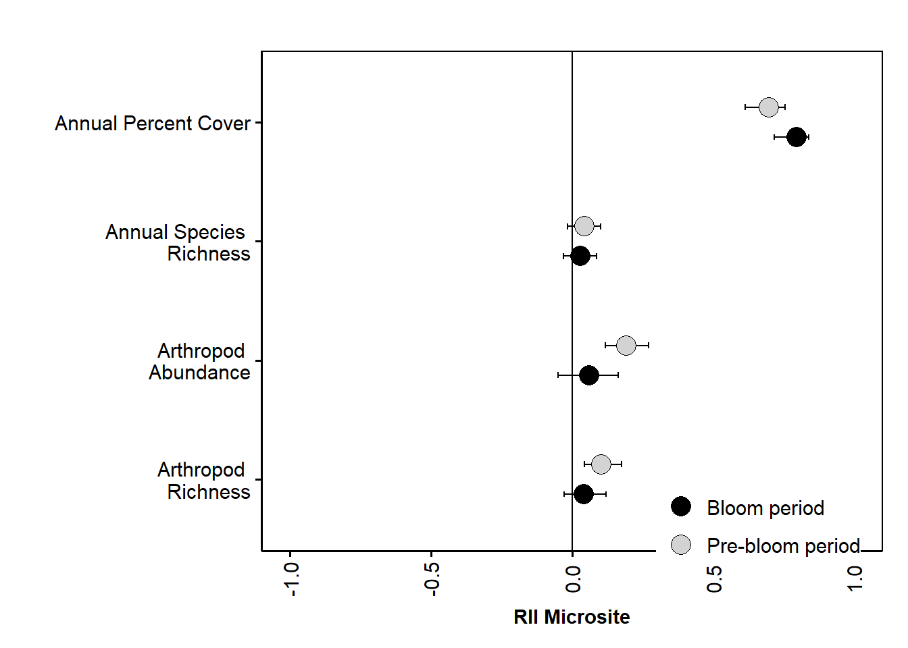

Disentangling the drivers and trade-offs of pollinator-mediated interactions between the foundation shrub Creosote bush (Larrea tridentata) and the annual desert dandelion (Malacothrix glabrata)
Overview
In arid ecosystems shrub facilitation is a critical process driving plant community structure and assembly, which leads to concentrations of annuals beneath the shrub canopies. Pollinator-mediated interactions have fitness consequences for their participants but are a largely unexplored indirect consequence of shrub-annual facilitation. We tested the capacity of the geographically widespread Creosote bush Larrea tridentata to influence the pollination of its annual understory during its phenological shift into spring flowering. In this system, we found that L. tridentata had a positive ecological effect on annual plant cover, as well as the abundance and richness of the arthropod community but that it also had indirect negative effects on pollinator visitation to a representative flowering annual plant which intensified when L. tridentata bloomed. These finding suggest that the net outcome of association with foundation plant species can be positive or negative depending on both the life-history stage of the protégé species tested and on the phenology of the foundation species. There is the capacity for these trade-offs to be widespread and an increasing focus on further documenting these trade-offs will advance both facilitation theory and assessment of selection processes that can drive co-evolutionary relationships between shrubs, annual plants, and pollinators.

Data wrangling and clean up
This section creates several .csv files that get used later for stats
Video data clean up
This section takes the raw datas, wrangles it into three formats, adds covariates and outputs the cleaned data as .csv files which re then sourced in later scripts
#data wrangling for video data
#import datasheets
vids <- read.csv("Clean Data/videos_clean.csv")
IDlist <- read.csv("Clean Data/video_repID.csv")
str(vids)## 'data.frame': 1313 obs. of 23 variables:
## $ Recorder : Factor w/ 6 levels "Brian","Jenna",..: 2 2 2 2 2 2 2 2 2 2 ...
## $ Rep : Factor w/ 13 levels "LO1","LO2","LO3",..: 1 1 1 1 1 1 1 1 1 1 ...
## $ plant.id : Factor w/ 61 levels "104","114","146",..: 3 3 3 3 3 3 3 3 3 3 ...
## $ microsite : Factor w/ 4 levels "open","open ",..: 1 1 1 1 1 1 1 1 1 1 ...
## $ flowering : Factor w/ 6 levels " Bloom"," Bloom ",..: 6 6 6 6 6 6 6 6 6 6 ...
## $ magnet.species : Factor w/ 2 levels "larrea","Larrea": 1 1 1 1 1 1 1 1 1 1 ...
## $ phyto.species : Factor w/ 1 level "malacothrix": 1 1 1 1 1 1 1 1 1 1 ...
## $ video.date : Factor w/ 20 levels "4.10.2017","4.11.2017",..: 1 1 1 1 1 1 1 1 1 1 ...
## $ video.length : Factor w/ 201 levels "0:31:34","0:32:53",..: 105 105 105 105 105 105 105 105 105 105 ...
## $ flower.fov : int 18 18 18 18 18 18 18 18 18 18 ...
## $ visitor.descript : Factor w/ 26 levels "","big!","can see elytra in flight",..: 26 26 1 26 26 26 26 26 26 26 ...
## $ visitor.rtu.original: Factor w/ 118 levels "","?","?little guy",..: 96 96 33 96 96 96 96 96 96 96 ...
## $ highest.rtu : Factor w/ 105 levels "","?","ant","apis mellifera",..: 46 46 69 46 46 46 46 46 46 46 ...
## $ flies.on : Factor w/ 4 levels "","0","N","Y": 4 4 4 4 4 4 4 4 4 4 ...
## $ visitor.behaviour : Factor w/ 304 levels "","*same flower as beetle",..: 20 262 20 262 20 262 262 262 262 262 ...
## $ other.description : Factor w/ 59 levels ""," ","1:06:00",..: 32 1 32 1 31 1 1 1 1 1 ...
## $ start.time : Factor w/ 1153 levels "0:00:00","0:00:02",..: 177 302 326 330 342 408 437 456 460 477 ...
## $ end.time : Factor w/ 1137 levels "","?","0:00:07",..: 157 308 300 374 313 394 417 435 439 447 ...
## $ total.time : Factor w/ 388 levels "#VALUE!","0:00:00",..: 3 110 2 226 3 35 10 40 39 16 ...
## $ flowers.visits : int 0 1 0 2 0 2 1 1 3 1 ...
## $ unique.fl.visited : int 0 1 0 1 0 2 1 1 3 1 ...
## $ X : Factor w/ 164 levels "","0:00:05","0:00:16",..: 1 1 1 1 1 1 1 1 1 1 ...
## $ X.1 : Factor w/ 8 levels "","0:09:29","0:10:39",..: 1 1 1 1 1 1 1 1 1 1 ...#clean up factor names
vids$Rep <- gsub('\\s+', "", vids$Rep)
vids$microsite <- gsub('\\s+', "", vids$microsite)
vids$flowering <- gsub('\\s+', "", vids$flowering)
vids$flowering <-gsub("post", "bloom", vids$flowering)
vids$flowering <-gsub("Bloom", "bloom", vids$flowering)
vids$microsite <-gsub("Shrub", "shrub", vids$microsite)
#check for correc rep info
vids$id.check <- paste(vids$video.date, vids$plant.id, vids$Rep, vids$microsite, vids$flowering)
#need to know how many videos are empty
id.counts <- count(vids, id.check)
sum(id.counts$n)## [1] 1313#subset out floral visits only ie instances where an insect touched a flower. Other insect uses were extracted from videos but not included in analyses
vids$uniID <- paste(vids$Rep, vids$video.date)
vids$uniID <- gsub('\\s+', "", vids$uniID)
#subset flower visits where insect flies on
flr <- filter(vids, flowers.visits != 0 & flies.on == "Y") ## Warning: package 'bindrcpp' was built under R version 3.4.4summary(flr)## Recorder Rep plant.id microsite
## Brian : 49 Length:697 193 : 34 Length:697
## Jenna :527 Class :character 146 : 32 Class :character
## shima : 0 Mode :character 199 : 30 Mode :character
## Shima : 8 268 : 30
## Shobika : 33 192 : 26
## Stephanie: 80 187 : 24
## (Other):521
## flowering magnet.species phyto.species video.date
## Length:697 larrea:648 malacothrix:697 4.10.2017:105
## Class :character Larrea: 49 4.13.2017: 86
## Mode :character 4.12.2017: 66
## 4.15.2017: 48
## 4.16.2017: 48
## 4.11.2017: 47
## (Other) :297
## video.length flower.fov visitor.descript
## 1:20:35: 27 Min. : 4.000 :639
## 1:30:48: 24 1st Qu.: 8.000 yellow faced : 36
## 1:01:09: 20 Median : 9.000 big! : 2
## 1:22:51: 20 Mean : 9.753 metallic : 2
## 1:15:05: 17 3rd Qu.:12.000 orange and black pierdae: 2
## 0:59:46: 15 Max. :21.000 can see elytra in flight: 1
## (Other):574 (Other) : 15
## visitor.rtu.original highest.rtu flies.on
## syrphid :279 syrphid :247 : 0
## small fly?: 64 eupeodes/scaeva: 89 0: 0
## syrphid? : 39 small fly? : 70 N: 0
## fly? : 37 bombylid : 41 Y:697
## tiny black: 37 bee : 36
## bombylid : 29 tiny black : 33
## (Other) :212 (Other) :181
## visitor.behaviour other.description
## :448 :672
## touchdown : 25 flies on : 5
## pollinate : 24 disappears out of sight: 2
## flies on : 12 rewatch : 2
## outside of flower : 10 : 1
## disappears from sight: 9 1:06:00 : 1
## (Other) :169 (Other) : 14
## start.time end.time total.time flowers.visits
## 0:00:00: 9 0:31:33: 3 0:00:01: 74 Min. :1.000
## 0:09:12: 3 0:02:18: 2 0:00:02: 27 1st Qu.:1.000
## 0:10:20: 3 0:03:48: 2 0:00:04: 17 Median :1.000
## 0:20:23: 3 0:06:03: 2 0:00:03: 16 Mean :1.327
## 0:01:46: 2 0:06:49: 2 0:00:14: 15 3rd Qu.:1.000
## 0:03:13: 2 0:07:51: 2 0:00:06: 14 Max. :7.000
## (Other):675 (Other):684 (Other):534
## unique.fl.visited X X.1 id.check
## Min. :1.000 :604 :696 Length:697
## 1st Qu.:1.000 1:06:00: 9 0:09:29: 1 Class :character
## Median :1.000 1:06:01: 3 0:10:39: 0 Mode :character
## Mean :1.281 0:07:09: 2 0:12 : 0
## 3rd Qu.:1.000 0:00:05: 1 0:18:58: 0
## Max. :5.000 0:00:55: 1 1:02:05: 0
## (Other): 77 (Other): 0
## uniID
## Length:697
## Class :character
## Mode :character
##
##
##
## str(flr)## 'data.frame': 697 obs. of 25 variables:
## $ Recorder : Factor w/ 6 levels "Brian","Jenna",..: 2 2 2 2 2 2 2 2 2 2 ...
## $ Rep : chr "LO1" "LO1" "LO1" "LO1" ...
## $ plant.id : Factor w/ 61 levels "104","114","146",..: 3 3 3 3 3 3 3 3 3 3 ...
## $ microsite : chr "open" "open" "open" "open" ...
## $ flowering : chr "pre" "pre" "pre" "pre" ...
## $ magnet.species : Factor w/ 2 levels "larrea","Larrea": 1 1 1 1 1 1 1 1 1 1 ...
## $ phyto.species : Factor w/ 1 level "malacothrix": 1 1 1 1 1 1 1 1 1 1 ...
## $ video.date : Factor w/ 20 levels "4.10.2017","4.11.2017",..: 1 1 1 1 1 1 1 1 1 1 ...
## $ video.length : Factor w/ 201 levels "0:31:34","0:32:53",..: 105 105 105 105 105 105 105 105 105 105 ...
## $ flower.fov : int 18 18 18 18 18 18 18 18 18 18 ...
## $ visitor.descript : Factor w/ 26 levels "","big!","can see elytra in flight",..: 26 26 26 26 26 26 26 26 26 26 ...
## $ visitor.rtu.original: Factor w/ 118 levels "","?","?little guy",..: 96 96 96 96 96 96 96 96 96 96 ...
## $ highest.rtu : Factor w/ 105 levels "","?","ant","apis mellifera",..: 46 46 46 46 46 46 46 46 46 46 ...
## $ flies.on : Factor w/ 4 levels "","0","N","Y": 4 4 4 4 4 4 4 4 4 4 ...
## $ visitor.behaviour : Factor w/ 304 levels "","*same flower as beetle",..: 262 262 262 262 262 262 262 262 262 262 ...
## $ other.description : Factor w/ 59 levels ""," ","1:06:00",..: 1 1 1 1 1 1 1 1 21 1 ...
## $ start.time : Factor w/ 1153 levels "0:00:00","0:00:02",..: 302 330 408 437 456 460 477 482 501 517 ...
## $ end.time : Factor w/ 1137 levels "","?","0:00:07",..: 308 374 394 417 435 439 447 481 465 482 ...
## $ total.time : Factor w/ 388 levels "#VALUE!","0:00:00",..: 110 226 35 10 40 39 16 138 10 16 ...
## $ flowers.visits : int 1 2 2 1 1 3 1 3 1 1 ...
## $ unique.fl.visited : int 1 1 2 1 1 3 1 3 1 1 ...
## $ X : Factor w/ 164 levels "","0:00:05","0:00:16",..: 1 1 1 1 1 1 1 1 1 1 ...
## $ X.1 : Factor w/ 8 levels "","0:09:29","0:10:39",..: 1 1 1 1 1 1 1 1 1 1 ...
## $ id.check : chr "4.10.2017 146 LO1 open pre" "4.10.2017 146 LO1 open pre" "4.10.2017 146 LO1 open pre" "4.10.2017 146 LO1 open pre" ...
## $ uniID : chr "LO14.10.2017" "LO14.10.2017" "LO14.10.2017" "LO14.10.2017" ...#convert time to seconds then decimal time
flr$pos.total.time <- as.POSIXct(strptime(flr$total.time, "%H:%M:%S"))
flr$dec.total.time <- (hour(flr$pos.total.time) * 3600 + minute(flr$pos.total.time) * 60 + second(flr$pos.total.time)) / 3600
flr <- mutate(flr, prop.fl.visited = flowers.visits/flower.fov, prop.un.fl.visited = unique.fl.visited/flower.fov)
counts <- count(flr, uniID)
sum(counts$n)## [1] 697#count(flr, Rep)
#count(flr, uniID)
#make fill ID list
IDlist$uniID <- paste(IDlist$Rep, IDlist$Day)
IDlist$uniID <- gsub('\\s+', "", IDlist$uniID)
#exclude certain reps. The excluded reps are those where the battery ran out or some disturbance occurred
IDlist <- filter(IDlist, Exclude != "Y")
#count visits per rep
counts <- flr %>% group_by(uniID) %>% summarise(total.visits = n())
sum(counts$total.visits)## [1] 697#count the total number of flowers visited per video
count.fl <- flr %>% group_by(uniID) %>% summarise(total.flowers = sum(flowers.visits))
sum(count.fl$total.flowers)## [1] 925#add reps with zero visits. Need to included videos that received no visits
zeros <- anti_join(IDlist, counts, by = "uniID")
all.data <- bind_rows(zeros, counts)
all.data <- dplyr::select(all.data, uniID, total.visits)
#replace NAs with zeros
all.data$total.visits[is.na(all.data$total.visits)] <- 0
sum(all.data$total.visits)## [1] 697#join video length
all.data <- IDlist %>% dplyr::select(Length, uniID) %>% right_join(all.data,., by = "uniID")
#join covariates
cov <- read.csv("Clean Data/video_cov.csv")
str(cov)## 'data.frame': 360 obs. of 14 variables:
## $ PlantID : Factor w/ 121 levels "104","114","146",..: 24 24 25 25 37 37 38 38 61 61 ...
## $ SecondaryID : Factor w/ 2 levels "","na": 2 2 2 2 2 2 2 2 2 2 ...
## $ Cam : Factor w/ 24 levels "BO1","BO2","BO3",..: 7 1 8 2 9 3 10 4 11 5 ...
## $ treatment : Factor w/ 2 levels "open","shrub": 2 1 2 1 2 1 2 1 2 1 ...
## $ flowering : Factor w/ 2 levels "bloom","pre": 2 2 2 2 2 2 2 2 2 2 ...
## $ Date : Factor w/ 20 levels "4.10.2017","4.11.2017",..: 1 1 1 1 1 1 1 1 1 1 ...
## $ TimeOut : Factor w/ 123 levels "","10:48","10:57",..: 53 53 54 54 56 56 55 55 58 58 ...
## $ flowers.shrub : int 0 0 0 0 0 0 0 0 0 0 ...
## $ flowers.pot : Factor w/ 16 levels "10","11","12",..: 16 16 16 16 16 16 5 2 7 6 ...
## $ het.shrub.blooming.neighbours : int 0 0 1 1 5 6 6 5 3 3 ...
## $ het.cactus.blooming.neighbours: int 0 0 0 0 0 0 0 0 0 0 ...
## $ understory.richness : int 5 4 5 2 3 3 5 3 5 3 ...
## $ het.annual.floral.density : int 10 16 29 19 8 18 8 15 4 0 ...
## $ understory.assoc : Factor w/ 21 levels "","?","acamp",..: 11 13 8 13 2 2 18 13 19 13 ...cov$uniID <- paste(cov$Cam, cov$Date)
cov$uniID <- gsub('\\s+', "", cov$uniID)
all.data <- right_join(cov, all.data, by = "uniID")
sum(all.data$total.visits)## [1] 697#convert to decimal time to standardize visits
all.data$pos.Length <- as.POSIXct(strptime(all.data$Length, "%H:%M:%S"))
all.data$dec.Length <- (hour(all.data$pos.Length) * 3600 + minute(all.data$pos.Length) * 60 + second(all.data$pos.Length)) / 3600
#plant visits per hour
all.data <- mutate(all.data, visits.per.hour = total.visits/dec.Length)
sum(all.data$total.visits)## [1] 697#number of flowers visited per hour
all.data <- left_join(all.data, count.fl, by = "uniID")
all.data$total.flowers[is.na(all.data$total.flowers)] <- 0
all.data <- mutate(all.data, flowers.per.hour = total.flowers/dec.Length)
sum(all.data$total.visits)## [1] 697#add weather data
weather <- read.csv("Clean Data/video_weather.csv")
weather.av <- weather %>% group_by(., Date) %>% summarise(., mean.Solar = mean(Solar), mean.Wind = mean(Wind), mean.MaxWind = mean(Max), mean.Temp = mean(Air.Temperature))
all.data <- right_join(weather.av, all.data, by = "Date")
sum(all.data$total.visits)## [1] 697#data aggregrated to replicate
write.csv(all.data, "Output Data/byrep_cleaned.csv")
#data left as individual observations
write.csv(flr, "Output Data/byobs_cleaned.csv")
#I also want a dataframe grouped by rtu: Bees, syrphids, bombyliids, leps and others.
#rtu.key is a table to classify the different rtu in datafile into categories
rtu.key <- read.csv("Clean Data/video_rtu_key.csv")
rtu.data <- left_join(rtu.key, flr, by = "highest.rtu")## Warning: Column `highest.rtu` joining factors with different levels,
## coercing to character vectorrtu.data <- dplyr::select(rtu.data, rtu.ag, plant.id, microsite, flowering, video.date, video.length, flower.fov, total.time, flowers.visits, unique.fl.visited, uniID)
count.rtu.fl <- rtu.data %>% group_by(uniID, rtu.ag) %>% summarise(total.flowers = sum(flowers.visits), total.visits = n())
#add zero rows
#zeros.rtu <- anti_join(IDlist, count.rtu.fl, by = "uniID")
#all.rtu.data <- bind_rows(zeros.rtu, count.rtu.fl)
#all.rtu.data <- dplyr::select(all.rtu.data, uniID, rtu.ag, total.visits, total.flowers)
#need to add the zero count rtu.
#spread, fill in zeros, then gather back
all.rtu.data <- count.rtu.fl
id <- as.data.frame(IDlist$uniID)
id$uniID <- id$`IDlist$uniID`
id <- dplyr::select(id, uniID)
id$syrphid <- 1
id$bee <- 2
id$other <- 3
id$bombylid <- 4
id$lep <- 5
id$honeybee <- 6
id <- gather(id, "rtu", "count", 2:7)
count(id, rtu)## # A tibble: 6 x 2
## rtu n
## <chr> <int>
## 1 bee 235
## 2 bombylid 235
## 3 honeybee 235
## 4 lep 235
## 5 other 235
## 6 syrphid 235id$join <- paste(id$uniID, id$rtu)
id$test <- 1
all.rtu.data$join <- paste(all.rtu.data$uniID, all.rtu.data$rtu.ag)
test <- dplyr::full_join(id, all.rtu.data, by = "join")
all.rtu <- dplyr::select(test, uniID.x, rtu, total.visits, total.flowers)
all.rtu$total.visits[is.na(all.rtu$total.visits)] <- 0
all.rtu$total.flowers[is.na(all.rtu$total.flowers)] <- 0
all.rtu <- dplyr::rename(all.rtu, uniID = uniID.x)
#join video length
all.rtu <- IDlist %>% dplyr::select(Length, uniID) %>% right_join(all.rtu,., by = "uniID")## Warning: Column `uniID` joining factor and character vector, coercing into
## character vector#join covariates
all.rtu <- right_join(cov, all.rtu, by = "uniID")
#convert to decimal time to standardize visits
all.rtu$pos.Length <- as.POSIXct(strptime(all.rtu$Length, "%H:%M:%S"))
all.rtu$dec.Length <- (hour(all.rtu$pos.Length) * 3600 + minute(all.rtu$pos.Length) * 60 + second(all.rtu$pos.Length)) / 3600
#plant visits per hour
all.rtu <- mutate(all.rtu, visits.per.hour = total.visits/dec.Length)
all.rtu <- mutate(all.rtu, flowers.per.hour = total.flowers/dec.Length)
all.rtu <- dplyr::select(all.rtu, -SecondaryID, -Cam)
#output rtu level observations (ag. by replicate)
write.csv(all.rtu, "Output Data/rtu_by_rep.csv")Pan trap data wrangling
This sections takes the long format ID sheet (pantrap_id.csv), converts it into wide format that vegan can use, and outputs the cleaned data as .csv to be sourced in later scripts
#by rep
#need new simplified key to reflect species additions
long <- read.csv("Clean Data/pantraps_ID.csv")
long$highest.rtu <- gsub(" ","", long$highest.rtu)
sum(long$Quantity)## [1] 3400#sp.key <- read.csv("Clean Data/species_key.csv")
long$Microsite <- gsub(" ","", long$Microsite)
long$uniID <- paste(long$Date, long$PlantID, long$Microsite)
#long <- inner_join(long, sp.key, by = "highest.rtu")
#for pinned specimens need to collapse & add up the Quantity
long.fil <- dplyr::select(long, uniID, highest.rtu, Quantity)
long.ag <- long.fil %>% group_by(uniID, highest.rtu) %>% summarise(Quantity = sum(Quantity))
sum(long.ag$Quantity)## [1] 3400counts <- long.ag %>% group_by(highest.rtu) %>% summarise(Quantity = sum(Quantity))
count(long.ag, highest.rtu)## # A tibble: 1,636 x 3
## # Groups: uniID [228]
## uniID highest.rtu n
## <chr> <chr> <int>
## 1 4.10.2017 184 open Cicadellidae 1
## 2 4.10.2017 184 open Eupeodesvolucris 1
## 3 4.10.2017 184 open Melyridae 1
## 4 4.10.2017 184 open Mythicomyiidae 1
## 5 4.10.2017 184 open Sciaridae 1
## 6 4.10.2017 184 open Usiinae 1
## 7 4.10.2017 184 shrub Anthidium 1
## 8 4.10.2017 184 shrub Chrysomelidae 1
## 9 4.10.2017 184 shrub Cicadellidae 1
## 10 4.10.2017 184 shrub Dialictus 1
## # ... with 1,626 more rows#count number of specimens of each rtu and write to a table
sp_by_rep <- long %>% group_by(highest.rtu) %>% summarise(Quantity = sum(Quantity))
write.csv(sp_by_rep, "Output Data/pans_sp_by_rep.csv")
#output in long format
write.csv(long.ag, "Output Data/pantraps_long.csv")
#spread into wide format for vegan calculations
wide <- long.ag %>% spread(highest.rtu, Quantity)
#not including damaged specimens in analyses
wide <- dplyr::select(wide, -damaged, -destroyed)
#need to replace all 0 in data frame
wide[is.na(wide)] <- 0
write.csv(wide, "Output Data/pantraps_wide.csv")Pan trap diversity calculations
This sections calculates diversity indices and exports full env/metadata .csv
Calculations excluding Melyrid beetles
insects <- read.csv("Output Data/pantraps_wide.csv", header = TRUE)
row.names(insects) <- insects$uniID
insects <- dplyr::select(insects, -X, -uniID)
#filter out Melyrid beetles
insects <- dplyr::select(insects, -Melyridae)
metadata <- read.csv("Clean Data/pantraps_cov.csv", header = TRUE)
metadata <- filter(metadata, species != "buckhorn")
metadata$plant.id <- as.character(metadata$plant.id)
str(metadata)## 'data.frame': 228 obs. of 9 variables:
## $ plant.id : chr "296" "296" "189" "189" ...
## $ species : Factor w/ 2 levels "buckhorn","larrea": 2 2 2 2 2 2 2 2 2 2 ...
## $ treatment : Factor w/ 2 levels "open","shrub": 2 1 2 1 2 1 2 1 2 1 ...
## $ blooming : Factor w/ 2 levels "post","pre": 2 2 2 2 2 2 2 2 2 2 ...
## $ date : Factor w/ 21 levels "4.10.2017","4.11.2017",..: 1 1 1 1 1 1 1 1 1 1 ...
## $ percent.cover: int 15 3 25 2 40 15 40 3 70 10 ...
## $ rich : int 3 3 6 6 1 3 3 2 3 4 ...
## $ perennial : Factor w/ 5 levels "","1","2","3",..: 1 1 1 1 1 1 1 1 1 1 ...
## $ X : Factor w/ 6 levels "","blue and white knocked over",..: 1 1 1 1 1 1 1 1 1 1 ...metadata$uniID <- paste(metadata$date, metadata$plant.id, metadata$treatment)
row.names(metadata) <- metadata$uniID
#check all ids in datasheets are found in the other
#zero.row <- anti_join(metadata, insects, by = "uniID")
#missing <- anti_join(insects, metadata, by = "uniID")
#write.csv(zero.row, "zeroreps.csv")
#check if insects and metadata are the same
all.equal(rownames(insects), rownames(metadata))## [1] "214 string mismatches"#sort into the same order
metadata <- metadata[rownames(insects), ]
#confirm - woo!
all.equal(rownames(insects), rownames(metadata))## [1] TRUE#grab and wrangle weather stn data
weather <- read.csv("Clean Data/pantraps_weather.csv")
str(weather)## 'data.frame': 152 obs. of 12 variables:
## $ date : Factor w/ 19 levels "4.10.2017","4.11.2017",..: 1 2 3 4 5 6 7 8 9 10 ...
## $ Hour : Factor w/ 8 levels "1:00 PM","10:00 AM",..: 2 2 2 2 2 2 2 2 2 2 ...
## $ Solar : num 0.81 0.79 0.8 0.81 0.81 0.8 0.63 0.82 0.84 0.76 ...
## $ Wind : num 3.9 4.1 5.1 4.9 4.5 3.2 3.3 4.3 4.6 4.7 ...
## $ Max : num 9 10.7 9.7 8.6 7.8 7.6 7.2 8.2 8.2 8.2 ...
## $ Air.Temperature : num 15 15.6 16.9 18.5 19.8 21 21.1 20.7 20.2 18.8 ...
## $ Soil.Temperature: num 18.9 18.8 18.7 18.8 19 19.3 19.8 20.4 21 21.5 ...
## $ Humidity : int 43 42 38 32 29 27 26 26 26 25 ...
## $ Dew : num 2.4 2.6 2.4 1.7 1.4 1.1 1.1 0.8 -0.1 -1.6 ...
## $ Wet : num 8.2 8.6 9.1 9.5 9.9 10.3 10.3 10 9.5 8.5 ...
## $ Baro. : int 873 873 873 873 872 872 872 872 871 871 ...
## $ Total : int 0 0 0 0 0 0 0 0 0 0 ...weather.av <- weather %>% group_by(., date) %>% summarise(., mean.Solar = mean(Solar), mean.Wind = mean(Wind), mean.MaxWind = mean(Max), mean.Temp = mean(Air.Temperature))
metadata <- right_join(weather.av, metadata, by = "date")## Warning: Column `date` joining factors with different levels, coercing to
## character vector#calculate abundances using vegan
metadata$abun <- apply(insects, 1, sum)
#check for total
sum(metadata$abun)## [1] 2144H <- diversity(insects)
simp <- diversity(insects, "simpson")
S <- specnumber(insects)
J <- H/log(S)
metadata$H <- H
metadata$Simpson <- simp
metadata$Species <- S
metadata$Even <- J
summary(metadata)## date mean.Solar mean.Wind mean.MaxWind
## Length:228 Min. :0.5737 Min. :3.525 Min. : 9.238
## Class :character 1st Qu.:0.6663 1st Qu.:4.787 1st Qu.: 9.625
## Mode :character Median :0.7688 Median :5.175 Median :10.050
## Mean :0.7419 Mean :5.241 Mean :10.184
## 3rd Qu.:0.7987 3rd Qu.:6.025 3rd Qu.:10.512
## Max. :0.8125 Max. :6.662 Max. :11.537
##
## mean.Temp plant.id species treatment blooming
## Min. :17.16 Length:228 buckhorn: 0 open :114 post:120
## 1st Qu.:17.40 Class :character larrea :228 shrub:114 pre :108
## Median :17.86 Mode :character
## Mean :18.46
## 3rd Qu.:18.56
## Max. :28.51
##
## percent.cover rich perennial
## Min. : 1.00 Min. :1.00 :223
## 1st Qu.: 2.00 1st Qu.:2.00 1 : 4
## Median :10.00 Median :3.00 2 : 1
## Mean :18.82 Mean :3.25 3 : 0
## 3rd Qu.:30.00 3rd Qu.:4.00 east: 0
## Max. :80.00 Max. :8.00
##
## X uniID abun
## :227 Length:228 Min. : 0.000
## blue and white knocked over: 1 Class :character 1st Qu.: 5.000
## east : 0 Mode :character Median : 9.000
## east side : 0 Mean : 9.404
## north : 0 3rd Qu.:12.000
## yellow knocked over : 0 Max. :30.000
##
## H Simpson Species Even
## Min. :0.000 Min. :0.0000 Min. : 0.000 Min. :0.0000
## 1st Qu.:1.332 1st Qu.:0.7321 1st Qu.: 4.000 1st Qu.:0.9138
## Median :1.748 Median :0.8056 Median : 6.000 Median :0.9577
## Mean :1.583 Mean :0.7569 Mean : 6.254 Mean :0.9104
## 3rd Qu.:1.994 3rd Qu.:0.8571 3rd Qu.: 8.000 3rd Qu.:0.9821
## Max. :2.516 Max. :1.0000 Max. :15.000 Max. :1.0000
## NA's :6#no Melyrid beetle output
write.csv(metadata, "Output Data/metadata_nobeetle.csv")
write.csv(insects, "Output Data/wide_nobeetle.csv")Calculations including Melyrid beetles
#with beetles
insects <- read.csv("Output Data/pantraps_wide.csv", header = TRUE)
row.names(insects) <- insects$uniID
insects <- dplyr::select(insects, -X, -uniID, -Zeroes)
#filter out beetles
#insects <- dplyr::select(insects, -Melyridae, -Melyridae.)
metadata <- read.csv("Clean Data/pantraps_cov.csv", header = TRUE)
metadata <- filter(metadata, species != "buckhorn")
metadata$plant.id <- as.character(metadata$plant.id)
str(metadata)## 'data.frame': 228 obs. of 9 variables:
## $ plant.id : chr "296" "296" "189" "189" ...
## $ species : Factor w/ 2 levels "buckhorn","larrea": 2 2 2 2 2 2 2 2 2 2 ...
## $ treatment : Factor w/ 2 levels "open","shrub": 2 1 2 1 2 1 2 1 2 1 ...
## $ blooming : Factor w/ 2 levels "post","pre": 2 2 2 2 2 2 2 2 2 2 ...
## $ date : Factor w/ 21 levels "4.10.2017","4.11.2017",..: 1 1 1 1 1 1 1 1 1 1 ...
## $ percent.cover: int 15 3 25 2 40 15 40 3 70 10 ...
## $ rich : int 3 3 6 6 1 3 3 2 3 4 ...
## $ perennial : Factor w/ 5 levels "","1","2","3",..: 1 1 1 1 1 1 1 1 1 1 ...
## $ X : Factor w/ 6 levels "","blue and white knocked over",..: 1 1 1 1 1 1 1 1 1 1 ...metadata$uniID <- paste(metadata$date, metadata$plant.id, metadata$treatment)
row.names(metadata) <- metadata$uniID
#check all ids in datasheets are found in the other
#zero.row <- anti_join(metadata, insects, by = "uniID")
#missing <- anti_join(insects, metadata, by = "uniID")
#write.csv(zero.row, "zeroreps.csv")
#check if insects and metadata are the same
all.equal(rownames(insects), rownames(metadata))## [1] "214 string mismatches"#sort into the same order
metadata <- metadata[rownames(insects), ]
#confirm - woo!
all.equal(rownames(insects), rownames(metadata))## [1] TRUE#grab and wrangle weather stn data
weather <- read.csv("Clean Data/pantraps_weather.csv")
str(weather)## 'data.frame': 152 obs. of 12 variables:
## $ date : Factor w/ 19 levels "4.10.2017","4.11.2017",..: 1 2 3 4 5 6 7 8 9 10 ...
## $ Hour : Factor w/ 8 levels "1:00 PM","10:00 AM",..: 2 2 2 2 2 2 2 2 2 2 ...
## $ Solar : num 0.81 0.79 0.8 0.81 0.81 0.8 0.63 0.82 0.84 0.76 ...
## $ Wind : num 3.9 4.1 5.1 4.9 4.5 3.2 3.3 4.3 4.6 4.7 ...
## $ Max : num 9 10.7 9.7 8.6 7.8 7.6 7.2 8.2 8.2 8.2 ...
## $ Air.Temperature : num 15 15.6 16.9 18.5 19.8 21 21.1 20.7 20.2 18.8 ...
## $ Soil.Temperature: num 18.9 18.8 18.7 18.8 19 19.3 19.8 20.4 21 21.5 ...
## $ Humidity : int 43 42 38 32 29 27 26 26 26 25 ...
## $ Dew : num 2.4 2.6 2.4 1.7 1.4 1.1 1.1 0.8 -0.1 -1.6 ...
## $ Wet : num 8.2 8.6 9.1 9.5 9.9 10.3 10.3 10 9.5 8.5 ...
## $ Baro. : int 873 873 873 873 872 872 872 872 871 871 ...
## $ Total : int 0 0 0 0 0 0 0 0 0 0 ...weather.av <- weather %>% group_by(., date) %>% summarise(., mean.Solar = mean(Solar), mean.Wind = mean(Wind), mean.MaxWind = mean(Max), mean.Temp = mean(Air.Temperature))
metadata <- right_join(weather.av, metadata, by = "date")## Warning: Column `date` joining factors with different levels, coercing to
## character vectormetadata$abun <- apply(insects, 1, sum)
#check for total
sum(metadata$abun)## [1] 3387H <- diversity(insects)
simp <- diversity(insects, "simpson")
S <- specnumber(insects)
J <- H/log(S)
metadata$H <- H
metadata$Simpson <- simp
metadata$Species <- S
metadata$Even <- J
summary(metadata)## date mean.Solar mean.Wind mean.MaxWind
## Length:228 Min. :0.5737 Min. :3.525 Min. : 9.238
## Class :character 1st Qu.:0.6663 1st Qu.:4.787 1st Qu.: 9.625
## Mode :character Median :0.7688 Median :5.175 Median :10.050
## Mean :0.7419 Mean :5.241 Mean :10.184
## 3rd Qu.:0.7987 3rd Qu.:6.025 3rd Qu.:10.512
## Max. :0.8125 Max. :6.662 Max. :11.537
##
## mean.Temp plant.id species treatment blooming
## Min. :17.16 Length:228 buckhorn: 0 open :114 post:120
## 1st Qu.:17.40 Class :character larrea :228 shrub:114 pre :108
## Median :17.86 Mode :character
## Mean :18.46
## 3rd Qu.:18.56
## Max. :28.51
##
## percent.cover rich perennial
## Min. : 1.00 Min. :1.00 :223
## 1st Qu.: 2.00 1st Qu.:2.00 1 : 4
## Median :10.00 Median :3.00 2 : 1
## Mean :18.82 Mean :3.25 3 : 0
## 3rd Qu.:30.00 3rd Qu.:4.00 east: 0
## Max. :80.00 Max. :8.00
##
## X uniID abun
## :227 Length:228 Min. : 0.00
## blue and white knocked over: 1 Class :character 1st Qu.:10.00
## east : 0 Mode :character Median :14.00
## east side : 0 Mean :14.86
## north : 0 3rd Qu.:19.00
## yellow knocked over : 0 Max. :55.00
##
## H Simpson Species Even
## Min. :0.000 Min. :0.0000 Min. : 0.00 Min. :0.0000
## 1st Qu.:1.233 1st Qu.:0.6239 1st Qu.: 5.00 1st Qu.:0.7950
## Median :1.699 Median :0.7769 Median : 7.00 Median :0.8842
## Mean :1.570 Mean :0.7034 Mean : 7.11 Mean :0.8413
## 3rd Qu.:1.991 3rd Qu.:0.8344 3rd Qu.: 9.00 3rd Qu.:0.9464
## Max. :2.552 Max. :1.0000 Max. :16.00 Max. :1.0000
## NA's :6#beetle output
write.csv(metadata, "Output Data/metadata_yesbeetle.csv")
write.csv(insects, "Output Data/wide_yesbeetle.csv")Calculations for only Melyrid beetles
##beetles only
insects <- read.csv("Output Data/pantraps_wide.csv", header = TRUE)
row.names(insects) <- insects$uniID
insects <- dplyr::select(insects, -X, -uniID)
#filter out beetles
insects <- dplyr::select(insects, Melyridae)
metadata <- read.csv("Clean Data/pantraps_cov.csv", header = TRUE)
metadata <- filter(metadata, species != "buckhorn")
metadata$plant.id <- as.character(metadata$plant.id)
str(metadata)## 'data.frame': 228 obs. of 9 variables:
## $ plant.id : chr "296" "296" "189" "189" ...
## $ species : Factor w/ 2 levels "buckhorn","larrea": 2 2 2 2 2 2 2 2 2 2 ...
## $ treatment : Factor w/ 2 levels "open","shrub": 2 1 2 1 2 1 2 1 2 1 ...
## $ blooming : Factor w/ 2 levels "post","pre": 2 2 2 2 2 2 2 2 2 2 ...
## $ date : Factor w/ 21 levels "4.10.2017","4.11.2017",..: 1 1 1 1 1 1 1 1 1 1 ...
## $ percent.cover: int 15 3 25 2 40 15 40 3 70 10 ...
## $ rich : int 3 3 6 6 1 3 3 2 3 4 ...
## $ perennial : Factor w/ 5 levels "","1","2","3",..: 1 1 1 1 1 1 1 1 1 1 ...
## $ X : Factor w/ 6 levels "","blue and white knocked over",..: 1 1 1 1 1 1 1 1 1 1 ...metadata$uniID <- paste(metadata$date, metadata$plant.id, metadata$treatment)
row.names(metadata) <- metadata$uniID
#check if insects and metadata are the same
all.equal(rownames(insects), rownames(metadata))## [1] "214 string mismatches"#sort into the same order
metadata <- metadata[rownames(insects), ]
#confirm - woo!
all.equal(rownames(insects), rownames(metadata))## [1] TRUE#grab and wrangle weather stn data
weather <- read.csv("Clean Data/pantraps_weather.csv")
str(weather)## 'data.frame': 152 obs. of 12 variables:
## $ date : Factor w/ 19 levels "4.10.2017","4.11.2017",..: 1 2 3 4 5 6 7 8 9 10 ...
## $ Hour : Factor w/ 8 levels "1:00 PM","10:00 AM",..: 2 2 2 2 2 2 2 2 2 2 ...
## $ Solar : num 0.81 0.79 0.8 0.81 0.81 0.8 0.63 0.82 0.84 0.76 ...
## $ Wind : num 3.9 4.1 5.1 4.9 4.5 3.2 3.3 4.3 4.6 4.7 ...
## $ Max : num 9 10.7 9.7 8.6 7.8 7.6 7.2 8.2 8.2 8.2 ...
## $ Air.Temperature : num 15 15.6 16.9 18.5 19.8 21 21.1 20.7 20.2 18.8 ...
## $ Soil.Temperature: num 18.9 18.8 18.7 18.8 19 19.3 19.8 20.4 21 21.5 ...
## $ Humidity : int 43 42 38 32 29 27 26 26 26 25 ...
## $ Dew : num 2.4 2.6 2.4 1.7 1.4 1.1 1.1 0.8 -0.1 -1.6 ...
## $ Wet : num 8.2 8.6 9.1 9.5 9.9 10.3 10.3 10 9.5 8.5 ...
## $ Baro. : int 873 873 873 873 872 872 872 872 871 871 ...
## $ Total : int 0 0 0 0 0 0 0 0 0 0 ...weather.av <- weather %>% group_by(., date) %>% summarise(., mean.Solar = mean(Solar), mean.Wind = mean(Wind), mean.MaxWind = mean(Max), mean.Temp = mean(Air.Temperature))
metadata <- right_join(weather.av, metadata, by = "date")## Warning: Column `date` joining factors with different levels, coercing to
## character vectormetadata$abun <- apply(insects, 1, sum)
#check for total
sum(metadata$abun)## [1] 1243H <- diversity(insects)
simp <- diversity(insects, "simpson")
S <- specnumber(insects)
J <- H/log(S)
metadata$H <- H
metadata$Simpson <- simp
metadata$Species <- S
metadata$Even <- J
summary(metadata)## date mean.Solar mean.Wind mean.MaxWind
## Length:228 Min. :0.5737 Min. :3.525 Min. : 9.238
## Class :character 1st Qu.:0.6663 1st Qu.:4.787 1st Qu.: 9.625
## Mode :character Median :0.7688 Median :5.175 Median :10.050
## Mean :0.7419 Mean :5.241 Mean :10.184
## 3rd Qu.:0.7987 3rd Qu.:6.025 3rd Qu.:10.512
## Max. :0.8125 Max. :6.662 Max. :11.537
## mean.Temp plant.id species treatment blooming
## Min. :17.16 Length:228 buckhorn: 0 open :114 post:120
## 1st Qu.:17.40 Class :character larrea :228 shrub:114 pre :108
## Median :17.86 Mode :character
## Mean :18.46
## 3rd Qu.:18.56
## Max. :28.51
## percent.cover rich perennial
## Min. : 1.00 Min. :1.00 :223
## 1st Qu.: 2.00 1st Qu.:2.00 1 : 4
## Median :10.00 Median :3.00 2 : 1
## Mean :18.82 Mean :3.25 3 : 0
## 3rd Qu.:30.00 3rd Qu.:4.00 east: 0
## Max. :80.00 Max. :8.00
## X uniID abun
## :227 Length:228 Min. : 0.000
## blue and white knocked over: 1 Class :character 1st Qu.: 1.750
## east : 0 Mode :character Median : 4.000
## east side : 0 Mean : 5.452
## north : 0 3rd Qu.: 7.000
## yellow knocked over : 0 Max. :46.000
## H Simpson Species Even
## Min. :4.908 Min. :0.9899 Min. :0.0000 Min. : 0
## 1st Qu.:4.908 1st Qu.:0.9899 1st Qu.:1.0000 1st Qu.:Inf
## Median :4.908 Median :0.9899 Median :1.0000 Median :Inf
## Mean :4.908 Mean :0.9899 Mean :0.8553 Mean :Inf
## 3rd Qu.:4.908 3rd Qu.:0.9899 3rd Qu.:1.0000 3rd Qu.:Inf
## Max. :4.908 Max. :0.9899 Max. :1.0000 Max. :Inf#no beetle output
write.csv(metadata, "Output Data/metadata_onlybeetle.csv")
write.csv(insects, "Output Data/wide_onlybeetle.csv")Statistics and modelling
Visitation and pollen deposition
Visitation modelling
Hypothesis testing for visitation. GLMM are computationally difficult so workflow is: Base hypothesis model to test for additive vs. interactive effects of predictors. Then add each covariate the best base model. RTU specific responses require a different dataframe so those analyses are done separately. Very full models are not tractable. AllFit.R started throwing an error so moving from lme4 to glmmTMBB. Support for car::Anova in glmmTMB is in the development version.
byrep <- read.csv("Output Data/byrep_cleaned.csv")
byrep$repID <- paste(byrep$PlantID, byrep$treatment)
byrep$treatment <- relevel(byrep$treatment, "open")
byrep$flowering <- relevel(byrep$flowering, "pre")
#calculate mean video length
mean(byrep$dec.Length)## [1] 1.324978#calculate total flower visits and total foraging instances
sum(byrep$total.flowers)## [1] 925sum(byrep$total.visits)## [1] 697#should be 925 and 697 - not 930 and 701.Flower visits
#base hypothesis testing model
#additive
m1 <- glmmTMB(total.flowers ~ treatment + flowering + flowers.pot + offset(log(dec.Length)) + (1|repID), family = "nbinom2", data = byrep)
summary(m1)## Family: nbinom2 ( log )
## Formula:
## total.flowers ~ treatment + flowering + flowers.pot + offset(log(dec.Length)) +
## (1 | repID)
## Data: byrep
##
## AIC BIC logLik deviance df.resid
## 1111.4 1132.2 -549.7 1099.4 229
##
## Random effects:
##
## Conditional model:
## Groups Name Variance Std.Dev.
## repID (Intercept) 0.1137 0.3372
## Number of obs: 235, groups: repID, 122
##
## Overdispersion parameter for nbinom2 family (): 1.03
##
## Conditional model:
## Estimate Std. Error z value Pr(>|z|)
## (Intercept) 0.99295 0.28935 3.432 0.00060 ***
## treatmentshrub -0.35032 0.16682 -2.100 0.03573 *
## floweringbloom -1.25514 0.16057 -7.817 5.41e-15 ***
## flowers.pot 0.06992 0.02667 2.622 0.00874 **
## ---
## Signif. codes: 0 '***' 0.001 '**' 0.01 '*' 0.05 '.' 0.1 ' ' 1plot(residuals(m1)~predict(m1))
car::Anova(m1, type = 2)## Analysis of Deviance Table (Type II Wald chisquare tests)
##
## Response: total.flowers
## Chisq Df Pr(>Chisq)
## treatment 4.4102 1 0.035726 *
## flowering 61.1040 1 5.414e-15 ***
## flowers.pot 6.8749 1 0.008742 **
## ---
## Signif. codes: 0 '***' 0.001 '**' 0.01 '*' 0.05 '.' 0.1 ' ' 1#interactive model
m2 <- glmmTMB(total.flowers ~ treatment * flowering + flowers.pot + offset(log(dec.Length)) + (1|repID), family = "nbinom2", data = byrep)
summary(m2)## Family: nbinom2 ( log )
## Formula:
## total.flowers ~ treatment * flowering + flowers.pot + offset(log(dec.Length)) +
## (1 | repID)
## Data: byrep
##
## AIC BIC logLik deviance df.resid
## 1113.4 1137.6 -549.7 1099.4 228
##
## Random effects:
##
## Conditional model:
## Groups Name Variance Std.Dev.
## repID (Intercept) 0.1117 0.3343
## Number of obs: 235, groups: repID, 122
##
## Overdispersion parameter for nbinom2 family (): 1.03
##
## Conditional model:
## Estimate Std. Error z value Pr(>|z|)
## (Intercept) 1.00505 0.29862 3.366 0.000764 ***
## treatmentshrub -0.37412 0.22063 -1.696 0.089950 .
## floweringbloom -1.27990 0.22004 -5.817 6.01e-09 ***
## flowers.pot 0.06994 0.02666 2.623 0.008705 **
## treatmentshrub:floweringbloom 0.05186 0.31483 0.165 0.869158
## ---
## Signif. codes: 0 '***' 0.001 '**' 0.01 '*' 0.05 '.' 0.1 ' ' 1car::Anova(m2, type =3)## Analysis of Deviance Table (Type III Wald chisquare tests)
##
## Response: total.flowers
## Chisq Df Pr(>Chisq)
## (Intercept) 11.3275 1 0.0007637 ***
## treatment 2.8753 1 0.0899499 .
## flowering 33.8324 1 6.007e-09 ***
## flowers.pot 6.8823 1 0.0087051 **
## treatment:flowering 0.0271 1 0.8691580
## ---
## Signif. codes: 0 '***' 0.001 '**' 0.01 '*' 0.05 '.' 0.1 ' ' 1null <- glmmTMB(total.flowers ~ flowers.pot + offset(log(dec.Length)) + (1|repID), family = "nbinom2", data = byrep)
summary(null)## Family: nbinom2 ( log )
## Formula:
## total.flowers ~ flowers.pot + offset(log(dec.Length)) + (1 | repID)
## Data: byrep
##
## AIC BIC logLik deviance df.resid
## 1164.4 1178.2 -578.2 1156.4 231
##
## Random effects:
##
## Conditional model:
## Groups Name Variance Std.Dev.
## repID (Intercept) 0.1149 0.339
## Number of obs: 235, groups: repID, 122
##
## Overdispersion parameter for nbinom2 family (): 0.702
##
## Conditional model:
## Estimate Std. Error z value Pr(>|z|)
## (Intercept) 0.78311 0.31030 2.524 0.0116 *
## flowers.pot 0.02793 0.02943 0.949 0.3425
## ---
## Signif. codes: 0 '***' 0.001 '**' 0.01 '*' 0.05 '.' 0.1 ' ' 1anova(m1,m2, null)## Data: byrep
## Models:
## null: total.flowers ~ flowers.pot + offset(log(dec.Length)) + (1 | , zi=~0, disp=~1
## null: repID), zi=~0, disp=~1
## m1: total.flowers ~ treatment + flowering + flowers.pot + offset(log(dec.Length)) + , zi=~0, disp=~1
## m1: (1 | repID), zi=~0, disp=~1
## m2: total.flowers ~ treatment * flowering + flowers.pot + offset(log(dec.Length)) + , zi=~0, disp=~1
## m2: (1 | repID), zi=~0, disp=~1
## Df AIC BIC logLik deviance Chisq Chi Df Pr(>Chisq)
## null 4 1164.4 1178.2 -578.20 1156.4
## m1 6 1111.4 1132.2 -549.71 1099.4 56.9782 2 4.24e-13 ***
## m2 7 1113.4 1137.6 -549.69 1099.4 0.0271 1 0.8691
## ---
## Signif. codes: 0 '***' 0.001 '**' 0.01 '*' 0.05 '.' 0.1 ' ' 1AIC(m1,m2, null)## df AIC
## m1 6 1111.414
## m2 7 1113.387
## null 4 1164.392car::Anova(m2, type = 3)## Analysis of Deviance Table (Type III Wald chisquare tests)
##
## Response: total.flowers
## Chisq Df Pr(>Chisq)
## (Intercept) 11.3275 1 0.0007637 ***
## treatment 2.8753 1 0.0899499 .
## flowering 33.8324 1 6.007e-09 ***
## flowers.pot 6.8823 1 0.0087051 **
## treatment:flowering 0.0271 1 0.8691580
## ---
## Signif. codes: 0 '***' 0.001 '**' 0.01 '*' 0.05 '.' 0.1 ' ' 1#model 1 is best fitForaging instances
#base additive model foraging instances
m3 <- glmmTMB(total.visits ~ treatment + flowering + flowers.pot + offset(log(dec.Length)) + (1|repID), family = "nbinom2", data = byrep)
summary(m3)## Family: nbinom2 ( log )
## Formula:
## total.visits ~ treatment + flowering + flowers.pot + offset(log(dec.Length)) +
## (1 | repID)
## Data: byrep
##
## AIC BIC logLik deviance df.resid
## 1000.7 1021.5 -494.4 988.7 229
##
## Random effects:
##
## Conditional model:
## Groups Name Variance Std.Dev.
## repID (Intercept) 0.04312 0.2077
## Number of obs: 235, groups: repID, 122
##
## Overdispersion parameter for nbinom2 family (): 1.48
##
## Conditional model:
## Estimate Std. Error z value Pr(>|z|)
## (Intercept) 0.96725 0.25551 3.786 0.000153 ***
## treatmentshrub -0.32818 0.14497 -2.264 0.023586 *
## floweringbloom -1.25629 0.14367 -8.744 < 2e-16 ***
## flowers.pot 0.04757 0.02351 2.024 0.043005 *
## ---
## Signif. codes: 0 '***' 0.001 '**' 0.01 '*' 0.05 '.' 0.1 ' ' 1car::Anova(m3, type = 2)## Analysis of Deviance Table (Type II Wald chisquare tests)
##
## Response: total.visits
## Chisq Df Pr(>Chisq)
## treatment 5.1248 1 0.02359 *
## flowering 76.4608 1 < 2e-16 ***
## flowers.pot 4.0952 1 0.04301 *
## ---
## Signif. codes: 0 '***' 0.001 '**' 0.01 '*' 0.05 '.' 0.1 ' ' 1#base interactive model
m5 <- glmmTMB(total.visits ~ treatment * flowering + flowers.pot + offset(log(dec.Length)) + (1|repID), family = "nbinom2", data = byrep)
summary(m5)## Family: nbinom2 ( log )
## Formula:
## total.visits ~ treatment * flowering + flowers.pot + offset(log(dec.Length)) +
## (1 | repID)
## Data: byrep
##
## AIC BIC logLik deviance df.resid
## 1002.7 1026.9 -494.3 988.7 228
##
## Random effects:
##
## Conditional model:
## Groups Name Variance Std.Dev.
## repID (Intercept) 0.04251 0.2062
## Number of obs: 235, groups: repID, 122
##
## Overdispersion parameter for nbinom2 family (): 1.48
##
## Conditional model:
## Estimate Std. Error z value Pr(>|z|)
## (Intercept) 0.97521 0.26277 3.711 0.000206 ***
## treatmentshrub -0.34375 0.18777 -1.831 0.067146 .
## floweringbloom -1.27368 0.19603 -6.497 8.17e-11 ***
## flowers.pot 0.04755 0.02351 2.023 0.043085 *
## treatmentshrub:floweringbloom 0.03680 0.28188 0.131 0.896131
## ---
## Signif. codes: 0 '***' 0.001 '**' 0.01 '*' 0.05 '.' 0.1 ' ' 1car::Anova(m5, type = 3)## Analysis of Deviance Table (Type III Wald chisquare tests)
##
## Response: total.visits
## Chisq Df Pr(>Chisq)
## (Intercept) 13.7732 1 0.0002063 ***
## treatment 3.3514 1 0.0671465 .
## flowering 42.2157 1 8.174e-11 ***
## flowers.pot 4.0921 1 0.0430849 *
## treatment:flowering 0.0170 1 0.8961310
## ---
## Signif. codes: 0 '***' 0.001 '**' 0.01 '*' 0.05 '.' 0.1 ' ' 1#null model
null <- glmmTMB(total.visits ~ flowers.pot + offset(log(dec.Length)) + (1|repID), family = "nbinom2", data = byrep)
anova(m3,m5, null)## Data: byrep
## Models:
## null: total.visits ~ flowers.pot + offset(log(dec.Length)) + (1 | repID), zi=~0, disp=~1
## m3: total.visits ~ treatment + flowering + flowers.pot + offset(log(dec.Length)) + , zi=~0, disp=~1
## m3: (1 | repID), zi=~0, disp=~1
## m5: total.visits ~ treatment * flowering + flowers.pot + offset(log(dec.Length)) + , zi=~0, disp=~1
## m5: (1 | repID), zi=~0, disp=~1
## Df AIC BIC logLik deviance Chisq Chi Df Pr(>Chisq)
## null 4 1066.0 1079.8 -528.98 1057.95
## m3 6 1000.7 1021.5 -494.35 988.70 69.251 2 9.17e-16 ***
## m5 7 1002.7 1026.9 -494.34 988.69 0.017 1 0.8961
## ---
## Signif. codes: 0 '***' 0.001 '**' 0.01 '*' 0.05 '.' 0.1 ' ' 1AIC(m3, m5, null)## df AIC
## m3 6 1000.704
## m5 7 1002.687
## null 4 1065.955ggplot(byrep, aes(flowering, flowers.per.hour)) + geom_boxplot() + facet_grid(~treatment)-1.png) ###Testing importance of covariates using TMB because glmer will not coverge. Choosing family:
###Testing importance of covariates using TMB because glmer will not coverge. Choosing family:
c1 <- glmmTMB(total.flowers ~ treatment + flowering + flowers.pot + understory.richness+ offset(log(dec.Length)) + (1|repID), family = "nbinom2", data = byrep)
summary(c1)## Family: nbinom2 ( log )
## Formula:
## total.flowers ~ treatment + flowering + flowers.pot + understory.richness +
## offset(log(dec.Length)) + (1 | repID)
## Data: byrep
##
## AIC BIC logLik deviance df.resid
## 1092.6 1116.7 -539.3 1078.6 224
##
## Random effects:
##
## Conditional model:
## Groups Name Variance Std.Dev.
## repID (Intercept) 0.1321 0.3635
## Number of obs: 231, groups: repID, 122
##
## Overdispersion parameter for nbinom2 family (): 1.1
##
## Conditional model:
## Estimate Std. Error z value Pr(>|z|)
## (Intercept) 0.50760 0.35732 1.421 0.1554
## treatmentshrub -0.38831 0.16723 -2.322 0.0202 *
## floweringbloom -1.19232 0.16523 -7.216 5.35e-13 ***
## flowers.pot 0.06941 0.02695 2.576 0.0100 *
## understory.richness 0.18934 0.09021 2.099 0.0358 *
## ---
## Signif. codes: 0 '***' 0.001 '**' 0.01 '*' 0.05 '.' 0.1 ' ' 1c1.1 <- glmmTMB(total.flowers ~ treatment + flowering + flowers.pot + understory.richness+ offset(log(dec.Length)) + (1|repID), family = "nbinom1", data = byrep)
summary(c1.1)## Family: nbinom1 ( log )
## Formula:
## total.flowers ~ treatment + flowering + flowers.pot + understory.richness +
## offset(log(dec.Length)) + (1 | repID)
## Data: byrep
##
## AIC BIC logLik deviance df.resid
## 1098.1 1122.2 -542.0 1084.1 224
##
## Random effects:
##
## Conditional model:
## Groups Name Variance Std.Dev.
## repID (Intercept) 5.185e-09 7.201e-05
## Number of obs: 231, groups: repID, 122
##
## Overdispersion parameter for nbinom1 family (): 4.26
##
## Conditional model:
## Estimate Std. Error z value Pr(>|z|)
## (Intercept) 0.46139 0.32209 1.433 0.15200
## treatmentshrub -0.28933 0.13231 -2.187 0.02876 *
## floweringbloom -0.96031 0.14132 -6.795 1.08e-11 ***
## flowers.pot 0.05704 0.02185 2.611 0.00904 **
## understory.richness 0.24002 0.07824 3.068 0.00216 **
## ---
## Signif. codes: 0 '***' 0.001 '**' 0.01 '*' 0.05 '.' 0.1 ' ' 1AIC(c1, c1.1)## df AIC
## c1 7 1092.593
## c1.1 7 1098.089#nbinom2 is betterAnnual floral density
c2 <- glmmTMB(total.flowers ~ treatment + flowering + flowers.pot + het.annual.floral.density + offset(log(dec.Length)) + (1|repID), family = nbinom2(link = "log"), data = byrep)
summary(c2)## Family: nbinom2 ( log )
## Formula:
## total.flowers ~ treatment + flowering + flowers.pot + het.annual.floral.density +
## offset(log(dec.Length)) + (1 | repID)
## Data: byrep
##
## AIC BIC logLik deviance df.resid
## 1093.7 1117.8 -539.9 1079.7 224
##
## Random effects:
##
## Conditional model:
## Groups Name Variance Std.Dev.
## repID (Intercept) 0.1308 0.3616
## Number of obs: 231, groups: repID, 122
##
## Overdispersion parameter for nbinom2 family (): 1.09
##
## Conditional model:
## Estimate Std. Error z value Pr(>|z|)
## (Intercept) 0.82562 0.29777 2.773 0.00556 **
## treatmentshrub -0.37743 0.16820 -2.244 0.02484 *
## floweringbloom -1.22703 0.16269 -7.542 4.62e-14 ***
## flowers.pot 0.08029 0.02705 2.969 0.00299 **
## het.annual.floral.density 0.03988 0.02334 1.709 0.08749 .
## ---
## Signif. codes: 0 '***' 0.001 '**' 0.01 '*' 0.05 '.' 0.1 ' ' 1car::Anova(c2, type = 2)## Analysis of Deviance Table (Type II Wald chisquare tests)
##
## Response: total.flowers
## Chisq Df Pr(>Chisq)
## treatment 5.0352 1 0.024838 *
## flowering 56.8850 1 4.621e-14 ***
## flowers.pot 8.8120 1 0.002993 **
## het.annual.floral.density 2.9200 1 0.087488 .
## ---
## Signif. codes: 0 '***' 0.001 '**' 0.01 '*' 0.05 '.' 0.1 ' ' 1c2.nest <- glmmTMB(total.flowers ~ treatment + flowering + flowers.pot + het.annual.floral.density + offset(log(dec.Length)) + (1|PlantID/repID), family = nbinom2(link = "log"), data = byrep)
summary(c2.nest)## Family: nbinom2 ( log )
## Formula:
## total.flowers ~ treatment + flowering + flowers.pot + het.annual.floral.density +
## offset(log(dec.Length)) + (1 | PlantID/repID)
## Data: byrep
##
## AIC BIC logLik deviance df.resid
## 1095.7 1123.3 -539.9 1079.7 223
##
## Random effects:
##
## Conditional model:
## Groups Name Variance Std.Dev.
## repID:PlantID (Intercept) 0.12228 0.34969
## PlantID (Intercept) 0.00987 0.09935
## Number of obs: 231, groups: repID:PlantID, 122; PlantID, 61
##
## Overdispersion parameter for nbinom2 family (): 1.09
##
## Conditional model:
## Estimate Std. Error z value Pr(>|z|)
## (Intercept) 0.82490 0.29852 2.763 0.00572 **
## treatmentshrub -0.37733 0.16732 -2.255 0.02412 *
## floweringbloom -1.22713 0.16283 -7.536 4.84e-14 ***
## flowers.pot 0.08032 0.02714 2.960 0.00308 **
## het.annual.floral.density 0.03984 0.02334 1.707 0.08789 .
## ---
## Signif. codes: 0 '***' 0.001 '**' 0.01 '*' 0.05 '.' 0.1 ' ' 1c2.v <- glmmTMB(total.visits ~ treatment + flowering + het.annual.floral.density + flowers.pot + offset(log(dec.Length)) + (1|repID), family = nbinom2(link = "log"), data = byrep)
summary(c2.v)## Family: nbinom2 ( log )
## Formula:
## total.visits ~ treatment + flowering + het.annual.floral.density +
## flowers.pot + offset(log(dec.Length)) + (1 | repID)
## Data: byrep
##
## AIC BIC logLik deviance df.resid
## 982.6 1006.7 -484.3 968.6 224
##
## Random effects:
##
## Conditional model:
## Groups Name Variance Std.Dev.
## repID (Intercept) 0.06451 0.254
## Number of obs: 231, groups: repID, 122
##
## Overdispersion parameter for nbinom2 family (): 1.62
##
## Conditional model:
## Estimate Std. Error z value Pr(>|z|)
## (Intercept) 0.78267 0.26236 2.983 0.00285 **
## treatmentshrub -0.34469 0.14616 -2.358 0.01836 *
## floweringbloom -1.22921 0.14464 -8.498 < 2e-16 ***
## het.annual.floral.density 0.04049 0.01981 2.044 0.04097 *
## flowers.pot 0.05874 0.02371 2.477 0.01325 *
## ---
## Signif. codes: 0 '***' 0.001 '**' 0.01 '*' 0.05 '.' 0.1 ' ' 1car::Anova(c2.v, type = 2)## Analysis of Deviance Table (Type II Wald chisquare tests)
##
## Response: total.visits
## Chisq Df Pr(>Chisq)
## treatment 5.5618 1 0.01836 *
## flowering 72.2217 1 < 2e-16 ***
## het.annual.floral.density 4.1772 1 0.04097 *
## flowers.pot 6.1351 1 0.01325 *
## ---
## Signif. codes: 0 '***' 0.001 '**' 0.01 '*' 0.05 '.' 0.1 ' ' 1q <- glmmTMB(total.visits ~ treatment + flowering + flowers.pot + het.annual.floral.density + offset(log(dec.Length)) + (1|repID), family = nbinom1(link = "log"), data = byrep)
car::Anova(q, type = 2)## Analysis of Deviance Table (Type II Wald chisquare tests)
##
## Response: total.visits
## Chisq Df Pr(>Chisq)
## treatment 2.3015 1 0.12925
## flowering 57.8924 1 2.769e-14 ***
## flowers.pot 6.5441 1 0.01052 *
## het.annual.floral.density 10.1798 1 0.00142 **
## ---
## Signif. codes: 0 '***' 0.001 '**' 0.01 '*' 0.05 '.' 0.1 ' ' 1AIC(c2.v, q)## df AIC
## c2.v 7 982.5998
## q 7 988.4092c2.vnest <- glmmTMB(total.visits ~ treatment + flowering + flowers.pot + het.annual.floral.density + offset(log(dec.Length)) + (1|PlantID/repID), family = nbinom2(link = "log"), data = byrep)
summary(c2.vnest)## Family: nbinom2 ( log )
## Formula:
## total.visits ~ treatment + flowering + flowers.pot + het.annual.floral.density +
## offset(log(dec.Length)) + (1 | PlantID/repID)
## Data: byrep
##
## AIC BIC logLik deviance df.resid
## 984.6 1012.1 -484.3 968.6 223
##
## Random effects:
##
## Conditional model:
## Groups Name Variance Std.Dev.
## repID:PlantID (Intercept) 0.04899 0.2213
## PlantID (Intercept) 0.01753 0.1324
## Number of obs: 231, groups: repID:PlantID, 122; PlantID, 61
##
## Overdispersion parameter for nbinom2 family (): 1.62
##
## Conditional model:
## Estimate Std. Error z value Pr(>|z|)
## (Intercept) 0.78251 0.26356 2.969 0.00299 **
## treatmentshrub -0.34480 0.14425 -2.390 0.01684 *
## floweringbloom -1.22826 0.14485 -8.479 < 2e-16 ***
## flowers.pot 0.05863 0.02389 2.455 0.01410 *
## het.annual.floral.density 0.04069 0.01984 2.051 0.04029 *
## ---
## Signif. codes: 0 '***' 0.001 '**' 0.01 '*' 0.05 '.' 0.1 ' ' 1Number of blooming shrub neighbours
c3 <- glmmTMB(total.flowers ~ treatment + flowering + flowers.pot + het.shrub.blooming.neighbours + offset(log(dec.Length)) + (1|repID), family = "nbinom2", data = byrep)
summary(c3)## Family: nbinom2 ( log )
## Formula:
## total.flowers ~ treatment + flowering + flowers.pot + het.shrub.blooming.neighbours +
## offset(log(dec.Length)) + (1 | repID)
## Data: byrep
##
## AIC BIC logLik deviance df.resid
## 1095.5 1119.6 -540.8 1081.5 224
##
## Random effects:
##
## Conditional model:
## Groups Name Variance Std.Dev.
## repID (Intercept) 0.1183 0.344
## Number of obs: 231, groups: repID, 122
##
## Overdispersion parameter for nbinom2 family (): 1.06
##
## Conditional model:
## Estimate Std. Error z value Pr(>|z|)
## (Intercept) 0.94775 0.29061 3.261 0.00111 **
## treatmentshrub -0.32888 0.16998 -1.935 0.05301 .
## floweringbloom -1.16615 0.18601 -6.269 3.63e-10 ***
## flowers.pot 0.07598 0.02703 2.811 0.00494 **
## het.shrub.blooming.neighbours -0.04940 0.04093 -1.207 0.22744
## ---
## Signif. codes: 0 '***' 0.001 '**' 0.01 '*' 0.05 '.' 0.1 ' ' 1car::Anova(c3, type = 2)## Analysis of Deviance Table (Type II Wald chisquare tests)
##
## Response: total.flowers
## Chisq Df Pr(>Chisq)
## treatment 3.7437 1 0.053008 .
## flowering 39.3038 1 3.627e-10 ***
## flowers.pot 7.9027 1 0.004936 **
## het.shrub.blooming.neighbours 1.4568 1 0.227438
## ---
## Signif. codes: 0 '***' 0.001 '**' 0.01 '*' 0.05 '.' 0.1 ' ' 1c2.v <- glmmTMB(total.visits ~ treatment + flowering + flowers.pot + het.shrub.blooming.neighbours + offset(log(dec.Length)) + (1|repID), family = "nbinom2", data = byrep)
summary(c2.v)## Family: nbinom2 ( log )
## Formula:
## total.visits ~ treatment + flowering + flowers.pot + het.shrub.blooming.neighbours +
## offset(log(dec.Length)) + (1 | repID)
## Data: byrep
##
## AIC BIC logLik deviance df.resid
## 986.5 1010.6 -486.2 972.5 224
##
## Random effects:
##
## Conditional model:
## Groups Name Variance Std.Dev.
## repID (Intercept) 0.0557 0.236
## Number of obs: 231, groups: repID, 122
##
## Overdispersion parameter for nbinom2 family (): 1.53
##
## Conditional model:
## Estimate Std. Error z value Pr(>|z|)
## (Intercept) 0.92071 0.25682 3.585 0.000337 ***
## treatmentshrub -0.31539 0.14829 -2.127 0.033435 *
## floweringbloom -1.20875 0.16707 -7.235 4.66e-13 ***
## flowers.pot 0.05296 0.02376 2.229 0.025799 *
## het.shrub.blooming.neighbours -0.03124 0.03744 -0.835 0.403997
## ---
## Signif. codes: 0 '***' 0.001 '**' 0.01 '*' 0.05 '.' 0.1 ' ' 1car::Anova(c2.v)## Analysis of Deviance Table (Type II Wald chisquare tests)
##
## Response: total.visits
## Chisq Df Pr(>Chisq)
## treatment 4.5234 1 0.03343 *
## flowering 52.3453 1 4.655e-13 ***
## flowers.pot 4.9695 1 0.02580 *
## het.shrub.blooming.neighbours 0.6964 1 0.40400
## ---
## Signif. codes: 0 '***' 0.001 '**' 0.01 '*' 0.05 '.' 0.1 ' ' 1RTU visitation modelling
Models for testing RTU-specificity
byrtu <- read.csv("Output Data/rtu_by_rep.csv")
byrtu$repID <- paste(byrtu$PlantID, byrtu$treatment)
byrtu$treatment <- relevel(byrtu$treatment, "open")
byrtu$flowering <- relevel(byrtu$flowering, "pre")
#Full model (foraging instances)
mFullPQ <- MASS::glmmPQL(total.visits~flowering * rtu * treatment + flowers.pot + het.annual.floral.density + het.shrub.blooming.neighbours + offset(log(dec.Length)), random = ~1|repID, family="quasipoisson", data = byrtu)## iteration 1## iteration 2## iteration 3## iteration 4## iteration 5## iteration 6## iteration 7## iteration 8## iteration 9## iteration 10car::Anova(mFullPQ, type = 3)## Analysis of Deviance Table (Type III tests)
##
## Response: total.visits
## Chisq Df Pr(>Chisq)
## (Intercept) 19.8681 1 8.297e-06 ***
## flowering 9.7626 1 0.001781 **
## rtu 130.6380 5 < 2.2e-16 ***
## treatment 3.5703 1 0.058821 .
## flowers.pot 6.9279 1 0.008486 **
## het.annual.floral.density 5.9225 1 0.014949 *
## het.shrub.blooming.neighbours 1.4649 1 0.226158
## flowering:rtu 51.4774 5 6.904e-10 ***
## flowering:treatment 2.5109 1 0.113063
## rtu:treatment 3.8084 5 0.577314
## flowering:rtu:treatment 4.4364 5 0.488432
## ---
## Signif. codes: 0 '***' 0.001 '**' 0.01 '*' 0.05 '.' 0.1 ' ' 1mP1 <- MASS::glmmPQL(total.visits~flowering * rtu + treatment + flowers.pot + het.annual.floral.density + het.shrub.blooming.neighbours + offset(log(dec.Length)), random = ~1|repID, family="quasipoisson", data = byrtu)## iteration 1## iteration 2## iteration 3## iteration 4## iteration 5## iteration 6## iteration 7## iteration 8## iteration 9## iteration 10car::Anova(mP1, type = 3)## Analysis of Deviance Table (Type III tests)
##
## Response: total.visits
## Chisq Df Pr(>Chisq)
## (Intercept) 25.3323 1 4.825e-07 ***
## flowering 9.5228 1 0.002029 **
## rtu 214.8311 5 < 2.2e-16 ***
## treatment 4.1070 1 0.042707 *
## flowers.pot 6.1402 1 0.013214 *
## het.annual.floral.density 5.3897 1 0.020256 *
## het.shrub.blooming.neighbours 1.2050 1 0.272315
## flowering:rtu 67.1419 5 4.026e-13 ***
## ---
## Signif. codes: 0 '***' 0.001 '**' 0.01 '*' 0.05 '.' 0.1 ' ' 1mPt <- MASS::glmmPQL(total.visits~ flowering * rtu + treatment + flowers.pot + het.annual.floral.density + offset(log(dec.Length)), random = ~1|repID, family="quasipoisson", data = byrtu)## iteration 1## iteration 2## iteration 3## iteration 4## iteration 5## iteration 6## iteration 7## iteration 8## iteration 9## iteration 10summary(mPt)## Linear mixed-effects model fit by maximum likelihood
## Data: byrtu
## AIC BIC logLik
## NA NA NA
##
## Random effects:
## Formula: ~1 | repID
## (Intercept) Residual
## StdDev: 0.4850369 1.447393
##
## Variance function:
## Structure: fixed weights
## Formula: ~invwt
## Fixed effects: total.visits ~ flowering * rtu + treatment + flowers.pot + het.annual.floral.density + offset(log(dec.Length))
## Value Std.Error DF t-value p-value
## (Intercept) -1.588635 0.32 1251 -4.966677 0.0000
## floweringbloom -1.620187 0.49 1251 -3.297275 0.0010
## rtubombylid -0.251314 0.33 1251 -0.766237 0.4437
## rtuhoneybee -2.197225 0.69 1251 -3.202810 0.0014
## rtulep -3.113515 1.05 1251 -2.960560 0.0031
## rtuother 0.725937 0.26 1251 2.746994 0.0061
## rtusyrphid 1.986351 0.23 1251 8.586087 0.0000
## treatmentshrub -0.314510 0.15 120 -2.147471 0.0338
## flowers.pot 0.052119 0.02 1251 2.386102 0.0172
## het.annual.floral.density 0.035599 0.02 1251 2.231026 0.0259
## floweringbloom:rtubombylid 1.254617 0.61 1251 2.060619 0.0395
## floweringbloom:rtuhoneybee -22.688568 67450.81 1251 -0.000336 0.9997
## floweringbloom:rtulep 3.660059 1.19 1251 3.082328 0.0021
## floweringbloom:rtuother 1.510897 0.53 1251 2.840494 0.0046
## floweringbloom:rtusyrphid -1.439807 0.60 1251 -2.407984 0.0162
## Correlation:
## (Intr) flwrng rtbmby rthnyb rtulep rtuthr
## floweringbloom -0.265
## rtubombylid -0.449 0.292
## rtuhoneybee -0.214 0.140 0.209
## rtulep -0.140 0.091 0.136 0.065
## rtuother -0.557 0.362 0.543 0.260 0.169
## rtusyrphid -0.636 0.414 0.620 0.297 0.193 0.770
## treatmentshrub -0.222 -0.001 0.000 0.000 0.000 0.000
## flowers.pot -0.682 -0.059 0.000 0.000 0.000 0.000
## het.annual.floral.density -0.207 0.039 0.000 0.000 0.000 0.000
## floweringbloom:rtubombylid 0.242 -0.801 -0.539 -0.113 -0.074 -0.293
## floweringbloom:rtuhoneybee 0.000 0.000 0.000 0.000 0.000 0.000
## floweringbloom:rtulep 0.124 -0.411 -0.121 -0.058 -0.886 -0.150
## floweringbloom:rtuother 0.277 -0.917 -0.270 -0.129 -0.084 -0.497
## floweringbloom:rtusyrphid 0.246 -0.815 -0.240 -0.115 -0.075 -0.298
## rtsyrp trtmnt flwrs. ht.n.. flwrngblm:rtb
## floweringbloom
## rtubombylid
## rtuhoneybee
## rtulep
## rtuother
## rtusyrphid
## treatmentshrub 0.000
## flowers.pot 0.000 0.022
## het.annual.floral.density 0.000 0.012 0.167
## floweringbloom:rtubombylid -0.334 0.000 0.000 0.000
## floweringbloom:rtuhoneybee 0.000 0.000 0.000 0.000 0.000
## floweringbloom:rtulep -0.171 0.000 0.000 0.000 0.331
## floweringbloom:rtuother -0.382 0.000 0.000 0.000 0.740
## floweringbloom:rtusyrphid -0.387 0.000 0.000 0.000 0.658
## flwrngblm:rth flwrngblm:rtl flwrngblm:rtt
## floweringbloom
## rtubombylid
## rtuhoneybee
## rtulep
## rtuother
## rtusyrphid
## treatmentshrub
## flowers.pot
## het.annual.floral.density
## floweringbloom:rtubombylid
## floweringbloom:rtuhoneybee
## floweringbloom:rtulep 0.000
## floweringbloom:rtuother 0.000 0.379
## floweringbloom:rtusyrphid 0.000 0.337 0.753
##
## Standardized Within-Group Residuals:
## Min Q1 Med Q3 Max
## -2.0571160 -0.3624978 -0.2266572 -0.0598081 15.5262260
##
## Number of Observations: 1386
## Number of Groups: 122car::Anova(mPt, type = 3)## Analysis of Deviance Table (Type III tests)
##
## Response: total.visits
## Chisq Df Pr(>Chisq)
## (Intercept) 24.9378 1 5.921e-07 ***
## flowering 10.9910 1 0.0009156 ***
## rtu 211.6795 5 < 2.2e-16 ***
## treatment 4.6621 1 0.0308357 *
## flowers.pot 5.7558 1 0.0164346 *
## het.annual.floral.density 5.0319 1 0.0248841 *
## flowering:rtu 66.1569 5 6.448e-13 ***
## ---
## Signif. codes: 0 '***' 0.001 '**' 0.01 '*' 0.05 '.' 0.1 ' ' 1lsmeans(mPt, pairwise~flowering|rtu)## $lsmeans
## rtu = bee:
## flowering lsmean SE df lower.CL upper.CL
## pre -0.9079822 2.229065e-01 120 -1.349322e+00 -4.666429e-01
## bloom -2.5281696 4.422209e-01 120 -3.403736e+00 -1.652603e+00
##
## rtu = bombylid:
## flowering lsmean SE df lower.CL upper.CL
## pre -1.1592967 2.512650e-01 120 -1.656784e+00 -6.618095e-01
## bloom -1.5248674 2.713327e-01 120 -2.062087e+00 -9.876476e-01
##
## rtu = honeybee:
## flowering lsmean SE df lower.CL upper.CL
## pre -3.1052068 6.528378e-01 120 -4.397780e+00 -1.812633e+00
## bloom -27.4139624 6.745081e+04 120 -1.335753e+05 1.335205e+05
##
## rtu = lep:
## flowering lsmean SE df lower.CL upper.CL
## pre -4.0214975 1.030319e+00 120 -6.061458e+00 -1.981537e+00
## bloom -1.9816259 3.383675e-01 120 -2.651570e+00 -1.311682e+00
##
## rtu = other:
## flowering lsmean SE df lower.CL upper.CL
## pre -0.1820452 1.593623e-01 120 -4.975715e-01 1.334810e-01
## bloom -0.2913358 1.535827e-01 120 -5.954189e-01 1.274719e-02
##
## rtu = syrphid:
## flowering lsmean SE df lower.CL upper.CL
## pre 1.0783689 9.529154e-02 120 8.896983e-01 1.267039e+00
## bloom -1.9816259 3.383675e-01 120 -2.651570e+00 -1.311682e+00
##
## Results are averaged over the levels of: treatment
## Results are given on the log (not the response) scale.
## Confidence level used: 0.95
##
## $contrasts
## rtu = bee:
## contrast estimate SE df t.ratio p.value
## pre - bloom 1.6201873 4.913716e-01 1251 3.297 0.0010
##
## rtu = bombylid:
## contrast estimate SE df t.ratio p.value
## pre - bloom 0.3655708 3.646299e-01 1251 1.003 0.3163
##
## rtu = honeybee:
## contrast estimate SE df t.ratio p.value
## pre - bloom 24.3087556 6.745081e+04 1251 0.000 0.9997
##
## rtu = lep:
## contrast estimate SE df t.ratio p.value
## pre - bloom -2.0398717 1.082705e+00 1251 -1.884 0.0598
##
## rtu = other:
## contrast estimate SE df t.ratio p.value
## pre - bloom 0.1092906 2.125640e-01 1251 0.514 0.6072
##
## rtu = syrphid:
## contrast estimate SE df t.ratio p.value
## pre - bloom 3.0599947 3.460817e-01 1251 8.842 <.0001
##
## Results are averaged over the levels of: treatment
## Results are given on the log (not the response) scale.#full model flower visits
mFullPQv <- MASS::glmmPQL(total.flowers~flowering * rtu * treatment + flowers.pot + het.annual.floral.density + het.shrub.blooming.neighbours + offset(log(dec.Length)), random = ~1|repID, family="quasipoisson", data = byrtu)## iteration 1## iteration 2## iteration 3## iteration 4## iteration 5## iteration 6## iteration 7## iteration 8## iteration 9## iteration 10summary(mFullPQv)## Linear mixed-effects model fit by maximum likelihood
## Data: byrtu
## AIC BIC logLik
## NA NA NA
##
## Random effects:
## Formula: ~1 | repID
## (Intercept) Residual
## StdDev: 0.6254456 1.557716
##
## Variance function:
## Structure: fixed weights
## Formula: ~invwt
## Fixed effects: total.flowers ~ flowering * rtu * treatment + flowers.pot + het.annual.floral.density + het.shrub.blooming.neighbours + offset(log(dec.Length))
## Value Std.Error DF
## (Intercept) -0.979401 0.31 1239
## floweringbloom -2.170939 0.60 1239
## rtubombylid -1.386294 0.44 1239
## rtuhoneybee -27.099837 91448.63 1239
## rtulep -4.158883 1.59 1239
## rtuother -0.115832 0.29 1239
## rtusyrphid 1.435828 0.22 1239
## treatmentshrub -1.087439 0.43 120
## flowers.pot 0.074602 0.02 1239
## het.annual.floral.density 0.028843 0.02 1239
## het.shrub.blooming.neighbours -0.073878 0.04 1239
## floweringbloom:rtubombylid 2.772589 0.76 1239
## floweringbloom:rtuhoneybee 2.045460 130440.74 1239
## floweringbloom:rtulep 4.969813 1.72 1239
## floweringbloom:rtuother 2.255898 0.65 1239
## floweringbloom:rtusyrphid -0.424227 0.69 1239
## floweringbloom:treatmentshrub 1.620544 0.83 1239
## rtubombylid:treatmentshrub 1.486378 0.66 1239
## rtuhoneybee:treatmentshrub 26.457983 91448.63 1239
## rtulep:treatmentshrub 1.214444 2.26 1239
## rtuother:treatmentshrub 0.834954 0.53 1239
## rtusyrphid:treatmentshrub 0.749631 0.44 1239
## floweringbloom:rtubombylid:treatmentshrub -2.718522 1.10 1239
## floweringbloom:rtuhoneybee:treatmentshrub -26.999103 164084.54 1239
## floweringbloom:rtulep:treatmentshrub -2.207696 2.45 1239
## floweringbloom:rtuother:treatmentshrub -1.349053 0.93 1239
## floweringbloom:rtusyrphid:treatmentshrub -2.454380 1.11 1239
## t-value p-value
## (Intercept) -3.188597 0.0015
## floweringbloom -3.628790 0.0003
## rtubombylid -3.152829 0.0017
## rtuhoneybee -0.000296 0.9998
## rtulep -2.623312 0.0088
## rtuother -0.404299 0.6861
## rtusyrphid 6.562759 0.0000
## treatmentshrub -2.529903 0.0127
## flowers.pot 3.431012 0.0006
## het.annual.floral.density 1.726618 0.0845
## het.shrub.blooming.neighbours -1.771301 0.0768
## floweringbloom:rtubombylid 3.640573 0.0003
## floweringbloom:rtuhoneybee 0.000016 1.0000
## floweringbloom:rtulep 2.888562 0.0039
## floweringbloom:rtuother 3.449004 0.0006
## floweringbloom:rtusyrphid -0.619005 0.5360
## floweringbloom:treatmentshrub 1.953852 0.0509
## rtubombylid:treatmentshrub 2.237183 0.0255
## rtuhoneybee:treatmentshrub 0.000289 0.9998
## rtulep:treatmentshrub 0.536803 0.5915
## rtuother:treatmentshrub 1.589935 0.1121
## rtusyrphid:treatmentshrub 1.707432 0.0880
## floweringbloom:rtubombylid:treatmentshrub -2.470281 0.0136
## floweringbloom:rtuhoneybee:treatmentshrub -0.000165 0.9999
## floweringbloom:rtulep:treatmentshrub -0.899880 0.3684
## floweringbloom:rtuother:treatmentshrub -1.447750 0.1479
## floweringbloom:rtusyrphid:treatmentshrub -2.210122 0.0273
## Correlation:
## (Intr) flwrng rtbmby rthnyb
## floweringbloom -0.182
## rtubombylid -0.286 0.147
## rtuhoneybee 0.000 0.000 0.000
## rtulep -0.079 0.041 0.055 0.000
## rtuother -0.439 0.226 0.307 0.000
## rtusyrphid -0.575 0.295 0.402 0.000
## treatmentshrub -0.357 0.157 0.205 0.000
## flowers.pot -0.702 -0.045 0.000 0.000
## het.annual.floral.density -0.211 0.048 0.000 0.000
## het.shrub.blooming.neighbours 0.017 -0.135 0.000 0.000
## floweringbloom:rtubombylid 0.165 -0.764 -0.577 0.000
## floweringbloom:rtuhoneybee 0.000 0.000 0.000 -0.701
## floweringbloom:rtulep 0.073 -0.338 -0.051 0.000
## floweringbloom:rtuother 0.192 -0.889 -0.134 0.000
## floweringbloom:rtusyrphid 0.184 -0.849 -0.128 0.000
## floweringbloom:treatmentshrub 0.150 -0.702 -0.106 0.000
## rtubombylid:treatmentshrub 0.189 -0.097 -0.662 0.000
## rtuhoneybee:treatmentshrub 0.000 0.000 0.000 -1.000
## rtulep:treatmentshrub 0.056 -0.029 -0.039 0.000
## rtuother:treatmentshrub 0.240 -0.123 -0.167 0.000
## rtusyrphid:treatmentshrub 0.287 -0.147 -0.200 0.000
## floweringbloom:rtubombylid:treatmentshrub -0.114 0.529 0.400 0.000
## floweringbloom:rtuhoneybee:treatmentshrub 0.000 0.000 0.000 0.557
## floweringbloom:rtulep:treatmentshrub -0.051 0.237 0.036 0.000
## floweringbloom:rtuother:treatmentshrub -0.135 0.624 0.094 0.000
## floweringbloom:rtusyrphid:treatmentshrub -0.113 0.524 0.079 0.000
## rtulep rtuthr rtsyrp trtmnt
## floweringbloom
## rtubombylid
## rtuhoneybee
## rtulep
## rtuother 0.085
## rtusyrphid 0.111 0.617
## treatmentshrub 0.057 0.314 0.411
## flowers.pot 0.000 0.000 0.000 0.005
## het.annual.floral.density 0.000 0.000 0.000 0.004
## het.shrub.blooming.neighbours 0.000 0.000 0.000 -0.022
## floweringbloom:rtubombylid -0.032 -0.177 -0.232 -0.118
## floweringbloom:rtuhoneybee 0.000 0.000 0.000 0.000
## floweringbloom:rtulep -0.921 -0.078 -0.103 -0.052
## floweringbloom:rtuother -0.037 -0.438 -0.270 -0.138
## floweringbloom:rtusyrphid -0.036 -0.197 -0.319 -0.131
## floweringbloom:treatmentshrub -0.029 -0.163 -0.213 -0.478
## rtubombylid:treatmentshrub -0.037 -0.203 -0.266 -0.591
## rtuhoneybee:treatmentshrub 0.000 0.000 0.000 0.000
## rtulep:treatmentshrub -0.701 -0.060 -0.078 -0.174
## rtuother:treatmentshrub -0.046 -0.546 -0.337 -0.748
## rtusyrphid:treatmentshrub -0.056 -0.307 -0.498 -0.895
## floweringbloom:rtubombylid:treatmentshrub 0.022 0.123 0.161 0.357
## floweringbloom:rtuhoneybee:treatmentshrub 0.000 0.000 0.000 0.000
## floweringbloom:rtulep:treatmentshrub 0.646 0.055 0.072 0.160
## floweringbloom:rtuother:treatmentshrub 0.026 0.307 0.190 0.422
## floweringbloom:rtusyrphid:treatmentshrub 0.022 0.122 0.197 0.354
## flwrs. ht.n.. ht.s..
## floweringbloom
## rtubombylid
## rtuhoneybee
## rtulep
## rtuother
## rtusyrphid
## treatmentshrub
## flowers.pot
## het.annual.floral.density 0.170
## het.shrub.blooming.neighbours -0.087 -0.098
## floweringbloom:rtubombylid 0.000 0.000 0.000
## floweringbloom:rtuhoneybee 0.000 0.000 0.000
## floweringbloom:rtulep 0.000 0.000 0.000
## floweringbloom:rtuother 0.000 0.000 0.000
## floweringbloom:rtusyrphid 0.000 0.000 0.000
## floweringbloom:treatmentshrub 0.009 0.005 -0.021
## rtubombylid:treatmentshrub 0.000 0.000 0.000
## rtuhoneybee:treatmentshrub 0.000 0.000 0.000
## rtulep:treatmentshrub 0.000 0.000 0.000
## rtuother:treatmentshrub 0.000 0.000 0.000
## rtusyrphid:treatmentshrub 0.000 0.000 0.000
## floweringbloom:rtubombylid:treatmentshrub 0.000 0.000 0.000
## floweringbloom:rtuhoneybee:treatmentshrub 0.000 0.000 0.000
## floweringbloom:rtulep:treatmentshrub 0.000 0.000 0.000
## floweringbloom:rtuother:treatmentshrub 0.000 0.000 0.000
## floweringbloom:rtusyrphid:treatmentshrub 0.000 0.000 0.000
## flwrngblm:rtb flwrngblm:rth
## floweringbloom
## rtubombylid
## rtuhoneybee
## rtulep
## rtuother
## rtusyrphid
## treatmentshrub
## flowers.pot
## het.annual.floral.density
## het.shrub.blooming.neighbours
## floweringbloom:rtubombylid
## floweringbloom:rtuhoneybee 0.000
## floweringbloom:rtulep 0.266 0.000
## floweringbloom:rtuother 0.699 0.000
## floweringbloom:rtusyrphid 0.667 0.000
## floweringbloom:treatmentshrub 0.551 0.000
## rtubombylid:treatmentshrub 0.382 0.000
## rtuhoneybee:treatmentshrub 0.000 0.701
## rtulep:treatmentshrub 0.022 0.000
## rtuother:treatmentshrub 0.097 0.000
## rtusyrphid:treatmentshrub 0.116 0.000
## floweringbloom:rtubombylid:treatmentshrub -0.692 0.000
## floweringbloom:rtuhoneybee:treatmentshrub 0.000 -0.795
## floweringbloom:rtulep:treatmentshrub -0.186 0.000
## floweringbloom:rtuother:treatmentshrub -0.490 0.000
## floweringbloom:rtusyrphid:treatmentshrub -0.411 0.000
## flwrngblm:rtl flwrngblm:rtt
## floweringbloom
## rtubombylid
## rtuhoneybee
## rtulep
## rtuother
## rtusyrphid
## treatmentshrub
## flowers.pot
## het.annual.floral.density
## het.shrub.blooming.neighbours
## floweringbloom:rtubombylid
## floweringbloom:rtuhoneybee
## floweringbloom:rtulep
## floweringbloom:rtuother 0.309
## floweringbloom:rtusyrphid 0.295 0.776
## floweringbloom:treatmentshrub 0.244 0.641
## rtubombylid:treatmentshrub 0.034 0.089
## rtuhoneybee:treatmentshrub 0.000 0.000
## rtulep:treatmentshrub 0.646 0.026
## rtuother:treatmentshrub 0.043 0.239
## rtusyrphid:treatmentshrub 0.051 0.135
## floweringbloom:rtubombylid:treatmentshrub -0.184 -0.483
## floweringbloom:rtuhoneybee:treatmentshrub 0.000 0.000
## floweringbloom:rtulep:treatmentshrub -0.701 -0.217
## floweringbloom:rtuother:treatmentshrub -0.217 -0.702
## floweringbloom:rtusyrphid:treatmentshrub -0.182 -0.479
## flwrngblm:rts flwrngblm:t rtbmb:
## floweringbloom
## rtubombylid
## rtuhoneybee
## rtulep
## rtuother
## rtusyrphid
## treatmentshrub
## flowers.pot
## het.annual.floral.density
## het.shrub.blooming.neighbours
## floweringbloom:rtubombylid
## floweringbloom:rtuhoneybee
## floweringbloom:rtulep
## floweringbloom:rtuother
## floweringbloom:rtusyrphid
## floweringbloom:treatmentshrub 0.612
## rtubombylid:treatmentshrub 0.085 0.307
## rtuhoneybee:treatmentshrub 0.000 0.000 0.000
## rtulep:treatmentshrub 0.025 0.090 0.112
## rtuother:treatmentshrub 0.107 0.388 0.484
## rtusyrphid:treatmentshrub 0.159 0.464 0.579
## floweringbloom:rtubombylid:treatmentshrub -0.461 -0.750 -0.604
## floweringbloom:rtuhoneybee:treatmentshrub 0.000 0.000 0.000
## floweringbloom:rtulep:treatmentshrub -0.207 -0.336 -0.104
## floweringbloom:rtuother:treatmentshrub -0.545 -0.886 -0.273
## floweringbloom:rtusyrphid:treatmentshrub -0.617 -0.743 -0.229
## rthny: rtlp:t rtthr: rtsyr:
## floweringbloom
## rtubombylid
## rtuhoneybee
## rtulep
## rtuother
## rtusyrphid
## treatmentshrub
## flowers.pot
## het.annual.floral.density
## het.shrub.blooming.neighbours
## floweringbloom:rtubombylid
## floweringbloom:rtuhoneybee
## floweringbloom:rtulep
## floweringbloom:rtuother
## floweringbloom:rtusyrphid
## floweringbloom:treatmentshrub
## rtubombylid:treatmentshrub
## rtuhoneybee:treatmentshrub
## rtulep:treatmentshrub 0.000
## rtuother:treatmentshrub 0.000 0.142
## rtusyrphid:treatmentshrub 0.000 0.170 0.733
## floweringbloom:rtubombylid:treatmentshrub 0.000 -0.068 -0.292 -0.350
## floweringbloom:rtuhoneybee:treatmentshrub -0.557 0.000 0.000 0.000
## floweringbloom:rtulep:treatmentshrub 0.000 -0.922 -0.131 -0.157
## floweringbloom:rtuother:treatmentshrub 0.000 -0.080 -0.564 -0.413
## floweringbloom:rtusyrphid:treatmentshrub 0.000 -0.067 -0.290 -0.395
## flwrngblm:rtb: flwrngblm:rth:
## floweringbloom
## rtubombylid
## rtuhoneybee
## rtulep
## rtuother
## rtusyrphid
## treatmentshrub
## flowers.pot
## het.annual.floral.density
## het.shrub.blooming.neighbours
## floweringbloom:rtubombylid
## floweringbloom:rtuhoneybee
## floweringbloom:rtulep
## floweringbloom:rtuother
## floweringbloom:rtusyrphid
## floweringbloom:treatmentshrub
## rtubombylid:treatmentshrub
## rtuhoneybee:treatmentshrub
## rtulep:treatmentshrub
## rtuother:treatmentshrub
## rtusyrphid:treatmentshrub
## floweringbloom:rtubombylid:treatmentshrub
## floweringbloom:rtuhoneybee:treatmentshrub 0.000
## floweringbloom:rtulep:treatmentshrub 0.254 0.000
## floweringbloom:rtuother:treatmentshrub 0.667 0.000
## floweringbloom:rtusyrphid:treatmentshrub 0.560 0.000
## flwrngblm:rtl: flwrngblm:rtt:
## floweringbloom
## rtubombylid
## rtuhoneybee
## rtulep
## rtuother
## rtusyrphid
## treatmentshrub
## flowers.pot
## het.annual.floral.density
## het.shrub.blooming.neighbours
## floweringbloom:rtubombylid
## floweringbloom:rtuhoneybee
## floweringbloom:rtulep
## floweringbloom:rtuother
## floweringbloom:rtusyrphid
## floweringbloom:treatmentshrub
## rtubombylid:treatmentshrub
## rtuhoneybee:treatmentshrub
## rtulep:treatmentshrub
## rtuother:treatmentshrub
## rtusyrphid:treatmentshrub
## floweringbloom:rtubombylid:treatmentshrub
## floweringbloom:rtuhoneybee:treatmentshrub
## floweringbloom:rtulep:treatmentshrub
## floweringbloom:rtuother:treatmentshrub 0.299
## floweringbloom:rtusyrphid:treatmentshrub 0.251 0.661
##
## Standardized Within-Group Residuals:
## Min Q1 Med Q3 Max
## -3.094915e+00 -3.957152e-01 -2.342040e-01 -1.979457e-13 1.295935e+01
##
## Number of Observations: 1386
## Number of Groups: 122car::Anova(mFullPQv, type = 3)## Analysis of Deviance Table (Type III tests)
##
## Response: total.flowers
## Chisq Df Pr(>Chisq)
## (Intercept) 10.3691 1 0.0012814 **
## flowering 13.4297 1 0.0002477 ***
## rtu 122.2774 5 < 2.2e-16 ***
## treatment 6.5276 1 0.0106215 *
## flowers.pot 12.0057 1 0.0005304 ***
## het.annual.floral.density 3.0404 1 0.0812140 .
## het.shrub.blooming.neighbours 3.1998 1 0.0736454 .
## flowering:rtu 56.2173 5 7.331e-11 ***
## flowering:treatment 3.8934 1 0.0484767 *
## rtu:treatment 5.5265 5 0.3550496
## flowering:rtu:treatment 8.0131 5 0.1555130
## ---
## Signif. codes: 0 '***' 0.001 '**' 0.01 '*' 0.05 '.' 0.1 ' ' 1mQ <- MASS::glmmPQL(total.flowers~flowering * rtu + treatment + flowers.pot + offset(log(dec.Length)), random = ~1|repID, family="quasipoisson", data = byrtu)## iteration 1## iteration 2## iteration 3## iteration 4## iteration 5## iteration 6## iteration 7## iteration 8## iteration 9## iteration 10summary(mQ)## Linear mixed-effects model fit by maximum likelihood
## Data: byrtu
## AIC BIC logLik
## NA NA NA
##
## Random effects:
## Formula: ~1 | repID
## (Intercept) Residual
## StdDev: 0.5928136 1.756631
##
## Variance function:
## Structure: fixed weights
## Formula: ~invwt
## Fixed effects: total.flowers ~ flowering * rtu + treatment + flowers.pot + offset(log(dec.Length))
## Value Std.Error DF t-value p-value
## (Intercept) -1.065088 0.31 1276 -3.402195 0.0007
## floweringbloom -1.729417 0.44 1276 -3.913995 0.0001
## rtubombylid -0.807923 0.35 1276 -2.315110 0.0208
## rtuhoneybee -2.116256 0.59 1276 -3.581115 0.0004
## rtulep -3.725693 1.26 1276 -2.949200 0.0032
## rtuother 0.145508 0.26 1276 0.549903 0.5825
## rtusyrphid 1.663378 0.21 1276 7.870473 0.0000
## treatmentshrub -0.337480 0.17 120 -2.036839 0.0439
## flowers.pot 0.064325 0.02 1276 2.792144 0.0053
## floweringbloom:rtubombylid 1.683391 0.59 1276 2.876219 0.0041
## floweringbloom:rtuhoneybee -23.267473 77838.03 1276 -0.000299 0.9998
## floweringbloom:rtulep 4.131159 1.36 1276 3.032681 0.0025
## floweringbloom:rtuother 1.749109 0.50 1276 3.503232 0.0005
## floweringbloom:rtusyrphid -1.326906 0.56 1276 -2.376259 0.0176
## Correlation:
## (Intr) flwrng rtbmby rthnyb rtulep rtuthr
## floweringbloom -0.216
## rtubombylid -0.344 0.244
## rtuhoneybee -0.203 0.144 0.182
## rtulep -0.095 0.067 0.085 0.050
## rtuother -0.453 0.321 0.407 0.240 0.112
## rtusyrphid -0.568 0.402 0.509 0.301 0.141 0.671
## treatmentshrub -0.257 -0.003 0.000 0.000 0.000 0.000
## flowers.pot -0.723 -0.080 0.000 0.000 0.000 0.000
## floweringbloom:rtubombylid 0.205 -0.748 -0.596 -0.109 -0.051 -0.242
## floweringbloom:rtuhoneybee 0.000 0.000 0.000 0.000 0.000 0.000
## floweringbloom:rtulep 0.088 -0.321 -0.079 -0.047 -0.927 -0.104
## floweringbloom:rtuother 0.240 -0.877 -0.216 -0.127 -0.060 -0.530
## floweringbloom:rtusyrphid 0.215 -0.784 -0.193 -0.114 -0.053 -0.254
## rtsyrp trtmnt flwrs. flwrngblm:rtb
## floweringbloom
## rtubombylid
## rtuhoneybee
## rtulep
## rtuother
## rtusyrphid
## treatmentshrub 0.000
## flowers.pot 0.000 0.024
## floweringbloom:rtubombylid -0.304 0.000 0.000
## floweringbloom:rtuhoneybee 0.000 0.000 0.000 0.000
## floweringbloom:rtulep -0.130 0.000 0.000 0.243
## floweringbloom:rtuother -0.356 0.000 0.000 0.662
## floweringbloom:rtusyrphid -0.378 0.000 0.000 0.592
## flwrngblm:rth flwrngblm:rtl flwrngblm:rtt
## floweringbloom
## rtubombylid
## rtuhoneybee
## rtulep
## rtuother
## rtusyrphid
## treatmentshrub
## flowers.pot
## floweringbloom:rtubombylid
## floweringbloom:rtuhoneybee
## floweringbloom:rtulep 0.000
## floweringbloom:rtuother 0.000 0.284
## floweringbloom:rtusyrphid 0.000 0.254 0.694
##
## Standardized Within-Group Residuals:
## Min Q1 Med Q3 Max
## -2.58297328 -0.35124351 -0.22054878 -0.04730295 16.81942078
##
## Number of Observations: 1410
## Number of Groups: 122lsmeans(mQ, pairwise~flowering|rtu, adjust = "Tukey")## $lsmeans
## rtu = bee:
## flowering lsmean SE df lower.CL upper.CL
## pre -0.3116507 2.030589e-01 120 -7.136932e-01 9.039172e-02
## bloom -2.0410676 4.003113e-01 120 -2.833656e+00 -1.248479e+00
##
## rtu = bombylid:
## flowering lsmean SE df lower.CL upper.CL
## pre -1.1195734 2.965087e-01 120 -1.706640e+00 -5.325068e-01
## bloom -1.1655989 2.633352e-01 120 -1.686984e+00 -6.442135e-01
##
## rtu = honeybee:
## flowering lsmean SE df lower.CL upper.CL
## pre -2.4279062 5.615623e-01 120 -3.539761e+00 -1.316052e+00
## bloom -27.4247964 7.783803e+04 120 -1.541413e+05 1.540865e+05
##
## rtu = lep:
## flowering lsmean SE df lower.CL upper.CL
## pre -4.0373442 1.249813e+00 120 -6.511886e+00 -1.562802e+00
## bloom -1.6356025 3.290960e-01 120 -2.287190e+00 -9.840153e-01
##
## rtu = other:
## flowering lsmean SE df lower.CL upper.CL
## pre -0.1661432 1.901261e-01 120 -5.425796e-01 2.102933e-01
## bloom -0.1464508 1.668773e-01 120 -4.768563e-01 1.839547e-01
##
## rtu = syrphid:
## flowering lsmean SE df lower.CL upper.CL
## pre 1.3517276 1.039138e-01 120 1.145986e+00 1.557470e+00
## bloom -1.7045954 3.401836e-01 120 -2.378135e+00 -1.031055e+00
##
## Results are averaged over the levels of: treatment
## Results are given on the log (not the response) scale.
## Confidence level used: 0.95
##
## $contrasts
## rtu = bee:
## contrast estimate SE df t.ratio p.value
## pre - bloom 1.72941690 4.418547e-01 1276 3.914 0.0001
##
## rtu = bombylid:
## contrast estimate SE df t.ratio p.value
## pre - bloom 0.04602546 3.886082e-01 1276 0.118 0.9057
##
## rtu = honeybee:
## contrast estimate SE df t.ratio p.value
## pre - bloom 24.99689016 7.783803e+04 1276 0.000 0.9997
##
## rtu = lep:
## contrast estimate SE df t.ratio p.value
## pre - bloom -2.40174164 1.289996e+00 1276 -1.862 0.0629
##
## rtu = other:
## contrast estimate SE df t.ratio p.value
## pre - bloom -0.01969237 2.403112e-01 1276 -0.082 0.9347
##
## rtu = syrphid:
## contrast estimate SE df t.ratio p.value
## pre - bloom 3.05632296 3.468089e-01 1276 8.813 <.0001
##
## Results are averaged over the levels of: treatment
## Results are given on the log (not the response) scale.car::Anova(mQ, type = 3)## Analysis of Deviance Table (Type III tests)
##
## Response: total.flowers
## Chisq Df Pr(>Chisq)
## (Intercept) 11.6910 1 0.000628 ***
## flowering 15.4730 1 8.369e-05 ***
## rtu 197.0575 5 < 2.2e-16 ***
## treatment 4.1903 1 0.040655 *
## flowers.pot 7.8743 1 0.005014 **
## flowering:rtu 70.0222 5 1.014e-13 ***
## ---
## Signif. codes: 0 '***' 0.001 '**' 0.01 '*' 0.05 '.' 0.1 ' ' 1mQt <- MASS::glmmPQL(total.flowers~treatment * rtu + flowering + flowers.pot + offset(log(dec.Length)), random = ~1|repID, family="quasipoisson", data = byrtu)## iteration 1## iteration 2## iteration 3## iteration 4## iteration 5## iteration 6## iteration 7## iteration 8## iteration 9## iteration 10summary(mQt)## Linear mixed-effects model fit by maximum likelihood
## Data: byrtu
## AIC BIC logLik
## NA NA NA
##
## Random effects:
## Formula: ~1 | repID
## (Intercept) Residual
## StdDev: 0.5750516 1.846181
##
## Variance function:
## Structure: fixed weights
## Formula: ~invwt
## Fixed effects: total.flowers ~ treatment * rtu + flowering + flowers.pot + offset(log(dec.Length))
## Value Std.Error DF t-value p-value
## (Intercept) -1.013293 0.33 1276 -3.048126 0.0024
## treatmentshrub -0.768393 0.41 120 -1.855772 0.0659
## rtubombylid -0.405465 0.35 1276 -1.172759 0.2411
## rtuhoneybee -26.651751 81279.74 1276 -0.000328 0.9997
## rtulep -1.280934 0.47 1276 -2.731322 0.0064
## rtuother 0.567521 0.27 1276 2.073396 0.0383
## rtusyrphid 1.396657 0.24 1276 5.718842 0.0000
## floweringbloom -1.247982 0.14 1276 -8.751229 0.0000
## flowers.pot 0.063954 0.02 1276 2.693338 0.0072
## treatmentshrub:rtubombylid 0.582396 0.57 1276 1.023756 0.3061
## treatmentshrub:rtuhoneybee 25.520349 81279.74 1276 0.000314 0.9997
## treatmentshrub:rtulep 0.331853 0.79 1276 0.422179 0.6730
## treatmentshrub:rtuother 0.623465 0.47 1276 1.330074 0.1837
## treatmentshrub:rtusyrphid 0.334142 0.44 1276 0.765836 0.4439
## Correlation:
## (Intr) trtmnt rtbmby rthnyb rtulep rtuthr
## treatmentshrub -0.401
## rtubombylid -0.416 0.334
## rtuhoneybee 0.000 0.000 0.000
## rtulep -0.307 0.246 0.295 0.000
## rtuother -0.525 0.422 0.505 0.000 0.372
## rtusyrphid -0.589 0.473 0.566 0.000 0.417 0.715
## floweringbloom 0.060 -0.004 0.000 0.000 0.000 0.000
## flowers.pot -0.703 0.010 0.000 0.000 0.000 0.000
## treatmentshrub:rtubombylid 0.253 -0.674 -0.608 0.000 -0.179 -0.307
## treatmentshrub:rtuhoneybee 0.000 0.000 0.000 -1.000 0.000 0.000
## treatmentshrub:rtulep 0.183 -0.488 -0.176 0.000 -0.597 -0.222
## treatmentshrub:rtuother 0.307 -0.819 -0.295 0.000 -0.218 -0.584
## treatmentshrub:rtusyrphid 0.330 -0.879 -0.317 0.000 -0.234 -0.400
## rtsyrp flwrng flwrs. trtmntshrb:rtb
## treatmentshrub
## rtubombylid
## rtuhoneybee
## rtulep
## rtuother
## rtusyrphid
## floweringbloom 0.000
## flowers.pot 0.000 -0.250
## treatmentshrub:rtubombylid -0.344 0.000 0.000
## treatmentshrub:rtuhoneybee 0.000 0.000 0.000 0.000
## treatmentshrub:rtulep -0.249 0.000 0.000 0.355
## treatmentshrub:rtuother -0.418 0.000 0.000 0.596
## treatmentshrub:rtusyrphid -0.560 0.000 0.000 0.640
## trtmntshrb:rth trtmntshrb:rtl trtmntshrb:rtt
## treatmentshrub
## rtubombylid
## rtuhoneybee
## rtulep
## rtuother
## rtusyrphid
## floweringbloom
## flowers.pot
## treatmentshrub:rtubombylid
## treatmentshrub:rtuhoneybee
## treatmentshrub:rtulep 0.000
## treatmentshrub:rtuother 0.000 0.431
## treatmentshrub:rtusyrphid 0.000 0.463 0.777
##
## Standardized Within-Group Residuals:
## Min Q1 Med Q3 Max
## -2.1365223 -0.3818842 -0.2169337 -0.0918830 13.5691480
##
## Number of Observations: 1410
## Number of Groups: 122#RTU by microsite not significant
#treatment not significant, pairwaise constrast for syrphids isstr(byrtu)## 'data.frame': 1410 obs. of 23 variables:
## $ X : int 1 2 3 4 5 6 7 8 9 10 ...
## $ PlantID : Factor w/ 61 levels "104","114","146",..: 3 3 3 3 3 3 3 3 3 3 ...
## $ treatment : Factor w/ 2 levels "open","shrub": 1 1 1 1 1 1 2 2 2 2 ...
## $ flowering : Factor w/ 2 levels "pre","bloom": 1 1 1 1 1 1 1 1 1 1 ...
## $ Date : Factor w/ 20 levels "4.10.2017","4.11.2017",..: 1 1 1 1 1 1 1 1 1 1 ...
## $ TimeOut : Factor w/ 99 levels "","10:48","10:57",..: 58 58 58 58 58 58 58 58 58 58 ...
## $ flowers.shrub : int 0 0 0 0 0 0 0 0 0 0 ...
## $ flowers.pot : int 18 18 18 18 18 18 11 11 11 11 ...
## $ het.shrub.blooming.neighbours : int 0 0 0 0 0 0 0 0 0 0 ...
## $ het.cactus.blooming.neighbours: int 0 0 0 0 0 0 0 0 0 0 ...
## $ understory.richness : int 5 5 5 5 5 5 3 3 3 3 ...
## $ het.annual.floral.density : int 0 0 0 0 0 0 1 1 1 1 ...
## $ understory.assoc : Factor w/ 11 levels "","?","acamp",..: 8 8 8 8 8 8 8 8 8 8 ...
## $ uniID : Factor w/ 235 levels "LO14.10.2017",..: 1 1 1 1 1 1 117 117 117 117 ...
## $ rtu : Factor w/ 6 levels "bee","bombylid",..: 6 1 5 2 4 3 6 1 5 2 ...
## $ total.visits : int 18 2 0 0 0 0 6 1 0 0 ...
## $ total.flowers : int 35 5 0 0 0 0 8 2 0 0 ...
## $ Length : Factor w/ 225 levels "0:31:34","0:32:53",..: 120 120 120 120 120 120 185 185 185 185 ...
## $ pos.Length : Factor w/ 225 levels "2019-02-28 00:31:34",..: 120 120 120 120 120 120 185 185 185 185 ...
## $ dec.Length : num 1.38 1.38 1.38 1.38 1.38 ...
## $ visits.per.hour : num 13.04 1.45 0 0 0 ...
## $ flowers.per.hour : num 25.35 3.62 0 0 0 ...
## $ repID : chr "146 open" "146 open" "146 open" "146 open" ...p <- byrtu %>% group_by(treatment, flowering, rtu) %>% dplyr::summarise(visits = sum(flowers.per.hour))
ggplot(p, aes(treatment, visits)) + geom_bar(aes(fill = rtu), stat = "identity", colour = "black") + facet_grid(~flowering, labeller=labeller(flowering = labels))+ theme_Publication() + xlab("Microsite") + ylab("Total Flowers Visited") + labs(fill="") + theme(legend.text = element_text(size = 16)) + scale_fill_brewer(palette= "Spectral") + scale_fill_manual("", values = c("bee" ="#D53E4F", "bombylid"= "#FC8D59", "honeybee"= "#FEE08B", "lep"= "#D3D3D3", "other"= "#99D594", "syrphid" = "#3288BD"), labels = c("Solitary Bee", "Bombyliidae", "Honeybee", "Lepidoptera", "Other", "Syrphidae"))##
## Attaching package: 'ggthemes'## The following object is masked from 'package:cowplot':
##
## theme_map## Scale for 'fill' is already present. Adding another scale for 'fill',
## which will replace the existing scale.
Visit duration
byobs <- read.csv("Output Data/byobs_cleaned.csv")
#observation level rtu data. Need to join simplified rtu to data sheet
cov <- read.csv("Clean Data/video_cov.csv")
#rtu.key <- read.csv("Clean Data/video_rtu_key.csv")
cov$uniID <- paste(cov$Cam, cov$Date)
cov$uniID <- gsub('\\s+', "", cov$uniID)
rtu.data <- right_join(cov, byobs, by = "uniID")## Warning: Column `uniID` joining character vector and factor, coercing into
## character vectorrtu.data <- dplyr::select(rtu.data, plant.id, microsite, flowering.x, video.date, video.length, flower.fov, flowers.pot, total.time, flowers.visits, unique.fl.visited, uniID, dec.total.time)
rtu.data$repID <- paste(rtu.data$plant.id, rtu.data$microsite)
rtu.data$microsite <-as.factor(rtu.data$microsite)
rtu.data$microsite <- relevel(rtu.data$microsite, "open")
rtu.data$flowering <- relevel(rtu.data$flowering, "pre")
rtu.data$flowers.pot <- as.numeric(as.character(rtu.data$flowers.pot))
#count.rtu.fl <- rtu.data %>% group_by(uniID, rtu.ag) %>% summarise(total.flowers = sum(flowers.visits), total.visits = n())
#viz. dec.total.time is the visit duration
ggplot(rtu.data, aes(microsite, dec.total.time)) + geom_boxplot() + facet_grid(~flowering)## Warning: Removed 1 rows containing non-finite values (stat_boxplot).
ggplot(rtu.data, aes(flowering, dec.total.time)) + geom_boxplot() + facet_grid(~microsite)## Warning: Removed 1 rows containing non-finite values (stat_boxplot).
ggplot(rtu.data, aes(dec.total.time)) + geom_density()## Warning: Removed 1 rows containing non-finite values (stat_density).
#using gamma because continuous and positive, looks like it fits
m1 <- glmmTMB(dec.total.time ~ flowering + microsite + flowers.pot + (1|repID), family = Gamma(link = "log"), data = rtu.data)
summary(m1)## Family: Gamma ( log )
## Formula:
## dec.total.time ~ flowering + microsite + flowers.pot + (1 | repID)
## Data: rtu.data
##
## AIC BIC logLik deviance df.resid
## -3615.5 -3588.2 1813.7 -3627.5 690
##
## Random effects:
##
## Conditional model:
## Groups Name Variance Std.Dev.
## repID (Intercept) 0.9557 0.9776
## Number of obs: 696, groups: repID, 118
##
## Dispersion estimate for Gamma family (sigma^2): 2.02
##
## Conditional model:
## Estimate Std. Error z value Pr(>|z|)
## (Intercept) -3.266345 0.338994 -9.635 < 2e-16 ***
## floweringbloom -0.762337 0.173090 -4.404 1.06e-05 ***
## micrositeshrub -0.023523 0.234480 -0.100 0.920
## flowers.pot -0.001618 0.030370 -0.053 0.958
## ---
## Signif. codes: 0 '***' 0.001 '**' 0.01 '*' 0.05 '.' 0.1 ' ' 1car::Anova(m1, type =2)## Analysis of Deviance Table (Type II Wald chisquare tests)
##
## Response: dec.total.time
## Chisq Df Pr(>Chisq)
## flowering 19.3976 1 1.061e-05 ***
## microsite 0.0101 1 0.9201
## flowers.pot 0.0028 1 0.9575
## ---
## Signif. codes: 0 '***' 0.001 '**' 0.01 '*' 0.05 '.' 0.1 ' ' 1m2 <- glmmTMB(dec.total.time ~ flowering * microsite + flowers.pot + (1|repID), family = Gamma(link = "log"), data = rtu.data)
car::Anova(m2, type = 3)## Analysis of Deviance Table (Type III Wald chisquare tests)
##
## Response: dec.total.time
## Chisq Df Pr(>Chisq)
## (Intercept) 93.9928 1 < 2e-16 ***
## flowering 5.9349 1 0.01484 *
## microsite 0.2376 1 0.62593
## flowers.pot 0.0005 1 0.98279
## flowering:microsite 2.0966 1 0.14762
## ---
## Signif. codes: 0 '***' 0.001 '**' 0.01 '*' 0.05 '.' 0.1 ' ' 1m3 <- glmmTMB(dec.total.time ~ flowering + microsite + (1|repID), family = Gamma(link = "log"), data = rtu.data)
car::Anova(m3, type = 2)## Analysis of Deviance Table (Type II Wald chisquare tests)
##
## Response: dec.total.time
## Chisq Df Pr(>Chisq)
## flowering 20.143 1 7.187e-06 ***
## microsite 0.010 1 0.9204
## ---
## Signif. codes: 0 '***' 0.001 '**' 0.01 '*' 0.05 '.' 0.1 ' ' 1null <- glmmTMB(dec.total.time ~(1|repID), family = Gamma(link = "log"), data = rtu.data)
anova(m1, m2, m3, null)## Data: rtu.data
## Models:
## null: dec.total.time ~ (1 | repID), zi=~0, disp=~1
## m3: dec.total.time ~ flowering + microsite + (1 | repID), zi=~0, disp=~1
## m1: dec.total.time ~ flowering + microsite + flowers.pot + (1 | repID), zi=~0, disp=~1
## m2: dec.total.time ~ flowering * microsite + flowers.pot + (1 | repID), zi=~0, disp=~1
## Df AIC BIC logLik deviance Chisq Chi Df Pr(>Chisq)
## null 3 -3602.4 -3588.7 1804.2 -3608.4
## m3 5 -3617.5 -3594.8 1813.7 -3627.5 19.1225 2 7.04e-05 ***
## m1 6 -3615.5 -3588.2 1813.7 -3627.5 0.0028 1 0.9575
## m2 7 -3615.6 -3583.8 1814.8 -3629.6 2.0965 1 0.1476
## ---
## Signif. codes: 0 '***' 0.001 '**' 0.01 '*' 0.05 '.' 0.1 ' ' 1AIC(m1, m2, m3, null)## df AIC
## m1 6 -3615.485
## m2 7 -3615.581
## m3 5 -3617.482
## null 3 -3602.359#t1 <- glmmTMB(dec.total.time ~ flowering * rtu.ag + (1|repID), family = Gamma(link = "log"), data = rtu.data)
#summary(t1)
#convergence issues, not including rtu anyways
#ggplot(rtu.data, aes(microsite, dec.total.time, fill = rtu.ag)) + geom_boxplot() + facet_grid(~flowering)
labels <- c(pre = "Pre-blooming", post = "Blooming", bloom = "Blooming")
#filter(rtu.data, dec.total.time<1.5) %>% ggplot(aes(microsite, dec.total.time, fill = rtu.ag)) + geom_boxplot() + facet_grid(~flowering, labeller=labeller(flowering = labels)) + scale_fill_brewer(palette= "Spectral") + theme_Publication() + xlab("Microsite") + ylab("Duration of visit (decimal time)") + labs(fill="") + theme(legend.text = element_text(size = 16)) + scale_fill_manual("", values = c("bee" ="#D53E4F", "bombylid"= "#FC8D59", "honeybee"= "#FEE08B", "lep"= "#D3D3D3", "other"= "#99D594", "syrphid" = "#3288BD"), labels = c("Solitary Bee", "Bombyliidae", "Honeybee", "Lepidoptera", "Other", "Syrphidae"))Proportion of unique flowers visited per foraging instance
rtu.data <- mutate(rtu.data, prop.visited = unique.fl.visited/flower.fov)
ggplot(rtu.data, aes(prop.visited, color = flowering)) + geom_density()
source(system.file("other_methods","lsmeans_methods.R",package="glmmTMB"))
m1 <- glmmTMB(prop.visited ~ flowering * microsite + flowers.pot + (1|repID), family = Gamma(link = "log"), data = rtu.data)
summary(m1)## Family: Gamma ( log )
## Formula:
## prop.visited ~ flowering * microsite + flowers.pot + (1 | repID)
## Data: rtu.data
##
## AIC BIC logLik deviance df.resid
## -2211.9 -2180.1 1113.0 -2225.9 690
##
## Random effects:
##
## Conditional model:
## Groups Name Variance Std.Dev.
## repID (Intercept) 0.04317 0.2078
## Number of obs: 697, groups: repID, 118
##
## Dispersion estimate for Gamma family (sigma^2): 0.121
##
## Conditional model:
## Estimate Std. Error z value Pr(>|z|)
## (Intercept) -1.455082 0.074087 -19.640 <2e-16 ***
## floweringbloom 0.015428 0.047902 0.322 0.747
## micrositeshrub 0.029692 0.055144 0.538 0.590
## flowers.pot -0.055854 0.006584 -8.483 <2e-16 ***
## floweringbloom:micrositeshrub -0.092542 0.074141 -1.248 0.212
## ---
## Signif. codes: 0 '***' 0.001 '**' 0.01 '*' 0.05 '.' 0.1 ' ' 1car::Anova(m1, type = 3)## Analysis of Deviance Table (Type III Wald chisquare tests)
##
## Response: prop.visited
## Chisq Df Pr(>Chisq)
## (Intercept) 385.7399 1 <2e-16 ***
## flowering 0.1037 1 0.7474
## microsite 0.2899 1 0.5903
## flowers.pot 71.9668 1 <2e-16 ***
## flowering:microsite 1.5580 1 0.2120
## ---
## Signif. codes: 0 '***' 0.001 '**' 0.01 '*' 0.05 '.' 0.1 ' ' 1lsmeans(m1, pairwise~flowering*microsite)## $lsmeans
## flowering microsite lsmean SE df asymp.LCL asymp.UCL
## pre open -2.023315 0.03805395 NA -2.097900 -1.948731
## bloom open -2.007888 0.04700111 NA -2.100008 -1.915767
## pre shrub -1.993624 0.04022685 NA -2.072467 -1.914781
## bloom shrub -2.070738 0.05395316 NA -2.176485 -1.964992
##
## Confidence level used: 0.95
##
## $contrasts
## contrast estimate SE df z.ratio p.value
## pre,open - bloom,open -0.01542768 0.04790249 NA -0.322 0.9885
## pre,open - pre,shrub -0.02969173 0.05514448 NA -0.538 0.9496
## pre,open - bloom,shrub 0.04742293 0.06629350 NA 0.715 0.8910
## bloom,open - pre,shrub -0.01426404 0.06229601 NA -0.229 0.9958
## bloom,open - bloom,shrub 0.06285061 0.07090418 NA 0.886 0.8119
## pre,shrub - bloom,shrub 0.07711465 0.05839133 NA 1.321 0.5497
##
## P value adjustment: tukey method for comparing a family of 4 estimatesm2 <- glmmTMB(prop.visited ~ flowering + microsite + flowers.pot + (1|repID), family = Gamma(link = "log"), data = rtu.data)
summary(m2)## Family: Gamma ( log )
## Formula:
## prop.visited ~ flowering + microsite + flowers.pot + (1 | repID)
## Data: rtu.data
##
## AIC BIC logLik deviance df.resid
## -2212.4 -2185.1 1112.2 -2224.4 691
##
## Random effects:
##
## Conditional model:
## Groups Name Variance Std.Dev.
## repID (Intercept) 0.04177 0.2044
## Number of obs: 697, groups: repID, 118
##
## Dispersion estimate for Gamma family (sigma^2): 0.122
##
## Conditional model:
## Estimate Std. Error z value Pr(>|z|)
## (Intercept) -1.4354689 0.0719549 -19.950 <2e-16 ***
## floweringbloom -0.0212773 0.0376365 -0.565 0.572
## micrositeshrub 0.0002944 0.0493337 0.006 0.995
## flowers.pot -0.0565629 0.0065215 -8.673 <2e-16 ***
## ---
## Signif. codes: 0 '***' 0.001 '**' 0.01 '*' 0.05 '.' 0.1 ' ' 1car::Anova(m2, type = 3)## Analysis of Deviance Table (Type III Wald chisquare tests)
##
## Response: prop.visited
## Chisq Df Pr(>Chisq)
## (Intercept) 397.9857 1 <2e-16 ***
## flowering 0.3196 1 0.5718
## microsite 0.0000 1 0.9952
## flowers.pot 75.2265 1 <2e-16 ***
## ---
## Signif. codes: 0 '***' 0.001 '**' 0.01 '*' 0.05 '.' 0.1 ' ' 1m2null <- glmmTMB(prop.visited ~(1|repID), family = Gamma(link = "log"), data = rtu.data)
anova(m1, m2, m2null)## Data: rtu.data
## Models:
## m2null: prop.visited ~ (1 | repID), zi=~0, disp=~1
## m2: prop.visited ~ flowering + microsite + flowers.pot + (1 | repID), zi=~0, disp=~1
## m1: prop.visited ~ flowering * microsite + flowers.pot + (1 | repID), zi=~0, disp=~1
## Df AIC BIC logLik deviance Chisq Chi Df Pr(>Chisq)
## m2null 3 -2142.5 -2128.9 1074.3 -2148.5
## m2 6 -2212.3 -2185.1 1112.2 -2224.3 75.8206 3 2.417e-16 ***
## m1 7 -2211.9 -2180.1 1113.0 -2225.9 1.5582 1 0.2119
## ---
## Signif. codes: 0 '***' 0.001 '**' 0.01 '*' 0.05 '.' 0.1 ' ' 1AIC(m1, m2, m2null)## df AIC
## m1 7 -2211.912
## m2 6 -2212.354
## m2null 3 -2142.533ggplot(rtu.data, aes(microsite, prop.visited)) + geom_boxplot() + facet_grid(~flowering)#ggplot(rtu.data, aes(microsite, prop.visited, fill = rtu.ag)) + geom_boxplot() + facet_grid(~flowering, labeller=labeller(flowering = labels)) + scale_fill_brewer(palette= "Spectral") + theme_Publication() + xlab("Microsite") + ylab("Proportion of flowers visited") + labs(fill="") + theme(legend.text = element_text(size = 16)) + scale_fill_manual("", values = c("bee" ="#D53E4F", "bombylid"= "#FC8D59", "honeybee"= "#FEE08B", "lep"= "#D3D3D3", "other"= "#99D594", "syrphid" = "#3288BD"), labels = c("Solitary Bee", "Bombyliidae", "Honeybee", "Lepidoptera", "Other", "Syrphidae"))Pollen Deposition
counts <- read.csv("Clean Data/Pollen_Corrected.csv")
cov <- read.csv("Clean Data/pollen_cov.csv")
counts$X <- as.numeric(as.character(counts$X)) ## Warning: NAs introduced by coercioncounts <- counts %>% replace(is.na(.), 0)
counts <- counts %>% mutate(all.con = rowSums(.[5:18]))
counts <- select(counts, Rep:Het.Grains, all.con)
counts.ag <- counts %>% group_by(Rep, Slide) %>% summarise(Het = sum(Het.Grains), Con = sum(all.con))
counts.ag <- counts.ag %>% mutate(., microsite = ifelse(substr(Rep,start = 1, stop = 1) == "S", "shrub", "open"))
counts.ag$Flower <- substr(counts.ag$Slide, 1, 1)
sum(counts.ag$Con)## [1] 16209sum(counts.ag$Het)## [1] 1719counts.ag <- right_join(counts.ag, cov, by = "Rep")
#ag by flower
count.fl <- counts.ag %>% group_by(., Flower) %>% summarise(con = sum(Con))
count.fl$f2 <- count.fl$Flower
count.fl <- count.fl %>%
separate(Flower, c("Rep", "no"), " ")## Warning: Expected 2 pieces. Missing pieces filled with `NA` in 3 rows [1,
## 2, 3].counts.fl <- right_join(count.fl, cov, by = "Rep")## Warning: Column `Rep` joining character vector and factor, coercing into
## character vector#m1 <- MASS::glmmPQL(con~ d.flowers + microsite + dN1, ~1|Rep, family = quasipoisson, data = counts.fl)
#summary(m1)
ggplot(data =counts.ag,(aes(microsite.x, Con))) + geom_boxplot()
ggplot(data =counts.ag,(aes(microsite.x, Het))) + geom_boxplot()
t.test(counts.ag$Con ~ counts.ag$microsite.x)##
## Welch Two Sample t-test
##
## data: counts.ag$Con by counts.ag$microsite.x
## t = 1.5147, df = 221.36, p-value = 0.1313
## alternative hypothesis: true difference in means is not equal to 0
## 95 percent confidence interval:
## -3.308033 25.285395
## sample estimates:
## mean in group open mean in group shrub
## 75.68696 64.69828ggplot(data = counts.ag, (aes(Con))) + geom_freqpoly()## `stat_bin()` using `bins = 30`. Pick better value with `binwidth`.
shapiro.test(counts.ag$Con)##
## Shapiro-Wilk normality test
##
## data: counts.ag$Con
## W = 0.82636, p-value = 2.363e-15counts.ag$Flower <- paste(counts.ag$Rep, counts.ag$Flower)
counts.ag$Sample <- paste(counts.ag$Slide, counts.ag$Rep)
counts.ag$d.S <- counts.ag$d.S %>% replace(is.na(.), 0)
cor.test(counts.ag$Con, counts.ag$Het)##
## Pearson's product-moment correlation
##
## data: counts.ag$Con and counts.ag$Het
## t = 2.3967, df = 229, p-value = 0.01735
## alternative hypothesis: true correlation is not equal to 0
## 95 percent confidence interval:
## 0.02791644 0.27985733
## sample estimates:
## cor
## 0.1564304mean(counts.ag$d.S)## [1] 183.2857mean(counts.ag$dN1)## [1] 79.37229mean(counts.ag$d.flowers)## [1] 7.025974m1 <- glmmTMB(Con ~ d.flowers + dN1 + d.S + (1|Rep/Flower), family = "nbinom2", data = counts.ag)
summary(m1)## Family: nbinom2 ( log )
## Formula: Con ~ d.flowers + dN1 + d.S + (1 | Rep/Flower)
## Data: counts.ag
##
## AIC BIC logLik deviance df.resid
## 2381.5 2405.6 -1183.7 2367.5 224
##
## Random effects:
##
## Conditional model:
## Groups Name Variance Std.Dev.
## Flower:Rep (Intercept) 5.976e-08 0.0002445
## Rep (Intercept) 6.696e-02 0.2587597
## Number of obs: 231, groups: Flower:Rep, 78; Rep, 26
##
## Overdispersion parameter for nbinom2 family (): 2.22
##
## Conditional model:
## Estimate Std. Error z value Pr(>|z|)
## (Intercept) 3.9655244 0.1382528 28.683 <2e-16 ***
## d.flowers 0.0080175 0.0101089 0.793 0.428
## dN1 0.0018651 0.0012219 1.526 0.127
## d.S 0.0001934 0.0003475 0.557 0.578
## ---
## Signif. codes: 0 '***' 0.001 '**' 0.01 '*' 0.05 '.' 0.1 ' ' 1car::Anova(m1, type = 2)## Analysis of Deviance Table (Type II Wald chisquare tests)
##
## Response: Con
## Chisq Df Pr(>Chisq)
## d.flowers 0.6290 1 0.4277
## dN1 2.3299 1 0.1269
## d.S 0.3099 1 0.5777#try microsites instead
m2 <- glmmTMB(Con ~ d.flowers + dN1 + (1|Rep/Flower), family = "nbinom2", data = counts.ag)
summary(m2)## Family: nbinom2 ( log )
## Formula: Con ~ d.flowers + dN1 + (1 | Rep/Flower)
## Data: counts.ag
##
## AIC BIC logLik deviance df.resid
## 2379.8 2400.5 -1183.9 2367.8 225
##
## Random effects:
##
## Conditional model:
## Groups Name Variance Std.Dev.
## Flower:Rep (Intercept) 9.961e-08 0.0003156
## Rep (Intercept) 6.877e-02 0.2622419
## Number of obs: 231, groups: Flower:Rep, 78; Rep, 26
##
## Overdispersion parameter for nbinom2 family (): 2.22
##
## Conditional model:
## Estimate Std. Error z value Pr(>|z|)
## (Intercept) 3.993236 0.130002 30.717 <2e-16 ***
## d.flowers 0.009251 0.009935 0.931 0.352
## dN1 0.001852 0.001230 1.506 0.132
## ---
## Signif. codes: 0 '***' 0.001 '**' 0.01 '*' 0.05 '.' 0.1 ' ' 1m3 <- glmmTMB(Con ~ dN1 + (1|Rep/Flower), family = "nbinom2", data = counts.ag)
summary(m3)## Family: nbinom2 ( log )
## Formula: Con ~ dN1 + (1 | Rep/Flower)
## Data: counts.ag
##
## AIC BIC logLik deviance df.resid
## 2378.7 2395.9 -1184.3 2368.7 226
##
## Random effects:
##
## Conditional model:
## Groups Name Variance Std.Dev.
## Flower:Rep (Intercept) 2.212e-08 0.0001487
## Rep (Intercept) 7.262e-02 0.2694890
## Number of obs: 231, groups: Flower:Rep, 78; Rep, 26
##
## Overdispersion parameter for nbinom2 family (): 2.22
##
## Conditional model:
## Estimate Std. Error z value Pr(>|z|)
## (Intercept) 4.043609 0.119945 33.71 <2e-16 ***
## dN1 0.002043 0.001234 1.66 0.0978 .
## ---
## Signif. codes: 0 '***' 0.001 '**' 0.01 '*' 0.05 '.' 0.1 ' ' 1null <- glmmTMB(Con ~ (1|Rep/Flower), family = "nbinom2", data = counts.ag)
AIC(m1, m2, m3, null)## df AIC
## m1 7 2381.494
## m2 6 2379.803
## m3 5 2378.664
## null 4 2379.284anova(m1, m2, m3, null)## Data: counts.ag
## Models:
## null: Con ~ (1 | Rep/Flower), zi=~0, disp=~1
## m3: Con ~ dN1 + (1 | Rep/Flower), zi=~0, disp=~1
## m2: Con ~ d.flowers + dN1 + (1 | Rep/Flower), zi=~0, disp=~1
## m1: Con ~ d.flowers + dN1 + d.S + (1 | Rep/Flower), zi=~0, disp=~1
## Df AIC BIC logLik deviance Chisq Chi Df Pr(>Chisq)
## null 4 2379.3 2393.1 -1185.6 2371.3
## m3 5 2378.7 2395.9 -1184.3 2368.7 2.6199 1 0.1055
## m2 6 2379.8 2400.5 -1183.9 2367.8 0.8609 1 0.3535
## m1 7 2381.5 2405.6 -1183.8 2367.5 0.3090 1 0.5783m4 <- glmmTMB(Het ~ d.flowers + dN1 + d.S + (1|Rep/Flower), family = "nbinom2", data = counts.ag)
summary(m4)## Family: nbinom2 ( log )
## Formula: Het ~ d.flowers + dN1 + d.S + (1 | Rep/Flower)
## Data: counts.ag
##
## AIC BIC logLik deviance df.resid
## 1368.7 1392.8 -677.3 1354.7 224
##
## Random effects:
##
## Conditional model:
## Groups Name Variance Std.Dev.
## Flower:Rep (Intercept) 1.356e-08 0.0001164
## Rep (Intercept) 1.852e-01 0.4303889
## Number of obs: 231, groups: Flower:Rep, 78; Rep, 26
##
## Overdispersion parameter for nbinom2 family (): 2.01
##
## Conditional model:
## Estimate Std. Error z value Pr(>|z|)
## (Intercept) 1.8080370 0.2068332 8.742 <2e-16 ***
## d.flowers -0.0204246 0.0150484 -1.357 0.1747
## dN1 -0.0006012 0.0018279 -0.329 0.7422
## d.S 0.0012235 0.0005063 2.416 0.0157 *
## ---
## Signif. codes: 0 '***' 0.001 '**' 0.01 '*' 0.05 '.' 0.1 ' ' 1car::Anova(m4, type = 2)## Analysis of Deviance Table (Type II Wald chisquare tests)
##
## Response: Het
## Chisq Df Pr(>Chisq)
## d.flowers 1.8422 1 0.17470
## dN1 0.1082 1 0.74223
## d.S 5.8389 1 0.01568 *
## ---
## Signif. codes: 0 '***' 0.001 '**' 0.01 '*' 0.05 '.' 0.1 ' ' 1m5 <- glmmTMB(Het ~ d.flowers + d.S + (1|Rep/Flower), family = "nbinom2", data = counts.ag)
summary(m5)## Family: nbinom2 ( log )
## Formula: Het ~ d.flowers + d.S + (1 | Rep/Flower)
## Data: counts.ag
##
## AIC BIC logLik deviance df.resid
## 1366.8 1387.4 -677.4 1354.8 225
##
## Random effects:
##
## Conditional model:
## Groups Name Variance Std.Dev.
## Flower:Rep (Intercept) 1.063e-08 0.0001031
## Rep (Intercept) 1.874e-01 0.4328477
## Number of obs: 231, groups: Flower:Rep, 78; Rep, 26
##
## Overdispersion parameter for nbinom2 family (): 2.01
##
## Conditional model:
## Estimate Std. Error z value Pr(>|z|)
## (Intercept) 1.7651369 0.1611814 10.951 <2e-16 ***
## d.flowers -0.0212779 0.0148847 -1.430 0.1529
## d.S 0.0012303 0.0005079 2.422 0.0154 *
## ---
## Signif. codes: 0 '***' 0.001 '**' 0.01 '*' 0.05 '.' 0.1 ' ' 1m6 <- glmmTMB(Het ~ d.S + (1|Rep/Flower), family = "nbinom2", data = counts.ag)
summary(m6)## Family: nbinom2 ( log )
## Formula: Het ~ d.S + (1 | Rep/Flower)
## Data: counts.ag
##
## AIC BIC logLik deviance df.resid
## 1366.7 1384.0 -678.4 1356.7 226
##
## Random effects:
##
## Conditional model:
## Groups Name Variance Std.Dev.
## Flower:Rep (Intercept) 9.622e-09 9.809e-05
## Rep (Intercept) 2.062e-01 4.541e-01
## Number of obs: 231, groups: Flower:Rep, 78; Rep, 26
##
## Overdispersion parameter for nbinom2 family (): 2
##
## Conditional model:
## Estimate Std. Error z value Pr(>|z|)
## (Intercept) 1.6426285 0.1415421 11.605 <2e-16 ***
## d.S 0.0010773 0.0005149 2.092 0.0364 *
## ---
## Signif. codes: 0 '***' 0.001 '**' 0.01 '*' 0.05 '.' 0.1 ' ' 1null <- glmmTMB(Het ~ (1|Rep/Flower), family = "nbinom2", data = counts.ag)
AIC(m4, m5, m6, null)## df AIC
## m4 7 1368.661
## m5 6 1366.769
## m6 5 1366.740
## null 4 1368.697anova(m4, m5, m6, null)## Data: counts.ag
## Models:
## null: Het ~ (1 | Rep/Flower), zi=~0, disp=~1
## m6: Het ~ d.S + (1 | Rep/Flower), zi=~0, disp=~1
## m5: Het ~ d.flowers + d.S + (1 | Rep/Flower), zi=~0, disp=~1
## m4: Het ~ d.flowers + dN1 + d.S + (1 | Rep/Flower), zi=~0, disp=~1
## Df AIC BIC logLik deviance Chisq Chi Df Pr(>Chisq)
## null 4 1368.7 1382.5 -680.35 1360.7
## m6 5 1366.7 1384.0 -678.37 1356.7 3.9573 1 0.04667 *
## m5 6 1366.8 1387.4 -677.38 1354.8 1.9710 1 0.16034
## m4 7 1368.7 1392.8 -677.33 1354.7 0.1075 1 0.74301
## ---
## Signif. codes: 0 '***' 0.001 '**' 0.01 '*' 0.05 '.' 0.1 ' ' 1p3 <- ggplot(counts.ag, aes(d.S, Con)) + geom_point(shape = 1) + geom_smooth(colour = "black", size = 0.5) + geom_jitter(shape = 1) + theme_Publication() + xlab("Distance to Larrea tridentata") + ylab("Conspecific Pollen Deposition")
p4 <- ggplot(counts.ag, aes(d.S, Het)) + geom_point(shape = 1) + geom_smooth(colour = "black", size = 0.5) + geom_jitter(shape = 1) + theme_Publication() + xlab("Distance to Larrea tridentata") + ylab("Heterospecific Pollen Deposition")
plot_grid(p3, p4, labels = c("A", "B"), align = "h")## `geom_smooth()` using method = 'loess' and formula 'y ~ x'
## `geom_smooth()` using method = 'loess' and formula 'y ~ x'
Community level effects
Vegetation Modelling
GLMM for vegetation covariates to test for direct shrub facilitation/background flowering levels
Annual Percent Cover
visits <- read.csv("Output Data/byrep_cleaned.csv")
metadata <- read.csv("Output Data/metadata_nobeetle.csv")
#only care about the veg
visits <- dplyr::select(visits, uniID, treatment, flowering, het.shrub.blooming.neighbours, het.cactus.blooming.neighbours, understory.richness, het.annual.floral.density, PlantID)
visits$flowering <- relevel(visits$flowering, "pre")
metadata$blooming <- relevel(metadata$blooming, "pre")
metadata <- dplyr::select(metadata, uniID, plant.id, treatment, blooming, percent.cover, date)
metadata$repID <- paste(metadata$plant.id, metadata$treatment)
visits$repID <- paste(visits$PlantID, visits$treatment)
#percent.cover
shapiro.test(metadata$percent.cover)##
## Shapiro-Wilk normality test
##
## data: metadata$percent.cover
## W = 0.84516, p-value = 2.406e-14mean(metadata$percent.cover)## [1] 18.82456sd(metadata$percent.cover)## [1] 19.50229ggplot(metadata, aes(percent.cover)) + geom_density()
g1.nb <- glmmTMB(percent.cover ~ treatment + blooming + (1|repID), family = "nbinom2", data = metadata)
g1.nb1 <- glmmTMB(percent.cover ~ treatment * blooming + (1|repID), family = "nbinom2", data = metadata)
g1.nb.null <- glmmTMB(percent.cover ~ 1 + (1|repID), family = "nbinom2", data = metadata)
g1.ps <- glmmTMB(percent.cover ~ treatment * blooming + (1|repID), family = "poisson", data = metadata)
summary(g1.ps)## Family: poisson ( log )
## Formula: percent.cover ~ treatment * blooming + (1 | repID)
## Data: metadata
##
## AIC BIC logLik deviance df.resid
## 1732.7 1749.8 -861.3 1722.7 223
##
## Random effects:
##
## Conditional model:
## Groups Name Variance Std.Dev.
## repID (Intercept) 0.3482 0.5901
## Number of obs: 228, groups: repID, 126
##
## Conditional model:
## Estimate Std. Error z value Pr(>|z|)
## (Intercept) 1.63127 0.09872 16.524 <2e-16 ***
## treatmentshrub 1.70620 0.12616 13.524 <2e-16 ***
## bloomingpost -0.87124 0.10046 -8.673 <2e-16 ***
## treatmentshrub:bloomingpost 0.92105 0.10597 8.691 <2e-16 ***
## ---
## Signif. codes: 0 '***' 0.001 '**' 0.01 '*' 0.05 '.' 0.1 ' ' 1#overdisp_fun(g1.ps)
summary(g1.nb)## Family: nbinom2 ( log )
## Formula: percent.cover ~ treatment + blooming + (1 | repID)
## Data: metadata
##
## AIC BIC logLik deviance df.resid
## 1553.7 1570.9 -771.9 1543.7 223
##
## Random effects:
##
## Conditional model:
## Groups Name Variance Std.Dev.
## repID (Intercept) 0.1603 0.4004
## Number of obs: 228, groups: repID, 126
##
## Overdispersion parameter for nbinom2 family (): 3.76
##
## Conditional model:
## Estimate Std. Error z value Pr(>|z|)
## (Intercept) 1.45974 0.09829 14.852 < 2e-16 ***
## treatmentshrub 2.15367 0.11501 18.726 < 2e-16 ***
## bloomingpost -0.28135 0.08611 -3.267 0.00109 **
## ---
## Signif. codes: 0 '***' 0.001 '**' 0.01 '*' 0.05 '.' 0.1 ' ' 1summary(g1.nb1)## Family: nbinom2 ( log )
## Formula: percent.cover ~ treatment * blooming + (1 | repID)
## Data: metadata
##
## AIC BIC logLik deviance df.resid
## 1534.0 1554.6 -761.0 1522.0 222
##
## Random effects:
##
## Conditional model:
## Groups Name Variance Std.Dev.
## repID (Intercept) 0.1757 0.4192
## Number of obs: 228, groups: repID, 126
##
## Overdispersion parameter for nbinom2 family (): 4.66
##
## Conditional model:
## Estimate Std. Error z value Pr(>|z|)
## (Intercept) 1.6794 0.1073 15.650 < 2e-16 ***
## treatmentshrub 1.7641 0.1379 12.793 < 2e-16 ***
## bloomingpost -0.8027 0.1377 -5.831 5.52e-09 ***
## treatmentshrub:bloomingpost 0.8048 0.1684 4.779 1.76e-06 ***
## ---
## Signif. codes: 0 '***' 0.001 '**' 0.01 '*' 0.05 '.' 0.1 ' ' 1summary(g1.nb.null)## Family: nbinom2 ( log )
## Formula: percent.cover ~ 1 + (1 | repID)
## Data: metadata
##
## AIC BIC logLik deviance df.resid
## 1730.3 1740.6 -862.1 1724.3 225
##
## Random effects:
##
## Conditional model:
## Groups Name Variance Std.Dev.
## repID (Intercept) 1.379 1.174
## Number of obs: 228, groups: repID, 126
##
## Overdispersion parameter for nbinom2 family (): 3.76
##
## Conditional model:
## Estimate Std. Error z value Pr(>|z|)
## (Intercept) 2.3677 0.1164 20.35 <2e-16 ***
## ---
## Signif. codes: 0 '***' 0.001 '**' 0.01 '*' 0.05 '.' 0.1 ' ' 1AIC(g1.ps, g1.nb1)## df AIC
## g1.ps 5 1732.656
## g1.nb1 6 1533.999anova(g1.nb, g1.nb1, g1.nb.null)## Data: metadata
## Models:
## g1.nb.null: percent.cover ~ 1 + (1 | repID), zi=~0, disp=~1
## g1.nb: percent.cover ~ treatment + blooming + (1 | repID), zi=~0, disp=~1
## g1.nb1: percent.cover ~ treatment * blooming + (1 | repID), zi=~0, disp=~1
## Df AIC BIC logLik deviance Chisq Chi Df Pr(>Chisq)
## g1.nb.null 3 1730.3 1740.6 -862.15 1724.3
## g1.nb 5 1553.7 1570.9 -771.86 1543.7 180.57 2 < 2.2e-16 ***
## g1.nb1 6 1534.0 1554.6 -761.00 1522.0 21.72 1 3.154e-06 ***
## ---
## Signif. codes: 0 '***' 0.001 '**' 0.01 '*' 0.05 '.' 0.1 ' ' 1AIC(g1.nb, g1.nb1, g1.nb.null)## df AIC
## g1.nb 5 1553.720
## g1.nb1 6 1533.999
## g1.nb.null 3 1730.291car::Anova(g1.nb, type = 2)## Analysis of Deviance Table (Type II Wald chisquare tests)
##
## Response: percent.cover
## Chisq Df Pr(>Chisq)
## treatment 350.646 1 < 2.2e-16 ***
## blooming 10.675 1 0.001086 **
## ---
## Signif. codes: 0 '***' 0.001 '**' 0.01 '*' 0.05 '.' 0.1 ' ' 1car::Anova(g1.nb1, type = 3)## Analysis of Deviance Table (Type III Wald chisquare tests)
##
## Response: percent.cover
## Chisq Df Pr(>Chisq)
## (Intercept) 244.911 1 < 2.2e-16 ***
## treatment 163.649 1 < 2.2e-16 ***
## blooming 33.998 1 5.517e-09 ***
## treatment:blooming 22.837 1 1.764e-06 ***
## ---
## Signif. codes: 0 '***' 0.001 '**' 0.01 '*' 0.05 '.' 0.1 ' ' 1#negative binomail with interaction is best fitting model
#posthoc in interaction
ph <- lsmeans(g1.nb1, pairwise~treatment*blooming, adjust="tukey")
summary(ph)## $lsmeans
## treatment blooming lsmean SE df asymp.LCL asymp.UCL
## open pre 1.6794342 0.10731453 NA 1.4691016 1.889767
## shrub pre 3.4435446 0.08926464 NA 3.2685891 3.618500
## open post 0.8767639 0.11933038 NA 0.6428807 1.110647
## shrub post 3.4456306 0.08753168 NA 3.2740717 3.617190
##
## Confidence level used: 0.95
##
## $contrasts
## contrast estimate SE df z.ratio p.value
## open,pre - shrub,pre -1.764110325 0.1379015 NA -12.793 <.0001
## open,pre - open,post 0.802670345 0.1376610 NA 5.831 <.0001
## open,pre - shrub,post -1.766196362 0.1352613 NA -13.058 <.0001
## shrub,pre - open,post 2.566780670 0.1471588 NA 17.442 <.0001
## shrub,pre - shrub,post -0.002086037 0.0974135 NA -0.021 1.0000
## open,post - shrub,post -2.568866707 0.1444090 NA -17.789 <.0001
##
## P value adjustment: tukey method for comparing a family of 4 estimatesggplot(metadata, aes(treatment, percent.cover)) + geom_boxplot() + facet_grid(~blooming)
ggplot(metadata, aes(treatment, percent.cover)) + geom_boxplot() + theme_Publication() + ylab("Percent Annual Vegetation Cover") + xlab("Microsite")## Warning: `legend.margin` must be specified using `margin()`. For the old
## behavior use legend.spacing## Warning in grid.Call(C_textBounds, as.graphicsAnnot(x$label), x$x, x$y, :
## font family not found in Windows font database
## Warning in grid.Call(C_textBounds, as.graphicsAnnot(x$label), x$x, x$y, :
## font family not found in Windows font database
## Warning in grid.Call(C_textBounds, as.graphicsAnnot(x$label), x$x, x$y, :
## font family not found in Windows font database
## Warning in grid.Call(C_textBounds, as.graphicsAnnot(x$label), x$x, x$y, :
## font family not found in Windows font database
## Warning in grid.Call(C_textBounds, as.graphicsAnnot(x$label), x$x, x$y, :
## font family not found in Windows font database
## Warning in grid.Call(C_textBounds, as.graphicsAnnot(x$label), x$x, x$y, :
## font family not found in Windows font database
## Warning in grid.Call(C_textBounds, as.graphicsAnnot(x$label), x$x, x$y, :
## font family not found in Windows font database## Warning in grid.Call.graphics(C_text, as.graphicsAnnot(x$label), x$x, x
## $y, : font family not found in Windows font database
ggplot(metadata, aes(treatment, percent.cover)) + geom_boxplot() + theme_Publication() + ylab("Percent Annual Vegetation Cover") + xlab("Microsite") + facet_grid(~blooming,labeller=labeller(blooming = labels))## Warning: `legend.margin` must be specified using `margin()`. For the old
## behavior use legend.spacing## Warning in grid.Call(C_textBounds, as.graphicsAnnot(x$label), x$x, x$y, :
## font family not found in Windows font database
## Warning in grid.Call(C_textBounds, as.graphicsAnnot(x$label), x$x, x$y, :
## font family not found in Windows font database
## Warning in grid.Call(C_textBounds, as.graphicsAnnot(x$label), x$x, x$y, :
## font family not found in Windows font database## Warning in grid.Call.graphics(C_text, as.graphicsAnnot(x$label), x$x, x
## $y, : font family not found in Windows font database## Warning in grid.Call(C_textBounds, as.graphicsAnnot(x$label), x$x, x$y, :
## font family not found in Windows font database
## Warning in grid.Call(C_textBounds, as.graphicsAnnot(x$label), x$x, x$y, :
## font family not found in Windows font database## Warning in grid.Call.graphics(C_text, as.graphicsAnnot(x$label), x$x, x
## $y, : font family not found in Windows font database
Annual Richness
mean(visits$understory.richness, na.rm = TRUE)## [1] 2.376623sd(visits$understory.richness, na.rm = TRUE)## [1] 0.8703667shapiro.test(visits$understory.richness)##
## Shapiro-Wilk normality test
##
## data: visits$understory.richness
## W = 0.88912, p-value = 5.431e-12ggplot(visits, aes(understory.richness)) + geom_density()## Warning: Removed 4 rows containing non-finite values (stat_density).
g2 <- glmmTMB(understory.richness ~ treatment + flowering + (1|repID), family = poisson(link="log"), data = visits)
g2.2 <- glmmTMB(understory.richness ~ treatment * flowering + (1|repID), family = poisson(link="log"), data = visits)
g2.null <- glmmTMB(understory.richness ~ 1 + (1|repID), family = poisson(link="log"), data = visits)
g2b <- glmmTMB(understory.richness ~ treatment + flowering + (1|repID), family = nbinom2, data = visits)## Warning in fitTMB(TMBStruc): Model convergence problem; false convergence
## (8). See vignette('troubleshooting')summary(g2)## Family: poisson ( log )
## Formula:
## understory.richness ~ treatment + flowering + (1 | repID)
## Data: visits
##
## AIC BIC logLik deviance df.resid
## 707.6 721.3 -349.8 699.6 227
##
## Random effects:
##
## Conditional model:
## Groups Name Variance Std.Dev.
## repID (Intercept) 1.589e-10 1.261e-05
## Number of obs: 231, groups: repID, 122
##
## Conditional model:
## Estimate Std. Error z value Pr(>|z|)
## (Intercept) 0.89619 0.07359 12.179 <2e-16 ***
## treatmentshrub 0.07186 0.08546 0.841 0.4
## floweringbloom -0.14068 0.08560 -1.643 0.1
## ---
## Signif. codes: 0 '***' 0.001 '**' 0.01 '*' 0.05 '.' 0.1 ' ' 1summary(g2.2)## Family: poisson ( log )
## Formula:
## understory.richness ~ treatment * flowering + (1 | repID)
## Data: visits
##
## AIC BIC logLik deviance df.resid
## 709.6 726.8 -349.8 699.6 226
##
## Random effects:
##
## Conditional model:
## Groups Name Variance Std.Dev.
## repID (Intercept) 1.729e-10 1.315e-05
## Number of obs: 231, groups: repID, 122
##
## Conditional model:
## Estimate Std. Error z value Pr(>|z|)
## (Intercept) 0.89142 0.08482 10.510 <2e-16 ***
## treatmentshrub 0.08090 0.11664 0.694 0.488
## floweringbloom -0.13045 0.12406 -1.052 0.293
## treatmentshrub:floweringbloom -0.01951 0.17140 -0.114 0.909
## ---
## Signif. codes: 0 '***' 0.001 '**' 0.01 '*' 0.05 '.' 0.1 ' ' 1summary(g2.null)## Family: poisson ( log )
## Formula: understory.richness ~ 1 + (1 | repID)
## Data: visits
##
## AIC BIC logLik deviance df.resid
## 707.0 713.9 -351.5 703.0 229
##
## Random effects:
##
## Conditional model:
## Groups Name Variance Std.Dev.
## repID (Intercept) 2.005e-10 1.416e-05
## Number of obs: 231, groups: repID, 122
##
## Conditional model:
## Estimate Std. Error z value Pr(>|z|)
## (Intercept) 0.86568 0.04268 20.28 <2e-16 ***
## ---
## Signif. codes: 0 '***' 0.001 '**' 0.01 '*' 0.05 '.' 0.1 ' ' 1anova(g2, g2.null, g2.2, g2b, test = "Chisq")## Data: visits
## Models:
## g2.null: understory.richness ~ 1 + (1 | repID), zi=~0, disp=~1
## g2: understory.richness ~ treatment + flowering + (1 | repID), zi=~0, disp=~1
## g2.2: understory.richness ~ treatment * flowering + (1 | repID), zi=~0, disp=~1
## g2b: understory.richness ~ treatment + flowering + (1 | repID), zi=~0, disp=~1
## Df AIC BIC logLik deviance Chisq Chi Df Pr(>Chisq)
## g2.null 2 707.01 713.89 -351.50 703.01
## g2 4 707.58 721.35 -349.79 699.58 3.4279 2 0.1802
## g2.2 5 709.56 726.78 -349.78 699.56 0.0130 1 0.9094
## g2b 5 709.58 726.79 -349.79 699.58 0.0000 0 1.0000AIC(g2, g2.2, g2.null, g2b)## df AIC
## g2 4 707.5776
## g2.2 5 709.5646
## g2.null 2 707.0055
## g2b 5 709.5776car::Anova(g2, type = 2)## Analysis of Deviance Table (Type II Wald chisquare tests)
##
## Response: understory.richness
## Chisq Df Pr(>Chisq)
## treatment 0.7071 1 0.4004
## flowering 2.7010 1 0.1003#null model is the best fit
shapiro.test(residuals(g2))##
## Shapiro-Wilk normality test
##
## data: residuals(g2)
## W = 0.9774, p-value = 0.0009409ggplot(visits, aes(treatment, understory.richness)) + geom_boxplot() + facet_grid(~flowering, labeller=labeller(flowering = labels)) + theme_Publication() + xlab("Microsite") + ylab("Annual Species Richness")## Warning: `legend.margin` must be specified using `margin()`. For the old
## behavior use legend.spacing## Warning: Removed 4 rows containing non-finite values (stat_boxplot).## Warning in grid.Call(C_textBounds, as.graphicsAnnot(x$label), x$x, x$y, :
## font family not found in Windows font database
## Warning in grid.Call(C_textBounds, as.graphicsAnnot(x$label), x$x, x$y, :
## font family not found in Windows font database
## Warning in grid.Call(C_textBounds, as.graphicsAnnot(x$label), x$x, x$y, :
## font family not found in Windows font database## Warning in grid.Call.graphics(C_text, as.graphicsAnnot(x$label), x$x, x
## $y, : font family not found in Windows font database## Warning in grid.Call(C_textBounds, as.graphicsAnnot(x$label), x$x, x$y, :
## font family not found in Windows font database
## Warning in grid.Call(C_textBounds, as.graphicsAnnot(x$label), x$x, x$y, :
## font family not found in Windows font database## Warning in grid.Call.graphics(C_text, as.graphicsAnnot(x$label), x$x, x
## $y, : font family not found in Windows font database
Annual Floral Density number of all blooms in quadrat
mean(visits$het.annual.floral.density, na.rm = TRUE)## [1] 0.965368sd(visits$het.annual.floral.density, na.rm = TRUE)## [1] 3.114987ggplot(visits, aes(het.annual.floral.density)) + geom_density()## Warning: Removed 4 rows containing non-finite values (stat_density).
g3.nb <- glmmTMB(het.annual.floral.density ~ flowering * treatment + (1|repID), family = "nbinom2", data = visits)
g3.nb.1 <- glmmTMB(het.annual.floral.density ~ flowering + treatment + (1|repID), family = "nbinom2", data = visits)
g3.nb.null <- glmmTMB(het.annual.floral.density ~ 1 + (1|repID), family = "nbinom2", data = visits)
g3.p <- glmmTMB(het.annual.floral.density ~ 1 + (1|repID), family = "poisson", data = visits)
g3.nb.type1 <- glmmTMB(het.annual.floral.density ~ 1 + (1|repID), family = "nbinom1", data = visits)
summary(g3.nb)## Family: nbinom2 ( log )
## Formula:
## het.annual.floral.density ~ flowering * treatment + (1 | repID)
## Data: visits
##
## AIC BIC logLik deviance df.resid
## 496.9 517.6 -242.4 484.9 225
##
## Random effects:
##
## Conditional model:
## Groups Name Variance Std.Dev.
## repID (Intercept) 1.802e-08 0.0001342
## Number of obs: 231, groups: repID, 122
##
## Overdispersion parameter for nbinom2 family (): 0.161
##
## Conditional model:
## Estimate Std. Error z value Pr(>|z|)
## (Intercept) 0.45676 0.34682 1.317 0.1878
## floweringbloom -1.13251 0.51375 -2.204 0.0275 *
## treatmentshrub -0.06839 0.48708 -0.140 0.8883
## floweringbloom:treatmentshrub -0.48309 0.73961 -0.653 0.5136
## ---
## Signif. codes: 0 '***' 0.001 '**' 0.01 '*' 0.05 '.' 0.1 ' ' 1summary(g3.nb.1)## Family: nbinom2 ( log )
## Formula:
## het.annual.floral.density ~ flowering + treatment + (1 | repID)
## Data: visits
##
## AIC BIC logLik deviance df.resid
## 495.3 512.5 -242.7 485.3 226
##
## Random effects:
##
## Conditional model:
## Groups Name Variance Std.Dev.
## repID (Intercept) 4.096e-08 0.0002024
## Number of obs: 231, groups: repID, 122
##
## Overdispersion parameter for nbinom2 family (): 0.16
##
## Conditional model:
## Estimate Std. Error z value Pr(>|z|)
## (Intercept) 0.5679 0.3174 1.789 0.073560 .
## floweringbloom -1.3664 0.3714 -3.680 0.000234 ***
## treatmentshrub -0.2787 0.3686 -0.756 0.449489
## ---
## Signif. codes: 0 '***' 0.001 '**' 0.01 '*' 0.05 '.' 0.1 ' ' 1summary(g3.nb.null)## Family: nbinom2 ( log )
## Formula: het.annual.floral.density ~ 1 + (1 | repID)
## Data: visits
##
## AIC BIC logLik deviance df.resid
## 502.0 512.4 -248.0 496.0 228
##
## Random effects:
##
## Conditional model:
## Groups Name Variance Std.Dev.
## repID (Intercept) 0.6587 0.8116
## Number of obs: 231, groups: repID, 122
##
## Overdispersion parameter for nbinom2 family (): 0.172
##
## Conditional model:
## Estimate Std. Error z value Pr(>|z|)
## (Intercept) -0.3425 0.2834 -1.209 0.227anova(g3.nb, g3.nb.null, g3.nb.1, g3.p, g3.nb.type1, test = "Chisq")## Data: visits
## Models:
## g3.p: het.annual.floral.density ~ 1 + (1 | repID), zi=~0, disp=~1
## g3.nb.null: het.annual.floral.density ~ 1 + (1 | repID), zi=~0, disp=~1
## g3.nb.type1: het.annual.floral.density ~ 1 + (1 | repID), zi=~0, disp=~1
## g3.nb.1: het.annual.floral.density ~ flowering + treatment + (1 | repID), zi=~0, disp=~1
## g3.nb: het.annual.floral.density ~ flowering * treatment + (1 | repID), zi=~0, disp=~1
## Df AIC BIC logLik deviance Chisq Chi Df Pr(>Chisq)
## g3.p 2 656.25 663.14 -326.13 652.25
## g3.nb.null 3 502.04 512.37 -248.02 496.04 156.2088 1 < 2.2e-16
## g3.nb.type1 3 503.76 514.08 -248.88 497.76 0.0000 0 1.000000
## g3.nb.1 5 495.32 512.53 -242.66 485.32 12.4342 2 0.001995
## g3.nb 6 496.90 517.55 -242.45 484.90 0.4255 1 0.514183
##
## g3.p
## g3.nb.null ***
## g3.nb.type1
## g3.nb.1 **
## g3.nb
## ---
## Signif. codes: 0 '***' 0.001 '**' 0.01 '*' 0.05 '.' 0.1 ' ' 1car::Anova(g3.nb.1, type = 2)## Analysis of Deviance Table (Type II Wald chisquare tests)
##
## Response: het.annual.floral.density
## Chisq Df Pr(>Chisq)
## flowering 13.5397 1 0.0002336 ***
## treatment 0.5719 1 0.4494890
## ---
## Signif. codes: 0 '***' 0.001 '**' 0.01 '*' 0.05 '.' 0.1 ' ' 1AIC(g3.nb, g3.nb.1, g3.p, g3.nb.type1, g3.nb.null)## df AIC
## g3.nb 6 496.8968
## g3.nb.1 5 495.3223
## g3.p 2 656.2507
## g3.nb.type1 3 503.7565
## g3.nb.null 3 502.0419#negative binomial type 2, additive model
ggplot(visits, aes(treatment, het.annual.floral.density)) + geom_boxplot() + facet_grid(~flowering, labeller=labeller(flowering = labels)) + theme_Publication() + xlab("Microsite") + ylab("Heterospecific Annual Floral Density")## Warning: `legend.margin` must be specified using `margin()`. For the old
## behavior use legend.spacing## Warning: Removed 4 rows containing non-finite values (stat_boxplot).## Warning in grid.Call(C_textBounds, as.graphicsAnnot(x$label), x$x, x$y, :
## font family not found in Windows font database
## Warning in grid.Call(C_textBounds, as.graphicsAnnot(x$label), x$x, x$y, :
## font family not found in Windows font database
## Warning in grid.Call(C_textBounds, as.graphicsAnnot(x$label), x$x, x$y, :
## font family not found in Windows font database## Warning in grid.Call.graphics(C_text, as.graphicsAnnot(x$label), x$x, x
## $y, : font family not found in Windows font database## Warning in grid.Call(C_textBounds, as.graphicsAnnot(x$label), x$x, x$y, :
## font family not found in Windows font database
## Warning in grid.Call(C_textBounds, as.graphicsAnnot(x$label), x$x, x$y, :
## font family not found in Windows font database## Warning in grid.Call.graphics(C_text, as.graphicsAnnot(x$label), x$x, x
## $y, : font family not found in Windows font database
Blooming shrub density
mean(visits$het.shrub.blooming.neighbours, na.rm = TRUE)## [1] 1.744589sd(visits$het.shrub.blooming.neighbours, na.rm = TRUE)## [1] 2.375537ggplot(visits, aes(het.shrub.blooming.neighbours)) + geom_density(kernel = "gaussian")## Warning: Removed 4 rows containing non-finite values (stat_density).
g4.nb <- glmmTMB(het.shrub.blooming.neighbours ~ flowering * treatment + (1|repID), family = "nbinom2", data = visits)## Warning in fitTMB(TMBStruc): Model convergence problem; non-positive-
## definite Hessian matrix. See vignette('troubleshooting')## Warning in fitTMB(TMBStruc): Model convergence problem; false convergence
## (8). See vignette('troubleshooting')g4.nb.1 <- glmmTMB(het.shrub.blooming.neighbours ~ flowering + treatment + (1|repID), family = "nbinom2",data = visits)## Warning in fitTMB(TMBStruc): Model convergence problem; false convergence
## (8). See vignette('troubleshooting')g4.nb.null <- glmmTMB(het.shrub.blooming.neighbours ~ 1 + (1|repID), family = "nbinom2",data = visits)
summary(g4.nb)## Family: nbinom2 ( log )
## Formula:
## het.shrub.blooming.neighbours ~ flowering * treatment + (1 | repID)
## Data: visits
##
## AIC BIC logLik deviance df.resid
## NA NA NA NA 225
##
## Random effects:
##
## Conditional model:
## Groups Name Variance Std.Dev.
## repID (Intercept) 0.575 0.7583
## Number of obs: 231, groups: repID, 122
##
## Overdispersion parameter for nbinom2 family (): 4.71e+06
##
## Conditional model:
## Estimate Std. Error z value Pr(>|z|)
## (Intercept) -1.02649 0.22277 -4.608 4.07e-06 ***
## floweringbloom 1.62654 0.20924 7.774 7.62e-15 ***
## treatmentshrub 0.30524 0.29057 1.050 0.293
## floweringbloom:treatmentshrub 0.07431 0.27527 0.270 0.787
## ---
## Signif. codes: 0 '***' 0.001 '**' 0.01 '*' 0.05 '.' 0.1 ' ' 1summary(g4.nb.1)## Family: nbinom2 ( log )
## Formula:
## het.shrub.blooming.neighbours ~ flowering + treatment + (1 | repID)
## Data: visits
##
## AIC BIC logLik deviance df.resid
## 738.0 755.3 -364.0 728.0 226
##
## Random effects:
##
## Conditional model:
## Groups Name Variance Std.Dev.
## repID (Intercept) 0.5751 0.7584
## Number of obs: 231, groups: repID, 122
##
## Overdispersion parameter for nbinom2 family (): 1.04e+07
##
## Conditional model:
## Estimate Std. Error z value Pr(>|z|)
## (Intercept) -1.0623 0.1807 -5.880 4.1e-09 ***
## floweringbloom 1.6699 0.1360 12.278 < 2e-16 ***
## treatmentshrub 0.3666 0.1813 2.022 0.0432 *
## ---
## Signif. codes: 0 '***' 0.001 '**' 0.01 '*' 0.05 '.' 0.1 ' ' 1summary(g4.nb.null)## Family: nbinom2 ( log )
## Formula: het.shrub.blooming.neighbours ~ 1 + (1 | repID)
## Data: visits
##
## AIC BIC logLik deviance df.resid
## 832.8 843.1 -413.4 826.8 228
##
## Random effects:
##
## Conditional model:
## Groups Name Variance Std.Dev.
## repID (Intercept) 3.744e-09 6.119e-05
## Number of obs: 231, groups: repID, 122
##
## Overdispersion parameter for nbinom2 family (): 0.695
##
## Conditional model:
## Estimate Std. Error z value Pr(>|z|)
## (Intercept) 0.55652 0.09332 5.963 2.47e-09 ***
## ---
## Signif. codes: 0 '***' 0.001 '**' 0.01 '*' 0.05 '.' 0.1 ' ' 1anova(g4.nb, g4.nb.null, g4.nb.1, test = "Chisq")## Data: visits
## Models:
## g4.nb.null: het.shrub.blooming.neighbours ~ 1 + (1 | repID), zi=~0, disp=~1
## g4.nb.1: het.shrub.blooming.neighbours ~ flowering + treatment + (1 | , zi=~0, disp=~1
## g4.nb.1: repID), zi=~0, disp=~1
## g4.nb: het.shrub.blooming.neighbours ~ flowering * treatment + (1 | , zi=~0, disp=~1
## g4.nb: repID), zi=~0, disp=~1
## Df AIC BIC logLik deviance Chisq Chi Df Pr(>Chisq)
## g4.nb.null 3 832.76 843.09 -413.38 826.76
## g4.nb.1 5 738.04 755.25 -364.02 728.04 98.721 2 < 2.2e-16 ***
## g4.nb 6 1
## ---
## Signif. codes: 0 '***' 0.001 '**' 0.01 '*' 0.05 '.' 0.1 ' ' 1car::Anova(g4.nb.1, type = 2)## Analysis of Deviance Table (Type II Wald chisquare tests)
##
## Response: het.shrub.blooming.neighbours
## Chisq Df Pr(>Chisq)
## flowering 150.7484 1 < 2e-16 ***
## treatment 4.0892 1 0.04316 *
## ---
## Signif. codes: 0 '***' 0.001 '**' 0.01 '*' 0.05 '.' 0.1 ' ' 1AIC(g4.nb, g4.nb.1, g4.nb.null)## df AIC
## g4.nb 6 NA
## g4.nb.1 5 738.0419
## g4.nb.null 3 832.7629ggplot(visits, aes(treatment, het.shrub.blooming.neighbours)) + geom_boxplot() + theme_Publication() + ylab("Blooming Shrubs within 2 m") + xlab("Microsite") ## Warning: `legend.margin` must be specified using `margin()`. For the old
## behavior use legend.spacing## Warning: Removed 4 rows containing non-finite values (stat_boxplot).## Warning in grid.Call(C_textBounds, as.graphicsAnnot(x$label), x$x, x$y, :
## font family not found in Windows font database
## Warning in grid.Call(C_textBounds, as.graphicsAnnot(x$label), x$x, x$y, :
## font family not found in Windows font database
## Warning in grid.Call(C_textBounds, as.graphicsAnnot(x$label), x$x, x$y, :
## font family not found in Windows font database
## Warning in grid.Call(C_textBounds, as.graphicsAnnot(x$label), x$x, x$y, :
## font family not found in Windows font database
## Warning in grid.Call(C_textBounds, as.graphicsAnnot(x$label), x$x, x$y, :
## font family not found in Windows font database
## Warning in grid.Call(C_textBounds, as.graphicsAnnot(x$label), x$x, x$y, :
## font family not found in Windows font database
## Warning in grid.Call(C_textBounds, as.graphicsAnnot(x$label), x$x, x$y, :
## font family not found in Windows font database## Warning in grid.Call.graphics(C_text, as.graphicsAnnot(x$label), x$x, x
## $y, : font family not found in Windows font database
ggplot(visits, aes(treatment, het.shrub.blooming.neighbours)) + geom_boxplot() + theme_Publication() + ylab("Blooming Shrubs within 2 m") + xlab("Microsite") + facet_grid(~flowering,labeller=labeller(flowering = labels)) ## Warning: `legend.margin` must be specified using `margin()`. For the old
## behavior use legend.spacing## Warning: Removed 4 rows containing non-finite values (stat_boxplot).## Warning in grid.Call(C_textBounds, as.graphicsAnnot(x$label), x$x, x$y, :
## font family not found in Windows font database
## Warning in grid.Call(C_textBounds, as.graphicsAnnot(x$label), x$x, x$y, :
## font family not found in Windows font database
## Warning in grid.Call(C_textBounds, as.graphicsAnnot(x$label), x$x, x$y, :
## font family not found in Windows font database## Warning in grid.Call.graphics(C_text, as.graphicsAnnot(x$label), x$x, x
## $y, : font family not found in Windows font database## Warning in grid.Call(C_textBounds, as.graphicsAnnot(x$label), x$x, x$y, :
## font family not found in Windows font database
## Warning in grid.Call(C_textBounds, as.graphicsAnnot(x$label), x$x, x$y, :
## font family not found in Windows font database## Warning in grid.Call.graphics(C_text, as.graphicsAnnot(x$label), x$x, x
## $y, : font family not found in Windows font database
Blooming cactus density
mean(visits$het.cactus.blooming.neighbours, na.rm = TRUE)## [1] 0.1341991sd(visits$het.cactus.blooming.neighbours, na.rm = TRUE)## [1] 0.6214983ggplot(visits, aes(het.cactus.blooming.neighbours)) + geom_density(kernel = "gaussian")## Warning: Removed 4 rows containing non-finite values (stat_density).
g5.nb <- glmmTMB(het.cactus.blooming.neighbours ~ flowering * treatment + (1|repID), family = "nbinom2", data = visits)## Warning in fitTMB(TMBStruc): Model convergence problem; false convergence
## (8). See vignette('troubleshooting')g5.ps <- glmmTMB(het.cactus.blooming.neighbours ~ flowering * treatment + (1|repID), family = poisson(link = "log"), data = visits)
g5.ps.1 <- glmmTMB(het.cactus.blooming.neighbours ~ flowering + treatment + (1|repID), family = poisson(link = "log"), data = visits)
g5.ps.null <- glmmTMB(het.cactus.blooming.neighbours ~ 1 + (1|repID), family = poisson(link ="log"), data = visits)
summary(g5.ps)## Family: poisson ( log )
## Formula:
## het.cactus.blooming.neighbours ~ flowering * treatment + (1 | repID)
## Data: visits
##
## AIC BIC logLik deviance df.resid
## 157.5 174.7 -73.7 147.5 226
##
## Random effects:
##
## Conditional model:
## Groups Name Variance Std.Dev.
## repID (Intercept) 3.831 1.957
## Number of obs: 231, groups: repID, 122
##
## Conditional model:
## Estimate Std. Error z value Pr(>|z|)
## (Intercept) -5.8452 1.2449 -4.695 2.66e-06 ***
## floweringbloom 2.8423 1.0296 2.761 0.00577 **
## treatmentshrub 0.3961 1.4973 0.265 0.79136
## floweringbloom:treatmentshrub -0.3329 1.4649 -0.227 0.82024
## ---
## Signif. codes: 0 '***' 0.001 '**' 0.01 '*' 0.05 '.' 0.1 ' ' 1summary(g5.ps.1)## Family: poisson ( log )
## Formula:
## het.cactus.blooming.neighbours ~ flowering + treatment + (1 | repID)
## Data: visits
##
## AIC BIC logLik deviance df.resid
## 155.5 169.3 -73.8 147.5 227
##
## Random effects:
##
## Conditional model:
## Groups Name Variance Std.Dev.
## repID (Intercept) 3.83 1.957
## Number of obs: 231, groups: repID, 122
##
## Conditional model:
## Estimate Std. Error z value Pr(>|z|)
## (Intercept) -5.70199 1.03652 -5.501 3.77e-08 ***
## floweringbloom 2.68982 0.73167 3.676 0.000237 ***
## treatmentshrub 0.08604 0.61835 0.139 0.889333
## ---
## Signif. codes: 0 '***' 0.001 '**' 0.01 '*' 0.05 '.' 0.1 ' ' 1summary(g5.ps.null)## Family: poisson ( log )
## Formula: het.cactus.blooming.neighbours ~ 1 + (1 | repID)
## Data: visits
##
## AIC BIC logLik deviance df.resid
## 180.0 186.9 -88.0 176.0 229
##
## Random effects:
##
## Conditional model:
## Groups Name Variance Std.Dev.
## repID (Intercept) 3.847 1.961
## Number of obs: 231, groups: repID, 122
##
## Conditional model:
## Estimate Std. Error z value Pr(>|z|)
## (Intercept) -3.6166 0.6807 -5.313 1.08e-07 ***
## ---
## Signif. codes: 0 '***' 0.001 '**' 0.01 '*' 0.05 '.' 0.1 ' ' 1anova(g5.nb, g5.ps, g5.ps.null, g5.ps.1, test = "Chisq")## Data: visits
## Models:
## g5.ps.null: het.cactus.blooming.neighbours ~ 1 + (1 | repID), zi=~0, disp=~1
## g5.ps.1: het.cactus.blooming.neighbours ~ flowering + treatment + (1 | , zi=~0, disp=~1
## g5.ps.1: repID), zi=~0, disp=~1
## g5.ps: het.cactus.blooming.neighbours ~ flowering * treatment + (1 | , zi=~0, disp=~1
## g5.ps: repID), zi=~0, disp=~1
## g5.nb: het.cactus.blooming.neighbours ~ flowering * treatment + (1 | , zi=~0, disp=~1
## g5.nb: repID), zi=~0, disp=~1
## Df AIC BIC logLik deviance Chisq Chi Df Pr(>Chisq)
## g5.ps.null 2 179.99 186.87 -87.993 175.99
## g5.ps.1 4 155.55 169.32 -73.773 147.55 28.4391 2 6.676e-07 ***
## g5.ps 5 157.50 174.71 -73.747 147.50 0.0515 1 0.8206
## g5.nb 6 159.49 180.15 -73.747 147.49 0.0006 1 0.9805
## ---
## Signif. codes: 0 '***' 0.001 '**' 0.01 '*' 0.05 '.' 0.1 ' ' 1car::Anova(g5.ps.1, type = 2)## Analysis of Deviance Table (Type II Wald chisquare tests)
##
## Response: het.cactus.blooming.neighbours
## Chisq Df Pr(>Chisq)
## flowering 13.5150 1 0.0002367 ***
## treatment 0.0194 1 0.8893330
## ---
## Signif. codes: 0 '***' 0.001 '**' 0.01 '*' 0.05 '.' 0.1 ' ' 1AIC(g5.nb, g5.ps, g5.ps.1, g5.ps.null)## df AIC
## g5.nb 6 159.4941
## g5.ps 5 157.4947
## g5.ps.1 4 155.5462
## g5.ps.null 2 179.9853#poisson additive is best
ggplot(visits, aes(treatment, het.cactus.blooming.neighbours)) + geom_boxplot() + facet_grid(~flowering, labeller=labeller(flowering = labels)) + theme_Publication() + xlab("Microsite") + ylab("Blooming Cactus Density within 2m")## Warning: `legend.margin` must be specified using `margin()`. For the old
## behavior use legend.spacing## Warning: Removed 4 rows containing non-finite values (stat_boxplot).## Warning in grid.Call(C_textBounds, as.graphicsAnnot(x$label), x$x, x$y, :
## font family not found in Windows font database
## Warning in grid.Call(C_textBounds, as.graphicsAnnot(x$label), x$x, x$y, :
## font family not found in Windows font database
## Warning in grid.Call(C_textBounds, as.graphicsAnnot(x$label), x$x, x$y, :
## font family not found in Windows font database## Warning in grid.Call.graphics(C_text, as.graphicsAnnot(x$label), x$x, x
## $y, : font family not found in Windows font database## Warning in grid.Call(C_textBounds, as.graphicsAnnot(x$label), x$x, x$y, :
## font family not found in Windows font database
## Warning in grid.Call(C_textBounds, as.graphicsAnnot(x$label), x$x, x$y, :
## font family not found in Windows font database## Warning in grid.Call.graphics(C_text, as.graphicsAnnot(x$label), x$x, x
## $y, : font family not found in Windows font database
Pan traps
These are models for abundance, species richness, bee abundance and bee richness from pan traps.
Arthropod abundance - Melyridae beetles excluded
metadata <- read.csv("Output Data/metadata_nobeetle.csv")
metadata$repID <- paste(metadata$plant.id, metadata$treatment)
metadata$blooming <- relevel(metadata$blooming, "pre")
sum(metadata$abun)## [1] 2144str(metadata)## 'data.frame': 228 obs. of 21 variables:
## $ X.1 : int 1 2 3 4 5 6 7 8 9 10 ...
## $ date : Factor w/ 19 levels "4.10.2017","4.11.2017",..: 1 1 1 1 1 1 1 1 1 1 ...
## $ mean.Solar : num 0.762 0.762 0.762 0.762 0.762 ...
## $ mean.Wind : num 5.15 5.15 5.15 5.15 5.15 5.15 5.15 5.15 5.15 5.15 ...
## $ mean.MaxWind : num 9.78 9.78 9.78 9.78 9.78 ...
## $ mean.Temp : num 18.4 18.4 18.4 18.4 18.4 ...
## $ plant.id : int 184 184 189 189 192 192 194 194 275 275 ...
## $ species : Factor w/ 1 level "larrea": 1 1 1 1 1 1 1 1 1 1 ...
## $ treatment : Factor w/ 2 levels "open","shrub": 1 2 1 2 1 2 1 2 1 2 ...
## $ blooming : Factor w/ 2 levels "pre","post": 1 1 1 1 1 1 1 1 1 1 ...
## $ percent.cover: int 10 70 2 25 15 40 3 40 2 20 ...
## $ rich : int 4 3 6 6 3 1 2 3 5 4 ...
## $ perennial : int NA NA NA NA NA NA NA NA NA NA ...
## $ X : Factor w/ 2 levels "","blue and white knocked over": 1 1 1 1 1 1 1 1 1 1 ...
## $ uniID : Factor w/ 228 levels "4.10.2017 184 open",..: 1 2 3 4 5 6 7 8 9 10 ...
## $ abun : int 12 14 18 16 21 30 13 11 0 27 ...
## $ H : num 1.31 1.22 2.43 1.75 1.72 ...
## $ Simpson : num 0.667 0.612 0.895 0.773 0.789 ...
## $ Species : int 5 5 13 8 7 12 6 6 0 10 ...
## $ Even : num 0.817 0.755 0.947 0.844 0.886 ...
## $ repID : chr "184 open" "184 shrub" "189 open" "189 shrub" ...ggplot(data = metadata, aes(abun)) + geom_freqpoly()## `stat_bin()` using `bins = 30`. Pick better value with `binwidth`.
mean(metadata$abun)## [1] 9.403509sd(metadata$abun)## [1] 5.939073shapiro.test(metadata$abun)##
## Shapiro-Wilk normality test
##
## data: metadata$abun
## W = 0.9356, p-value = 1.843e-08ggplot(data = metadata, aes(treatment, abun)) + geom_boxplot() + facet_grid(~blooming)
m1 <- glmmTMB(abun ~ treatment * blooming + (1|repID), family = "nbinom2", data = metadata)
summary(m1)## Family: nbinom2 ( log )
## Formula: abun ~ treatment * blooming + (1 | repID)
## Data: metadata
##
## AIC BIC logLik deviance df.resid
## 1370.7 1391.3 -679.4 1358.7 222
##
## Random effects:
##
## Conditional model:
## Groups Name Variance Std.Dev.
## repID (Intercept) 3.076e-09 5.546e-05
## Number of obs: 228, groups: repID, 126
##
## Overdispersion parameter for nbinom2 family (): 4.97
##
## Conditional model:
## Estimate Std. Error z value Pr(>|z|)
## (Intercept) 2.27060 0.07511 30.230 < 2e-16 ***
## treatmentshrub 0.40610 0.10317 3.936 8.28e-05 ***
## bloomingpost -0.39623 0.10750 -3.686 0.000228 ***
## treatmentshrub:bloomingpost -0.27674 0.14887 -1.859 0.063043 .
## ---
## Signif. codes: 0 '***' 0.001 '**' 0.01 '*' 0.05 '.' 0.1 ' ' 1#lsmeans(m1, pairwise~blooming*treatment)
car::Anova(m1, type = 3)## Analysis of Deviance Table (Type III Wald chisquare tests)
##
## Response: abun
## Chisq Df Pr(>Chisq)
## (Intercept) 913.8679 1 < 2.2e-16 ***
## treatment 15.4928 1 8.282e-05 ***
## blooming 13.5866 1 0.0002278 ***
## treatment:blooming 3.4555 1 0.0630428 .
## ---
## Signif. codes: 0 '***' 0.001 '**' 0.01 '*' 0.05 '.' 0.1 ' ' 1m2 <- glmmTMB(abun ~ treatment + blooming + (1|repID), family = "nbinom2", data = metadata)
summary(m2)## Family: nbinom2 ( log )
## Formula: abun ~ treatment + blooming + (1 | repID)
## Data: metadata
##
## AIC BIC logLik deviance df.resid
## 1372.2 1389.3 -681.1 1362.2 223
##
## Random effects:
##
## Conditional model:
## Groups Name Variance Std.Dev.
## repID (Intercept) 2.635e-09 5.133e-05
## Number of obs: 228, groups: repID, 126
##
## Overdispersion parameter for nbinom2 family (): 4.83
##
## Conditional model:
## Estimate Std. Error z value Pr(>|z|)
## (Intercept) 2.34192 0.06597 35.50 < 2e-16 ***
## treatmentshrub 0.27310 0.07508 3.64 0.000275 ***
## bloomingpost -0.54087 0.07504 -7.21 5.68e-13 ***
## ---
## Signif. codes: 0 '***' 0.001 '**' 0.01 '*' 0.05 '.' 0.1 ' ' 1m3 <- glmmTMB(abun ~ (1|repID), family = "nbinom2", data = metadata)
m4.nb1 <- glmmTMB(abun ~ treatment + blooming + (1|repID), family = "nbinom1", data = metadata)
m4.nb1.int <- glmmTMB(abun ~ treatment * blooming + (1|repID), family = "nbinom1", data = metadata)
anova(m1, m2, m3, m4.nb1, m4.nb1.int, test = "Chisq")## Data: metadata
## Models:
## m3: abun ~ (1 | repID), zi=~0, disp=~1
## m2: abun ~ treatment + blooming + (1 | repID), zi=~0, disp=~1
## m4.nb1: abun ~ treatment + blooming + (1 | repID), zi=~0, disp=~1
## m1: abun ~ treatment * blooming + (1 | repID), zi=~0, disp=~1
## m4.nb1.int: abun ~ treatment * blooming + (1 | repID), zi=~0, disp=~1
## Df AIC BIC logLik deviance Chisq Chi Df Pr(>Chisq)
## m3 3 1426.5 1436.8 -710.27 1420.5
## m2 5 1372.2 1389.3 -681.08 1362.2 58.3768 2 2.107e-13 ***
## m4.nb1 5 1370.3 1387.5 -680.15 1360.3 1.8557 0 < 2.2e-16 ***
## m1 6 1370.7 1391.3 -679.37 1358.7 1.5697 1 0.2103
## m4.nb1.int 6 1368.7 1389.2 -678.33 1356.7 2.0728 0 < 2.2e-16 ***
## ---
## Signif. codes: 0 '***' 0.001 '**' 0.01 '*' 0.05 '.' 0.1 ' ' 1AIC(m1, m2, m3, m4.nb1, m4.nb1.int)## df AIC
## m1 6 1370.733
## m2 5 1372.159
## m3 3 1426.535
## m4.nb1 5 1370.303
## m4.nb1.int 6 1368.660#looks like nbinom1 (negative binomial type one, additive model)
anova(m4.nb1, m4.nb1.int)## Data: metadata
## Models:
## m4.nb1: abun ~ treatment + blooming + (1 | repID), zi=~0, disp=~1
## m4.nb1.int: abun ~ treatment * blooming + (1 | repID), zi=~0, disp=~1
## Df AIC BIC logLik deviance Chisq Chi Df Pr(>Chisq)
## m4.nb1 5 1370.3 1387.5 -680.15 1360.3
## m4.nb1.int 6 1368.7 1389.2 -678.33 1356.7 3.6425 1 0.05632 .
## ---
## Signif. codes: 0 '***' 0.001 '**' 0.01 '*' 0.05 '.' 0.1 ' ' 1#additive and interactive models are not different - using simpler model
summary(m4.nb1)## Family: nbinom1 ( log )
## Formula: abun ~ treatment + blooming + (1 | repID)
## Data: metadata
##
## AIC BIC logLik deviance df.resid
## 1370.3 1387.4 -680.2 1360.3 223
##
## Random effects:
##
## Conditional model:
## Groups Name Variance Std.Dev.
## repID (Intercept) 0.01365 0.1168
## Number of obs: 228, groups: repID, 126
##
## Overdispersion parameter for nbinom1 family (): 1.81
##
## Conditional model:
## Estimate Std. Error z value Pr(>|z|)
## (Intercept) 2.33246 0.06313 36.95 < 2e-16 ***
## treatmentshrub 0.28835 0.07460 3.87 0.000111 ***
## bloomingpost -0.54964 0.07340 -7.49 6.95e-14 ***
## ---
## Signif. codes: 0 '***' 0.001 '**' 0.01 '*' 0.05 '.' 0.1 ' ' 1car::Anova(m4.nb1, type = 2)## Analysis of Deviance Table (Type II Wald chisquare tests)
##
## Response: abun
## Chisq Df Pr(>Chisq)
## treatment 14.940 1 0.000111 ***
## blooming 56.082 1 6.95e-14 ***
## ---
## Signif. codes: 0 '***' 0.001 '**' 0.01 '*' 0.05 '.' 0.1 ' ' 1Including Melyridae beetles
beetle <- read.csv("Output Data/metadata_yesbeetle.csv")
beetle$repID <- paste(beetle$plant.id, beetle$treatment)
beetle$blooming <- relevel(beetle$blooming, "pre")
sum(beetle$abun)## [1] 3387str(beetle)## 'data.frame': 228 obs. of 21 variables:
## $ X.1 : int 1 2 3 4 5 6 7 8 9 10 ...
## $ date : Factor w/ 19 levels "4.10.2017","4.11.2017",..: 1 1 1 1 1 1 1 1 1 1 ...
## $ mean.Solar : num 0.762 0.762 0.762 0.762 0.762 ...
## $ mean.Wind : num 5.15 5.15 5.15 5.15 5.15 5.15 5.15 5.15 5.15 5.15 ...
## $ mean.MaxWind : num 9.78 9.78 9.78 9.78 9.78 ...
## $ mean.Temp : num 18.4 18.4 18.4 18.4 18.4 ...
## $ plant.id : int 184 184 189 189 192 192 194 194 275 275 ...
## $ species : Factor w/ 1 level "larrea": 1 1 1 1 1 1 1 1 1 1 ...
## $ treatment : Factor w/ 2 levels "open","shrub": 1 2 1 2 1 2 1 2 1 2 ...
## $ blooming : Factor w/ 2 levels "pre","post": 1 1 1 1 1 1 1 1 1 1 ...
## $ percent.cover: int 10 70 2 25 15 40 3 40 2 20 ...
## $ rich : int 4 3 6 6 3 1 2 3 5 4 ...
## $ perennial : int NA NA NA NA NA NA NA NA NA NA ...
## $ X : Factor w/ 2 levels "","blue and white knocked over": 1 1 1 1 1 1 1 1 1 1 ...
## $ uniID : Factor w/ 228 levels "4.10.2017 184 open",..: 1 2 3 4 5 6 7 8 9 10 ...
## $ abun : int 18 16 20 18 22 30 20 11 0 29 ...
## $ H : num 1.51 1.44 2.51 1.91 1.83 ...
## $ Simpson : num 0.741 0.688 0.905 0.809 0.806 ...
## $ Species : int 6 6 14 9 8 12 7 6 0 11 ...
## $ Even : num 0.844 0.804 0.951 0.868 0.88 ...
## $ repID : chr "184 open" "184 shrub" "189 open" "189 shrub" ...sum(beetle$H)## [1] 357.8503ggplot(data = beetle, aes(abun)) + geom_freqpoly()## `stat_bin()` using `bins = 30`. Pick better value with `binwidth`.
mean(beetle$abun)## [1] 14.85526sd(beetle$abun)## [1] 8.305357m1 <- glmmTMB(abun ~ blooming + treatment + (1|repID), family = "nbinom2", data = beetle)
summary(m1)## Family: nbinom2 ( log )
## Formula: abun ~ blooming + treatment + (1 | repID)
## Data: beetle
##
## AIC BIC logLik deviance df.resid
## 1560.1 1577.2 -775.0 1550.1 223
##
## Random effects:
##
## Conditional model:
## Groups Name Variance Std.Dev.
## repID (Intercept) 0.02625 0.162
## Number of obs: 228, groups: repID, 126
##
## Overdispersion parameter for nbinom2 family (): 5.39
##
## Conditional model:
## Estimate Std. Error z value Pr(>|z|)
## (Intercept) 2.92260 0.06280 46.54 < 2e-16 ***
## bloomingpost -0.39360 0.06822 -5.77 7.95e-09 ***
## treatmentshrub -0.09887 0.07367 -1.34 0.18
## ---
## Signif. codes: 0 '***' 0.001 '**' 0.01 '*' 0.05 '.' 0.1 ' ' 1m2 <- glmmTMB(abun ~ blooming * treatment + (1|repID), family = "nbinom2", data = beetle)
summary(m2)## Family: nbinom2 ( log )
## Formula: abun ~ blooming * treatment + (1 | repID)
## Data: beetle
##
## AIC BIC logLik deviance df.resid
## 1561.8 1582.4 -774.9 1549.8 222
##
## Random effects:
##
## Conditional model:
## Groups Name Variance Std.Dev.
## repID (Intercept) 0.02622 0.1619
## Number of obs: 228, groups: repID, 126
##
## Overdispersion parameter for nbinom2 family (): 5.4
##
## Conditional model:
## Estimate Std. Error z value Pr(>|z|)
## (Intercept) 2.90434 0.07104 40.88 < 2e-16 ***
## bloomingpost -0.35767 0.09558 -3.74 0.000183 ***
## treatmentshrub -0.06233 0.10016 -0.62 0.533761
## bloomingpost:treatmentshrub -0.07273 0.13537 -0.54 0.591111
## ---
## Signif. codes: 0 '***' 0.001 '**' 0.01 '*' 0.05 '.' 0.1 ' ' 1m3 <- glmmTMB(abun ~ (1|repID),family = "nbinom2", data = beetle)
summary(m3)## Family: nbinom2 ( log )
## Formula: abun ~ (1 | repID)
## Data: beetle
##
## AIC BIC logLik deviance df.resid
## 1586.9 1597.2 -790.5 1580.9 225
##
## Random effects:
##
## Conditional model:
## Groups Name Variance Std.Dev.
## repID (Intercept) 8.308e-09 9.115e-05
## Number of obs: 228, groups: repID, 126
##
## Overdispersion parameter for nbinom2 family (): 3.91
##
## Conditional model:
## Estimate Std. Error z value Pr(>|z|)
## (Intercept) 2.69835 0.03764 71.69 <2e-16 ***
## ---
## Signif. codes: 0 '***' 0.001 '**' 0.01 '*' 0.05 '.' 0.1 ' ' 1m4 <- glmmTMB(abun ~ blooming + treatment + (1|repID), family = "nbinom1", data = beetle)
summary(m4) ## Family: nbinom1 ( log )
## Formula: abun ~ blooming + treatment + (1 | repID)
## Data: beetle
##
## AIC BIC logLik deviance df.resid
## 1556.6 1573.8 -773.3 1546.6 223
##
## Random effects:
##
## Conditional model:
## Groups Name Variance Std.Dev.
## repID (Intercept) 0.04362 0.2088
## Number of obs: 228, groups: repID, 126
##
## Overdispersion parameter for nbinom1 family (): 2.45
##
## Conditional model:
## Estimate Std. Error z value Pr(>|z|)
## (Intercept) 2.90596 0.05872 49.48 < 2e-16 ***
## bloomingpost -0.39826 0.06402 -6.22 4.93e-10 ***
## treatmentshrub -0.07724 0.07354 -1.05 0.294
## ---
## Signif. codes: 0 '***' 0.001 '**' 0.01 '*' 0.05 '.' 0.1 ' ' 1anova(m1, m2, m3, m4)## Data: beetle
## Models:
## m3: abun ~ (1 | repID), zi=~0, disp=~1
## m1: abun ~ blooming + treatment + (1 | repID), zi=~0, disp=~1
## m4: abun ~ blooming + treatment + (1 | repID), zi=~0, disp=~1
## m2: abun ~ blooming * treatment + (1 | repID), zi=~0, disp=~1
## Df AIC BIC logLik deviance Chisq Chi Df Pr(>Chisq)
## m3 3 1586.9 1597.2 -790.46 1580.9
## m1 5 1560.1 1577.2 -775.04 1550.1 30.8357 2 2.014e-07 ***
## m4 5 1556.6 1573.8 -773.30 1546.6 3.4774 0 < 2.2e-16 ***
## m2 6 1561.8 1582.4 -774.90 1549.8 0.0000 1 1
## ---
## Signif. codes: 0 '***' 0.001 '**' 0.01 '*' 0.05 '.' 0.1 ' ' 1AIC(m1, m2, m3, m4)## df AIC
## m1 5 1560.081
## m2 6 1561.792
## m3 3 1586.917
## m4 5 1556.603#one and two are pretty much the same, going with simpler, #4 is best (nbinom1)
car::Anova(m4, type = 2)## Analysis of Deviance Table (Type II Wald chisquare tests)
##
## Response: abun
## Chisq Df Pr(>Chisq)
## blooming 38.7043 1 4.931e-10 ***
## treatment 1.1031 1 0.2936
## ---
## Signif. codes: 0 '***' 0.001 '**' 0.01 '*' 0.05 '.' 0.1 ' ' 1Melyridae only
onlybeetle <- read.csv("Output Data/metadata_onlybeetle.csv")
onlybeetle$repID <- paste(onlybeetle$plant.id, onlybeetle$treatment)
onlybeetle$blooming <- relevel(onlybeetle$blooming, "pre")
sum(onlybeetle$abun)## [1] 1243str(beetle)## 'data.frame': 228 obs. of 21 variables:
## $ X.1 : int 1 2 3 4 5 6 7 8 9 10 ...
## $ date : Factor w/ 19 levels "4.10.2017","4.11.2017",..: 1 1 1 1 1 1 1 1 1 1 ...
## $ mean.Solar : num 0.762 0.762 0.762 0.762 0.762 ...
## $ mean.Wind : num 5.15 5.15 5.15 5.15 5.15 5.15 5.15 5.15 5.15 5.15 ...
## $ mean.MaxWind : num 9.78 9.78 9.78 9.78 9.78 ...
## $ mean.Temp : num 18.4 18.4 18.4 18.4 18.4 ...
## $ plant.id : int 184 184 189 189 192 192 194 194 275 275 ...
## $ species : Factor w/ 1 level "larrea": 1 1 1 1 1 1 1 1 1 1 ...
## $ treatment : Factor w/ 2 levels "open","shrub": 1 2 1 2 1 2 1 2 1 2 ...
## $ blooming : Factor w/ 2 levels "pre","post": 1 1 1 1 1 1 1 1 1 1 ...
## $ percent.cover: int 10 70 2 25 15 40 3 40 2 20 ...
## $ rich : int 4 3 6 6 3 1 2 3 5 4 ...
## $ perennial : int NA NA NA NA NA NA NA NA NA NA ...
## $ X : Factor w/ 2 levels "","blue and white knocked over": 1 1 1 1 1 1 1 1 1 1 ...
## $ uniID : Factor w/ 228 levels "4.10.2017 184 open",..: 1 2 3 4 5 6 7 8 9 10 ...
## $ abun : int 18 16 20 18 22 30 20 11 0 29 ...
## $ H : num 1.51 1.44 2.51 1.91 1.83 ...
## $ Simpson : num 0.741 0.688 0.905 0.809 0.806 ...
## $ Species : int 6 6 14 9 8 12 7 6 0 11 ...
## $ Even : num 0.844 0.804 0.951 0.868 0.88 ...
## $ repID : chr "184 open" "184 shrub" "189 open" "189 shrub" ...ggplot(data = onlybeetle, aes(abun)) + geom_freqpoly()## `stat_bin()` using `bins = 30`. Pick better value with `binwidth`.
mean(onlybeetle$abun)## [1] 5.451754sd(onlybeetle$abun)## [1] 6.256088m1 <- glmmTMB(abun ~ blooming * treatment + (1|repID), family = "nbinom2", data = onlybeetle)
summary(m1)## Family: nbinom2 ( log )
## Formula: abun ~ blooming * treatment + (1 | repID)
## Data: onlybeetle
##
## AIC BIC logLik deviance df.resid
## 1233.7 1254.3 -610.9 1221.7 222
##
## Random effects:
##
## Conditional model:
## Groups Name Variance Std.Dev.
## repID (Intercept) 0.154 0.3924
## Number of obs: 228, groups: repID, 126
##
## Overdispersion parameter for nbinom2 family (): 1.77
##
## Conditional model:
## Estimate Std. Error z value Pr(>|z|)
## (Intercept) 2.1046 0.1302 16.170 < 2e-16 ***
## bloomingpost -0.3004 0.1652 -1.819 0.06894 .
## treatmentshrub -1.2018 0.1960 -6.132 8.67e-10 ***
## bloomingpost:treatmentshrub 0.6585 0.2476 2.660 0.00781 **
## ---
## Signif. codes: 0 '***' 0.001 '**' 0.01 '*' 0.05 '.' 0.1 ' ' 1m2 <- glmmTMB(abun ~ blooming + treatment + (1|repID), family = "nbinom2", data = onlybeetle)
m3 <- glmmTMB(abun ~ (1|repID), family = "nbinom2",data = onlybeetle)
AIC(m1, m2, m3)## df AIC
## m1 6 1233.725
## m2 5 1238.643
## m3 3 1266.804anova(m1, m2, m3)## Data: onlybeetle
## Models:
## m3: abun ~ (1 | repID), zi=~0, disp=~1
## m2: abun ~ blooming + treatment + (1 | repID), zi=~0, disp=~1
## m1: abun ~ blooming * treatment + (1 | repID), zi=~0, disp=~1
## Df AIC BIC logLik deviance Chisq Chi Df Pr(>Chisq)
## m3 3 1266.8 1277.1 -630.40 1260.8
## m2 5 1238.6 1255.8 -614.32 1228.6 32.1613 2 1.038e-07 ***
## m1 6 1233.7 1254.3 -610.86 1221.7 6.9176 1 0.008535 **
## ---
## Signif. codes: 0 '***' 0.001 '**' 0.01 '*' 0.05 '.' 0.1 ' ' 1summary(m1)## Family: nbinom2 ( log )
## Formula: abun ~ blooming * treatment + (1 | repID)
## Data: onlybeetle
##
## AIC BIC logLik deviance df.resid
## 1233.7 1254.3 -610.9 1221.7 222
##
## Random effects:
##
## Conditional model:
## Groups Name Variance Std.Dev.
## repID (Intercept) 0.154 0.3924
## Number of obs: 228, groups: repID, 126
##
## Overdispersion parameter for nbinom2 family (): 1.77
##
## Conditional model:
## Estimate Std. Error z value Pr(>|z|)
## (Intercept) 2.1046 0.1302 16.170 < 2e-16 ***
## bloomingpost -0.3004 0.1652 -1.819 0.06894 .
## treatmentshrub -1.2018 0.1960 -6.132 8.67e-10 ***
## bloomingpost:treatmentshrub 0.6585 0.2476 2.660 0.00781 **
## ---
## Signif. codes: 0 '***' 0.001 '**' 0.01 '*' 0.05 '.' 0.1 ' ' 1car::Anova(m1, type = 3)## Analysis of Deviance Table (Type III Wald chisquare tests)
##
## Response: abun
## Chisq Df Pr(>Chisq)
## (Intercept) 261.4755 1 < 2.2e-16 ***
## blooming 3.3081 1 0.068938 .
## treatment 37.6021 1 8.675e-10 ***
## blooming:treatment 7.0759 1 0.007813 **
## ---
## Signif. codes: 0 '***' 0.001 '**' 0.01 '*' 0.05 '.' 0.1 ' ' 1lsmeans(m1, pairwise~blooming*treatment)## $lsmeans
## blooming treatment lsmean SE df asymp.LCL asymp.UCL
## pre open 2.1045883 0.1301522 NA 1.8494946 2.359682
## post open 1.8041446 0.1273282 NA 1.5545860 2.053703
## pre shrub 0.9028025 0.1520713 NA 0.6047482 1.200857
## post shrub 1.2608839 0.1370103 NA 0.9923487 1.529419
##
## Confidence level used: 0.95
##
## $contrasts
## contrast estimate SE df z.ratio p.value
## pre,open - post,open 0.3004437 0.1651855 NA 1.819 0.2644
## pre,open - pre,shrub 1.2017858 0.1959841 NA 6.132 <.0001
## pre,open - post,shrub 0.8437044 0.1849410 NA 4.562 <.0001
## post,open - pre,shrub 0.9013421 0.1933146 NA 4.663 <.0001
## post,open - post,shrub 0.5432607 0.1822078 NA 2.982 0.0152
## pre,shrub - post,shrub -0.3580813 0.1842929 NA -1.943 0.2101
##
## P value adjustment: tukey method for comparing a family of 4 estimatesggplot(metadata, aes(blooming, abun)) + geom_boxplot() + facet_grid(~treatment)
Arthropod Richness
s1 <- glmmTMB(Species ~ blooming + treatment + (1|repID), family = poisson, data = beetle)
summary(s1)## Family: poisson ( log )
## Formula: Species ~ blooming + treatment + (1 | repID)
## Data: beetle
##
## AIC BIC logLik deviance df.resid
## 1142.5 1156.2 -567.2 1134.5 224
##
## Random effects:
##
## Conditional model:
## Groups Name Variance Std.Dev.
## repID (Intercept) 0.02127 0.1458
## Number of obs: 228, groups: repID, 126
##
## Conditional model:
## Estimate Std. Error z value Pr(>|z|)
## (Intercept) 2.00415 0.04739 42.29 < 2e-16 ***
## bloomingpost -0.25442 0.05030 -5.06 4.24e-07 ***
## treatmentshrub 0.14540 0.05652 2.57 0.0101 *
## ---
## Signif. codes: 0 '***' 0.001 '**' 0.01 '*' 0.05 '.' 0.1 ' ' 1s1.nb <- glmmTMB(Species ~ blooming + treatment + (1|repID), family = "nbinom1", data = beetle)
summary(s1.nb)## Family: nbinom1 ( log )
## Formula: Species ~ blooming + treatment + (1 | repID)
## Data: beetle
##
## AIC BIC logLik deviance df.resid
## 1144.1 1161.3 -567.1 1134.1 223
##
## Random effects:
##
## Conditional model:
## Groups Name Variance Std.Dev.
## repID (Intercept) 0.01633 0.1278
## Number of obs: 228, groups: repID, 126
##
## Overdispersion parameter for nbinom1 family (): 0.0795
##
## Conditional model:
## Estimate Std. Error z value Pr(>|z|)
## (Intercept) 2.00597 0.04813 41.68 < 2e-16 ***
## bloomingpost -0.25487 0.05213 -4.89 1.01e-06 ***
## treatmentshrub 0.14564 0.05679 2.56 0.0103 *
## ---
## Signif. codes: 0 '***' 0.001 '**' 0.01 '*' 0.05 '.' 0.1 ' ' 1s2 <- glmmTMB(Species ~ blooming * treatment + (1|repID), family = poisson, data = beetle)
summary(s2)## Family: poisson ( log )
## Formula: Species ~ blooming * treatment + (1 | repID)
## Data: beetle
##
## AIC BIC logLik deviance df.resid
## 1143.0 1160.2 -566.5 1133.0 223
##
## Random effects:
##
## Conditional model:
## Groups Name Variance Std.Dev.
## repID (Intercept) 0.02112 0.1453
## Number of obs: 228, groups: repID, 126
##
## Conditional model:
## Estimate Std. Error z value Pr(>|z|)
## (Intercept) 1.97358 0.05438 36.29 < 2e-16 ***
## bloomingpost -0.19014 0.07365 -2.58 0.00983 **
## treatmentshrub 0.20177 0.07371 2.74 0.00619 **
## bloomingpost:treatmentshrub -0.12001 0.10062 -1.19 0.23296
## ---
## Signif. codes: 0 '***' 0.001 '**' 0.01 '*' 0.05 '.' 0.1 ' ' 1s3 <- glmmTMB(Species ~ (1|repID), family = poisson, data = beetle)
summary(s3)## Family: poisson ( log )
## Formula: Species ~ (1 | repID)
## Data: beetle
##
## AIC BIC logLik deviance df.resid
## 1170.9 1177.7 -583.4 1166.9 226
##
## Random effects:
##
## Conditional model:
## Groups Name Variance Std.Dev.
## repID (Intercept) 0.02362 0.1537
## Number of obs: 228, groups: repID, 126
##
## Conditional model:
## Estimate Std. Error z value Pr(>|z|)
## (Intercept) 1.95137 0.02897 67.35 <2e-16 ***
## ---
## Signif. codes: 0 '***' 0.001 '**' 0.01 '*' 0.05 '.' 0.1 ' ' 1AIC(s1, s1.nb, s2, s3)## df AIC
## s1 4 1142.469
## s1.nb 5 1144.141
## s2 5 1143.046
## s3 2 1170.885#poisson best here
anova(s1,s2, s3)## Data: beetle
## Models:
## s3: Species ~ (1 | repID), zi=~0, disp=~1
## s1: Species ~ blooming + treatment + (1 | repID), zi=~0, disp=~1
## s2: Species ~ blooming * treatment + (1 | repID), zi=~0, disp=~1
## Df AIC BIC logLik deviance Chisq Chi Df Pr(>Chisq)
## s3 2 1170.9 1177.7 -583.44 1166.9
## s1 4 1142.5 1156.2 -567.23 1134.5 32.4159 2 9.141e-08 ***
## s2 5 1143.0 1160.2 -566.52 1133.0 1.4229 1 0.2329
## ---
## Signif. codes: 0 '***' 0.001 '**' 0.01 '*' 0.05 '.' 0.1 ' ' 1car::Anova(s1, type = 2)## Analysis of Deviance Table (Type II Wald chisquare tests)
##
## Response: Species
## Chisq Df Pr(>Chisq)
## blooming 25.5826 1 4.239e-07 ***
## treatment 6.6195 1 0.01009 *
## ---
## Signif. codes: 0 '***' 0.001 '**' 0.01 '*' 0.05 '.' 0.1 ' ' 1ggplot(beetle, aes(blooming, Species)) + geom_boxplot() + facet_grid(~treatment)
ggplot(beetle, aes(treatment, Species)) + geom_boxplot() + facet_grid(~blooming)
#species accumulation
insects <- read.csv("Output Data/wide_yesbeetle.csv")
row.names(insects) <- insects$X
insects <- select(insects, -X)
plot(specaccum(insects), xlab = "# of samples", ylab = "# of species")
insects <- read.csv("Output Data/wide_yesbeetle.csv")
bees <- select(insects, 5:7,12,14,16,36,37,42,43,49,50,61,64,65,67,72,73,75,87,92,96)
metadata <- read.csv("Clean Data/pantraps_cov.csv", header = TRUE)
metadata <- filter(metadata, species != "buckhorn")
metadata$plant.id <- as.character(metadata$plant.id)
str(metadata)## 'data.frame': 228 obs. of 9 variables:
## $ plant.id : chr "296" "296" "189" "189" ...
## $ species : Factor w/ 2 levels "buckhorn","larrea": 2 2 2 2 2 2 2 2 2 2 ...
## $ treatment : Factor w/ 2 levels "open","shrub": 2 1 2 1 2 1 2 1 2 1 ...
## $ blooming : Factor w/ 2 levels "post","pre": 2 2 2 2 2 2 2 2 2 2 ...
## $ date : Factor w/ 21 levels "4.10.2017","4.11.2017",..: 1 1 1 1 1 1 1 1 1 1 ...
## $ percent.cover: int 15 3 25 2 40 15 40 3 70 10 ...
## $ rich : int 3 3 6 6 1 3 3 2 3 4 ...
## $ perennial : Factor w/ 5 levels "","1","2","3",..: 1 1 1 1 1 1 1 1 1 1 ...
## $ X : Factor w/ 6 levels "","blue and white knocked over",..: 1 1 1 1 1 1 1 1 1 1 ...metadata$uniID <- paste(metadata$date, metadata$plant.id, metadata$treatment)
row.names(metadata) <- metadata$uniID
beemeta <- metadata
beemeta$abun <- apply(bees, 1, sum)
#check for total
sum(beemeta$abun)## [1] 144H <- diversity(bees)
simp <- diversity(bees, "simpson")
S <- specnumber(bees)
J <- H/log(S)
beemeta$H <- H
beemeta$Simpson <- simp
beemeta$Species <- S
beemeta$Even <- J
t.test(beemeta$Species ~ beemeta$blooming)##
## Welch Two Sample t-test
##
## data: beemeta$Species by beemeta$blooming
## t = 0.30599, df = 224.71, p-value = 0.7599
## alternative hypothesis: true difference in means is not equal to 0
## 95 percent confidence interval:
## -0.1662234 0.2273345
## sample estimates:
## mean in group post mean in group pre
## 0.5583333 0.5277778library(glmmTMB)
m1 <- glmmTMB(Species ~ treatment + blooming + (1|plant.id), family = "nbinom2", beemeta)
summary(m1)## Family: nbinom2 ( log )
## Formula: Species ~ treatment + blooming + (1 | plant.id)
## Data: beemeta
##
## AIC BIC logLik deviance df.resid
## 454.3 471.5 -222.2 444.3 223
##
## Random effects:
##
## Conditional model:
## Groups Name Variance Std.Dev.
## plant.id (Intercept) 2.836e-08 0.0001684
## Number of obs: 228, groups: plant.id, 63
##
## Overdispersion parameter for nbinom2 family (): 15.7
##
## Conditional model:
## Estimate Std. Error z value Pr(>|z|)
## (Intercept) -0.55101 0.15266 -3.610 0.000307 ***
## treatmentshrub -0.06457 0.18278 -0.353 0.723867
## bloomingpre -0.05632 0.18327 -0.307 0.758605
## ---
## Signif. codes: 0 '***' 0.001 '**' 0.01 '*' 0.05 '.' 0.1 ' ' 1car::Anova(m1, type = 2)## Analysis of Deviance Table (Type II Wald chisquare tests)
##
## Response: Species
## Chisq Df Pr(>Chisq)
## treatment 0.1248 1 0.7239
## blooming 0.0944 1 0.7586m2 <- glmmTMB(Species ~ treatment + blooming + (1|plant.id), family = "poisson", beemeta)
summary(m2)## Family: poisson ( log )
## Formula: Species ~ treatment + blooming + (1 | plant.id)
## Data: beemeta
##
## AIC BIC logLik deviance df.resid
## 452.4 466.2 -222.2 444.4 224
##
## Random effects:
##
## Conditional model:
## Groups Name Variance Std.Dev.
## plant.id (Intercept) 0.01397 0.1182
## Number of obs: 228, groups: plant.id, 63
##
## Conditional model:
## Estimate Std. Error z value Pr(>|z|)
## (Intercept) -0.55806 0.15905 -3.509 0.00045 ***
## treatmentshrub -0.06454 0.17970 -0.359 0.71948
## bloomingpre -0.05522 0.18050 -0.306 0.75966
## ---
## Signif. codes: 0 '***' 0.001 '**' 0.01 '*' 0.05 '.' 0.1 ' ' 1m3 <- glmmTMB(Species ~ treatment * blooming + (1|plant.id), family = "poisson", beemeta)
null <- glmmTMB(Species ~ (1|plant.id), family = "poisson", beemeta)
#poisson is best
AIC(m1, m2, m3, null)## df AIC
## m1 5 454.3296
## m2 4 452.4455
## m3 5 454.4016
## null 2 448.6682#null model has lowest AIC
car::Anova(m2, type = 2)## Analysis of Deviance Table (Type II Wald chisquare tests)
##
## Response: Species
## Chisq Df Pr(>Chisq)
## treatment 0.1290 1 0.7195
## blooming 0.0936 1 0.7597#bee abundance
m1 <- glmmTMB(abun ~ treatment + blooming + (1|plant.id), family = "nbinom2", beemeta)
summary(m1)## Family: nbinom2 ( log )
## Formula: abun ~ treatment + blooming + (1 | plant.id)
## Data: beemeta
##
## AIC BIC logLik deviance df.resid
## 503.7 520.9 -246.9 493.7 223
##
## Random effects:
##
## Conditional model:
## Groups Name Variance Std.Dev.
## plant.id (Intercept) 0.005254 0.07249
## Number of obs: 228, groups: plant.id, 63
##
## Overdispersion parameter for nbinom2 family (): 1.86
##
## Conditional model:
## Estimate Std. Error z value Pr(>|z|)
## (Intercept) -0.47282 0.17801 -2.656 0.0079 **
## treatmentshrub -0.05412 0.19352 -0.280 0.7797
## bloomingpre 0.07755 0.19354 0.401 0.6886
## ---
## Signif. codes: 0 '***' 0.001 '**' 0.01 '*' 0.05 '.' 0.1 ' ' 1car::Anova(m1, type = 2)## Analysis of Deviance Table (Type II Wald chisquare tests)
##
## Response: abun
## Chisq Df Pr(>Chisq)
## treatment 0.0782 1 0.7797
## blooming 0.1606 1 0.6886m2 <- glmmTMB(abun ~ treatment + blooming + (1|plant.id), family = "poisson", beemeta)
summary(m2)## Family: poisson ( log )
## Formula: abun ~ treatment + blooming + (1 | plant.id)
## Data: beemeta
##
## AIC BIC logLik deviance df.resid
## 507.6 521.3 -249.8 499.6 224
##
## Random effects:
##
## Conditional model:
## Groups Name Variance Std.Dev.
## plant.id (Intercept) 0.1509 0.3884
## Number of obs: 228, groups: plant.id, 63
##
## Conditional model:
## Estimate Std. Error z value Pr(>|z|)
## (Intercept) -0.54750 0.15925 -3.438 0.000586 ***
## treatmentshrub -0.05558 0.16673 -0.333 0.738882
## bloomingpre 0.09348 0.16864 0.554 0.579347
## ---
## Signif. codes: 0 '***' 0.001 '**' 0.01 '*' 0.05 '.' 0.1 ' ' 1m3 <- glmmTMB(abun ~ treatment * blooming + (1|plant.id), family = "poisson", beemeta)
null <- glmmTMB(abun ~ (1|plant.id), family = "poisson", beemeta)
#poisson is best
AIC(m1, m2, m3, null)## df AIC
## m1 5 503.7089
## m2 4 507.5898
## m3 5 509.3348
## null 2 504.0082#null model has lowest AIC
car::Anova(m2, type = 2)## Analysis of Deviance Table (Type II Wald chisquare tests)
##
## Response: abun
## Chisq Df Pr(>Chisq)
## treatment 0.1111 1 0.7389
## blooming 0.3073 1 0.5793```
Need to add code for bee abundance and bee diversity. Bee abundance won’t change, diversity is unlikely.
Visitation to L. tridentata
In-situ observation of visitation to L. tridentata, to determine which pollinators were visiting and if visitation was related to flower number and/or height
larrea <- read.csv("Clean Data/larreavisits.csv")
cov <- read.csv("Clean Data/insitu_cov_larrea.csv")
sizes <- read.csv("Clean Data/video_larreadimensions.csv")
cov <- distinct(cov)
cov <- select(cov, -date)
cov$repID <- paste(cov$plant.id, "post")
larrea$repID <- paste(larrea$PlantID, larrea$pre.post)
cov <- inner_join(cov, sizes, by = "plant.id")## Warning: Column `plant.id` joining factors with different levels, coercing
## to character vectorcov <- select(cov, -plant.id)
larrea <- left_join(larrea, cov, by = "repID")
#N.FLOWER is only applicable to post. it was just easier to join this way!
count(larrea, pre.post)## # A tibble: 2 x 2
## pre.post n
## <fct> <int>
## 1 post 401
## 2 pre 138#how does floral visitation relate to #flowers
fl <- filter(larrea, part.used == "flower")
fl.count <- fl %>% count(repID)
lar.all <- left_join(cov, fl.count, by = "repID")
#there are 58 because of the wind
#attach neighbour density
pans <- read.csv("Output Data/metadata_yesbeetle.csv")
pans$repID <- paste(pans$plant.id, pans$blooming)
pans <- filter(pans, blooming == "post" & treatment == "shrub")
lar.all <- left_join(lar.all, pans, by = "repID")
lar.all$n[is.na(lar.all$n)] <- 0
#join video covariates
vid.cov <- read.csv("Clean Data/video_cov.csv")
vid.cov$flowering <- gsub("bloom", "post", vid.cov$flowering)
vid.cov$repID <- paste(vid.cov$PlantID, vid.cov$flowering)
lar.all <- vid.cov %>% filter(flowering == "post" & treatment == "shrub") %>% left_join(lar.all, vid.cov, by = "repID")
ggplot(lar.all, aes(n)) + geom_density()## Warning: Removed 1 rows containing non-finite values (stat_density).
visitors <- fl %>% group_by(., pre.post, part.used) %>% count(., v.species)
sum(visitors$n)## [1] 197#modelling
cov <- left_join(cov, fl.count, by = "repID")
cov$n[is.na(cov$n)] <- 0
m1 <- glm(data = cov, family = "quasipoisson"(link="log"), n ~ n.flowers)
summary(m1)##
## Call:
## glm(formula = n ~ n.flowers, family = quasipoisson(link = "log"),
## data = cov)
##
## Deviance Residuals:
## Min 1Q Median 3Q Max
## -2.6742 -1.5054 -0.4227 0.8007 5.2371
##
## Coefficients:
## Estimate Std. Error t value Pr(>|t|)
## (Intercept) 0.7820540 0.2417340 3.235 0.00204 **
## n.flowers 0.0013408 0.0005728 2.341 0.02283 *
## ---
## Signif. codes: 0 '***' 0.001 '**' 0.01 '*' 0.05 '.' 0.1 ' ' 1
##
## (Dispersion parameter for quasipoisson family taken to be 3.367143)
##
## Null deviance: 198.46 on 57 degrees of freedom
## Residual deviance: 182.84 on 56 degrees of freedom
## AIC: NA
##
## Number of Fisher Scoring iterations: 5car::Anova(m1)## Analysis of Deviance Table (Type II tests)
##
## Response: n
## LR Chisq Df Pr(>Chisq)
## n.flowers 4.6383 1 0.03127 *
## ---
## Signif. codes: 0 '***' 0.001 '**' 0.01 '*' 0.05 '.' 0.1 ' ' 1m2 <- glm(data = cov, family = "quasipoisson"(link="log"), n ~ n.flowers + height)
m3 <- glm(data = cov, family = "quasipoisson"(link="log"), n ~ height)
summary(m2)##
## Call:
## glm(formula = n ~ n.flowers + height, family = quasipoisson(link = "log"),
## data = cov)
##
## Deviance Residuals:
## Min 1Q Median 3Q Max
## -2.8819 -1.5538 -0.3812 1.0401 4.7540
##
## Coefficients:
## Estimate Std. Error t value Pr(>|t|)
## (Intercept) -8.865e-05 6.637e-01 0.000 0.9999
## n.flowers 1.069e-03 6.084e-04 1.756 0.0847 .
## height 4.010e-03 3.087e-03 1.299 0.1995
## ---
## Signif. codes: 0 '***' 0.001 '**' 0.01 '*' 0.05 '.' 0.1 ' ' 1
##
## (Dispersion parameter for quasipoisson family taken to be 3.265603)
##
## Null deviance: 197.77 on 56 degrees of freedom
## Residual deviance: 177.29 on 54 degrees of freedom
## (1 observation deleted due to missingness)
## AIC: NA
##
## Number of Fisher Scoring iterations: 5summary(m3)##
## Call:
## glm(formula = n ~ height, family = quasipoisson(link = "log"),
## data = cov)
##
## Deviance Residuals:
## Min 1Q Median 3Q Max
## -3.1211 -1.6240 -0.5905 1.1983 4.6031
##
## Coefficients:
## Estimate Std. Error t value Pr(>|t|)
## (Intercept) 0.044102 0.638327 0.069 0.945
## height 0.005400 0.002824 1.913 0.061 .
## ---
## Signif. codes: 0 '***' 0.001 '**' 0.01 '*' 0.05 '.' 0.1 ' ' 1
##
## (Dispersion parameter for quasipoisson family taken to be 3.209795)
##
## Null deviance: 197.77 on 56 degrees of freedom
## Residual deviance: 186.19 on 55 degrees of freedom
## (1 observation deleted due to missingness)
## AIC: NA
##
## Number of Fisher Scoring iterations: 5car::Anova(m3, type = 2)## Analysis of Deviance Table (Type II tests)
##
## Response: n
## LR Chisq Df Pr(>Chisq)
## height 3.6066 1 0.05755 .
## ---
## Signif. codes: 0 '***' 0.001 '**' 0.01 '*' 0.05 '.' 0.1 ' ' 1ggplot(cov, aes(n.flowers, n)) + geom_point(shape = 1) + geom_smooth(color = "black", size = 0.5) + theme_Publication() + xlab("Floral abundance") + ylab("Visits per 15 min")## Warning: `legend.margin` must be specified using `margin()`. For the old
## behavior use legend.spacing## `geom_smooth()` using method = 'loess' and formula 'y ~ x'## Warning in grid.Call(C_textBounds, as.graphicsAnnot(x$label), x$x, x$y, :
## font family not found in Windows font database## Warning in grid.Call(C_textBounds, as.graphicsAnnot(x$label), x$x, x$y, :
## font family not found in Windows font database
## Warning in grid.Call(C_textBounds, as.graphicsAnnot(x$label), x$x, x$y, :
## font family not found in Windows font database
## Warning in grid.Call(C_textBounds, as.graphicsAnnot(x$label), x$x, x$y, :
## font family not found in Windows font database
## Warning in grid.Call(C_textBounds, as.graphicsAnnot(x$label), x$x, x$y, :
## font family not found in Windows font database
## Warning in grid.Call(C_textBounds, as.graphicsAnnot(x$label), x$x, x$y, :
## font family not found in Windows font database
## Warning in grid.Call(C_textBounds, as.graphicsAnnot(x$label), x$x, x$y, :
## font family not found in Windows font database## Warning in grid.Call.graphics(C_text, as.graphicsAnnot(x$label), x$x, x
## $y, : font family not found in Windows font database
#cor.test(repcounts.all$n.flowers, repcounts.all$width)
cor.test(lar.all$n.flowers, lar.all$height)##
## Pearson's product-moment correlation
##
## data: lar.all$n.flowers and lar.all$height
## t = 2.6659, df = 56, p-value = 0.01002
## alternative hypothesis: true correlation is not equal to 0
## 95 percent confidence interval:
## 0.08463171 0.54651435
## sample estimates:
## cor
## 0.3355914#cor.test(repcounts.all$width, repcounts.all$height)Abiotic effects
16 data loggers were placed in shrub/open microsites (8 and 8).
setwd("Clean Data/loggers")
temp <- list.files(pattern="*.csv")
name <- list.files(pattern="*.csv")
datalist <- list()
for (i in 1:length(temp)) {
ob <- read.csv(temp[i], header = FALSE) #read in csv
ob <- ob[-1,] #delete weird first row
#colnames(ob) <- as.character(unlist(ob[1,]))
ob <- ob[-1,]
ob$loggername <- name[i]
datalist[[i]] <- ob
}
allLoggers <- bind_rows(datalist)
colnames(allLoggers) <- c("1", "date.time", "temp", "light.intensity", "coupler.detached", "coupler.attached", "host.connected", "stopped", "logger.name", "end.of.file", "empty col")
#now for some wrangling
# split day and time column
allLoggers <- dplyr::select(allLoggers, -11)
allLoggers <- separate(allLoggers, date.time, c("Date", "time"), sep = 9) %>% dplyr::select(-1) %>% separate("logger.name", c("plant.id", "treatment", sep = "-")) %>% dplyr::select(Date:light.intensity, plant.id:treatment) %>% separate(plant.id, c("species", "id"), sep = 1)
#delete rows from first days and last days
#delete rows from last day
allLoggers$Date <- gsub(" ","", allLoggers$Date)
allLoggers <- filter(allLoggers, Date != "05/11/17" & Date != "03/17/17" & Date != "03/18/17")
allLoggers <- filter(allLoggers, Date != "")
#convert time from 12 to 24 hours
allLoggers$time <- format(strptime(allLoggers$time, "%I:%M:%S %p"), format="%H:%M:%S")
allLoggers$hour <- substr(allLoggers$time,1,2)
allLoggers$temp <- as.numeric(allLoggers$temp)
#EDA
str(allLoggers)## 'data.frame': 81408 obs. of 8 variables:
## $ Date : chr "03/19/17" "03/19/17" "03/19/17" "03/19/17" ...
## $ time : chr "00:00:00" "00:30:00" "01:00:00" "01:30:00" ...
## $ temp : num 52.6 53.1 47.4 45.3 44.6 ...
## $ light.intensity: chr "0.0" "0.0" "0.0" "0.0" ...
## $ species : chr "B" "B" "B" "B" ...
## $ id : chr "253" "253" "253" "253" ...
## $ treatment : chr "Open" "Open" "Open" "Open" ...
## $ hour : chr "00" "00" "01" "01" ...#larrea only
larrea <- filter(allLoggers, species == "L")
dailymax <- larrea %>% group_by(treatment, Date, id) %>% summarise(maxTemp = max(temp))
ggplot(data = dailymax, aes(Date, maxTemp, color = treatment)) + geom_point() 
dailymin <- larrea %>% group_by(treatment, Date, id) %>% summarise(minTemp = min(temp))
ggplot(data = dailymin, aes(Date, minTemp, color = treatment)) + geom_point() 
larrea$temp <- as.numeric(larrea$temp)
larrea$hour <- as.numeric(larrea$hour)
daytime <- filter(larrea, hour >= 9 & hour<21)
daytime <- na.omit(daytime)
nighttime <- filter(larrea, hour >=21 | hour<9)
nighttime <-na.omit(nighttime)
all <- larrea %>% group_by(treatment, Date, id) %>% summarise(meanTemp = mean(temp), varTemp = sd(temp))
meanday <- daytime %>% group_by(treatment, Date, id) %>% summarise(meanTemp = mean(temp), varTemp = sd(temp))
meannight<- nighttime %>% group_by(treatment, Date, id) %>% summarise(meanTemp = mean(temp), varTemp = sd(temp))
str(larrea)## 'data.frame': 40704 obs. of 8 variables:
## $ Date : chr "03/19/17" "03/19/17" "03/19/17" "03/19/17" ...
## $ time : chr "00:27:13" "00:57:13" "01:27:13" "01:57:13" ...
## $ temp : num 46.9 44.4 42.7 42.4 41.4 ...
## $ light.intensity: chr "0.0" "0.0" "0.0" "0.0" ...
## $ species : chr "L" "L" "L" "L" ...
## $ id : chr "104" "104" "104" "104" ...
## $ treatment : chr "Open" "Open" "Open" "Open" ...
## $ hour : num 0 0 1 1 2 2 3 3 4 4 ...larrea$hour <- as.factor(larrea$hour)
#figure for all
ggplot(data = larrea, aes(hour, ((temp-32)*0.5556))) + geom_boxplot(aes(fill = treatment)) + theme_Publication() + xlab("Hour") + ylab("Temperature in °C") + scale_fill_manual(values=c("#AF955A", "darkgreen"), name = "Microsite")
meannight$treatment <- as.factor(meannight$treatment)
kruskal.test(meannight$meanTemp ~ meannight$treatment)##
## Kruskal-Wallis rank sum test
##
## data: meannight$meanTemp by meannight$treatment
## Kruskal-Wallis chi-squared = 48.314, df = 1, p-value = 3.631e-12ggplot(meannight, aes(meanTemp, fill = treatment)) + geom_density() 
#mean nightime temps
meannight$id <- as.factor(meannight$id)
m1 <- glmmTMB(meanTemp ~ treatment + (1|id), family = Gamma(link = "log"), data = meannight)
shapiro.test(resid(m1))##
## Shapiro-Wilk normality test
##
## data: resid(m1)
## W = 0.98423, p-value = 6.447e-08summary(m1)## Family: Gamma ( log )
## Formula: meanTemp ~ treatment + (1 | id)
## Data: meannight
##
## AIC BIC logLik deviance df.resid
## 5635.6 5654.5 -2813.8 5627.6 844
##
## Random effects:
##
## Conditional model:
## Groups Name Variance Std.Dev.
## id (Intercept) 0.001156 0.034
## Number of obs: 848, groups: id, 8
##
## Dispersion estimate for Gamma family (sigma^2): 0.0149
##
## Conditional model:
## Estimate Std. Error z value Pr(>|z|)
## (Intercept) 3.968319 0.013402 296.09 < 2e-16 ***
## treatmentShrub 0.059057 0.008383 7.05 1.85e-12 ***
## ---
## Signif. codes: 0 '***' 0.001 '**' 0.01 '*' 0.05 '.' 0.1 ' ' 1car::Anova(m1, type =2)## Analysis of Deviance Table (Type II Wald chisquare tests)
##
## Response: meanTemp
## Chisq Df Pr(>Chisq)
## treatment 49.635 1 1.852e-12 ***
## ---
## Signif. codes: 0 '***' 0.001 '**' 0.01 '*' 0.05 '.' 0.1 ' ' 1#mean daytime temps
m2 <- glmmTMB(meanTemp ~ treatment + (1|id), family = Gamma(link = "log"), data = meanday)
summary(m2)## Family: Gamma ( log )
## Formula: meanTemp ~ treatment + (1 | id)
## Data: meanday
##
## AIC BIC logLik deviance df.resid
## 6235.0 6253.9 -3113.5 6227.0 844
##
## Random effects:
##
## Conditional model:
## Groups Name Variance Std.Dev.
## id (Intercept) 0.0003273 0.01809
## Number of obs: 848, groups: id, 8
##
## Dispersion estimate for Gamma family (sigma^2): 0.0104
##
## Conditional model:
## Estimate Std. Error z value Pr(>|z|)
## (Intercept) 4.563877 0.008092 564.0 <2e-16 ***
## treatmentShrub -0.064621 0.007011 -9.2 <2e-16 ***
## ---
## Signif. codes: 0 '***' 0.001 '**' 0.01 '*' 0.05 '.' 0.1 ' ' 1car::Anova(m2, type =2)## Analysis of Deviance Table (Type II Wald chisquare tests)
##
## Response: meanTemp
## Chisq Df Pr(>Chisq)
## treatment 84.959 1 < 2.2e-16 ***
## ---
## Signif. codes: 0 '***' 0.001 '**' 0.01 '*' 0.05 '.' 0.1 ' ' 1meanAll <- rbind(meanday, meannight)
#overal temperature variation
m3 <- glmmTMB(varTemp ~ treatment + (1|id), family = Gamma(link = "log"), data = all)
summary(m3)## Family: Gamma ( log )
## Formula: varTemp ~ treatment + (1 | id)
## Data: all
##
## AIC BIC logLik deviance df.resid
## 5063.6 5082.6 -2527.8 5055.6 844
##
## Random effects:
##
## Conditional model:
## Groups Name Variance Std.Dev.
## id (Intercept) 0.003514 0.05927
## Number of obs: 848, groups: id, 8
##
## Dispersion estimate for Gamma family (sigma^2): 0.0317
##
## Conditional model:
## Estimate Std. Error z value Pr(>|z|)
## (Intercept) 3.42565 0.02268 151.1 <2e-16 ***
## treatmentShrub -0.27953 0.01226 -22.8 <2e-16 ***
## ---
## Signif. codes: 0 '***' 0.001 '**' 0.01 '*' 0.05 '.' 0.1 ' ' 1car::Anova(m3, type = 2)## Analysis of Deviance Table (Type II Wald chisquare tests)
##
## Response: varTemp
## Chisq Df Pr(>Chisq)
## treatment 519.9 1 < 2.2e-16 ***
## ---
## Signif. codes: 0 '***' 0.001 '**' 0.01 '*' 0.05 '.' 0.1 ' ' 1RII
This code bootstraps 95% confidence intervals. Adapted from code written by Dr. Alex Filazzola https://github.com/afilazzola/CommEcolFunctions
rii.m <- function(x, j, var)
{
#parse out shrub and open
s1 <- subset(x, treatment == "shrub", select=var)
o1 <- subset(x, treatment == "open", select=var)
return1 <- (s1 - o1) / (s1+o1) # Rii formula
# attach factors
x1 <- x[seq(1, nrow(x), by = 2),]
return2 <- cbind(x1[j], return1)
return2[is.na(return2)] <- 0
print(return2)
}
rii.b <- function(x, j, var)
{
#parse out shrub and open
s1 <- subset(x, flowering == "bloom", select=var)
o1 <- subset(x, flowering == "pre", select=var)
return1 <- (s1 - o1) / (s1+o1) # Rii formula
# attach factors
x1 <- x[seq(1, nrow(x), by = 2),]
return2 <- cbind(x1[j], return1)
return2[is.na(return2)] <- 0
print(return2)
}
byrep <- read.csv("Output Data/byrep_cleaned.csv")
metadata <- read.csv("Output Data/metadata_nobeetle.csv")
yesbeetle <- read.csv("Output Data/metadata_yesbeetle.csv")
pre <- filter(byrep, flowering == "pre")
pre <- dplyr::select(pre, Date, mean.Solar, mean.Wind, mean.Temp, PlantID, treatment, flowering, understory.richness, visits.per.hour, flowers.per.hour)
#split into 2 dataframes, rename the visitation columns and then rbind
#there are 2 unmatched reps
pre <- arrange(pre, PlantID)
pre <- filter(pre, PlantID != 266 & PlantID != 275 & PlantID != 276 & PlantID != 196)
pre.visits <- rii.m(pre, c(1:7), 8:10)## Date mean.Solar mean.Wind mean.Temp PlantID treatment flowering
## 1 4.20.2017 0.7987500 6.125000 17.86250 104 open pre
## 3 4.19.2017 0.7762500 6.025000 17.90000 114 open pre
## 5 4.10.2017 0.7625000 5.150000 18.35000 146 open pre
## 7 4.13.2017 0.7600000 6.112500 18.56250 180 open pre
## 9 4.19.2017 0.7762500 6.025000 17.90000 181 open pre
## 11 4.16.2017 0.7387500 5.175000 18.75000 182 open pre
## 13 4.19.2017 0.7762500 6.025000 17.90000 183 open pre
## 15 4.14.2017 0.7671429 6.242857 15.88571 184 open pre
## 17 4.16.2017 0.7387500 5.175000 18.75000 185 open pre
## 19 4.13.2017 0.7600000 6.112500 18.56250 186 open pre
## 21 4.10.2017 0.7625000 5.150000 18.35000 187 open pre
## 23 4.14.2017 0.7671429 6.242857 15.88571 188 open pre
## 25 4.12.2017 0.7587500 6.662500 18.61250 189 open pre
## 27 4.12.2017 0.7587500 6.662500 18.61250 190 open pre
## 29 4.11.2017 0.6100000 6.325000 18.57500 191 open pre
## 31 4.13.2017 0.7600000 6.112500 18.56250 192 open pre
## 33 4.10.2017 0.7625000 5.150000 18.35000 193 open pre
## 35 4.11.2017 0.6100000 6.325000 18.57500 194 open pre
## 37 4.14.2017 0.7671429 6.242857 15.88571 195 open pre
## 39 4.14.2017 0.7671429 6.242857 15.88571 197 open pre
## 41 4.19.2017 0.7762500 6.025000 17.90000 198 open pre
## 43 4.13.2017 0.7600000 6.112500 18.56250 199 open pre
## 45 4.20.2017 0.7987500 6.125000 17.86250 261 open pre
## 47 4.13.2017 0.7600000 6.112500 18.56250 262 open pre
## 49 4.12.2017 0.7587500 6.662500 18.61250 263 open pre
## 51 4.16.2017 0.7387500 5.175000 18.75000 264 open pre
## 53 4.11.2017 0.6100000 6.325000 18.57500 265 open pre
## 55 4.14.2017 0.7671429 6.242857 15.88571 268 open pre
## 57 4.14.2017 0.7671429 6.242857 15.88571 269 open pre
## 59 4.18.2017 0.6685714 6.014286 16.25714 270 open pre
## 61 4.18.2017 0.6685714 6.014286 16.25714 271 open pre
## 63 4.12.2017 0.7587500 6.662500 18.61250 272 open pre
## 65 4.10.2017 0.7625000 5.150000 18.35000 273 open pre
## 67 4.19.2017 0.7762500 6.025000 17.90000 274 open pre
## 69 4.15.2017 0.7687500 5.175000 18.50000 278 open pre
## 71 4.15.2017 0.7687500 5.175000 18.50000 280 open pre
## 73 4.19.2017 0.7762500 6.025000 17.90000 281 open pre
## 75 4.15.2017 0.7687500 5.175000 18.50000 282 open pre
## 77 4.18.2017 0.6685714 6.014286 16.25714 283 open pre
## 79 4.20.2017 0.7987500 6.125000 17.86250 285 open pre
## 81 4.16.2017 0.7387500 5.175000 18.75000 286 open pre
## 83 4.10.2017 0.7625000 5.150000 18.35000 288 open pre
## 85 4.11.2017 0.6100000 6.325000 18.57500 289 open pre
## 87 4.18.2017 0.6685714 6.014286 16.25714 290 open pre
## 89 4.16.2017 0.7387500 5.175000 18.75000 291 open pre
## 91 4.12.2017 0.7587500 6.662500 18.61250 293 open pre
## 93 4.15.2017 0.7687500 5.175000 18.50000 294 open pre
## 95 4.15.2017 0.7687500 5.175000 18.50000 295 open pre
## 97 4.12.2017 0.7587500 6.662500 18.61250 296 open pre
## 99 4.18.2017 0.6685714 6.014286 16.25714 297 open pre
## 101 4.18.2017 0.6685714 6.014286 16.25714 298 open pre
## 103 4.15.2017 0.7687500 5.175000 18.50000 299 open pre
## 105 4.13.2017 0.7600000 6.112500 18.56250 300 open pre
## 107 4.20.2017 0.7987500 6.125000 17.86250 301 open pre
## 109 4.20.2017 0.7987500 6.125000 17.86250 302 open pre
## 111 4.20.2017 0.7987500 6.125000 17.86250 303 open pre
## understory.richness visits.per.hour flowers.per.hour
## 1 -0.2000000 0.00000000 0.00000000
## 3 0.3333333 -0.32327375 -0.43086291
## 5 -0.2500000 -0.53995650 -0.64828245
## 7 0.1428571 -0.49268367 -0.37631269
## 9 0.2000000 0.09979235 0.09979235
## 11 0.2000000 0.09080377 0.41167651
## 13 0.0000000 1.00000000 1.00000000
## 15 0.2000000 1.00000000 1.00000000
## 17 0.0000000 -0.84112430 -0.84112430
## 19 0.0000000 -0.39470508 -0.44954263
## 21 0.0000000 -0.24053372 -0.39150535
## 23 0.0000000 -0.42573377 -0.53599233
## 25 0.3333333 0.07970170 -0.04068744
## 27 0.1428571 -0.01510029 0.07591301
## 29 0.3333333 -0.13339954 -0.32473562
## 31 -0.2000000 -0.85854322 -0.87413790
## 33 0.1428571 -0.53661648 -0.60419442
## 35 0.2000000 -0.16648570 0.02088555
## 37 0.2000000 0.06795422 0.06795422
## 39 -0.5000000 1.00000000 1.00000000
## 41 -0.1428571 -0.04021855 -0.04021855
## 43 -0.3333333 0.47209055 0.63381000
## 45 0.3333333 1.00000000 1.00000000
## 47 -0.2000000 -0.19191919 -0.19191919
## 49 0.0000000 -0.58408139 -0.70206837
## 51 0.3333333 -0.24078953 -0.15323474
## 53 0.0000000 0.36856445 0.31660500
## 55 -0.2000000 -0.86015705 -0.92754546
## 57 0.0000000 -0.46210327 -0.46210327
## 59 0.2000000 0.41789617 0.41789617
## 61 0.2000000 -0.06500618 -0.06500618
## 63 0.2000000 -0.38523645 -0.16953939
## 65 0.2000000 -0.49155244 -0.62027508
## 67 0.2000000 0.59512283 0.59512283
## 69 0.0000000 0.06763726 0.06763726
## 71 -0.2000000 -0.69652598 -0.38197977
## 73 0.0000000 -1.00000000 -1.00000000
## 75 0.2000000 -0.09849443 -0.09849443
## 77 0.3333333 0.21679413 0.21679413
## 79 -0.2000000 1.00000000 1.00000000
## 81 -0.3333333 -0.75099206 -0.75099206
## 83 0.0000000 -0.39427116 -0.39427116
## 85 0.4285714 1.00000000 1.00000000
## 87 0.0000000 0.00000000 0.00000000
## 89 0.0000000 -0.01779812 -0.01779812
## 91 -0.1428571 -1.00000000 -1.00000000
## 93 0.0000000 0.16324168 0.02087126
## 95 0.3333333 0.41225952 0.41225952
## 97 0.5000000 0.39944808 0.13930504
## 99 -0.5000000 -1.00000000 -1.00000000
## 101 0.0000000 0.00000000 0.00000000
## 103 -0.2000000 0.11282376 -0.16497997
## 105 0.0000000 0.06278348 0.06278348
## 107 -0.2000000 -1.00000000 -1.00000000
## 109 0.0000000 0.56896852 0.56896852
## 111 0.3333333 -0.33248225 -0.33248225post <- filter(byrep, flowering =="bloom")
post <- dplyr::select(post, Date, mean.Solar, mean.Wind, mean.Temp, PlantID, treatment, flowering, understory.richness, visits.per.hour, flowers.per.hour)
post <- arrange(post, PlantID)
post <- filter(post, PlantID != 198)
post <- distinct(post)
post.visits <- rii.m(post, c(1:7), 8:10)## Date mean.Solar mean.Wind mean.Temp PlantID treatment flowering
## 1 4.27.2017 0.6600000 4.125000 17.36250 104 open bloom
## 3 4.26.2017 0.6562500 5.187500 17.40000 114 open bloom
## 5 4.22.2017 0.7737500 5.425000 17.20000 146 open bloom
## 7 4.21.2017 0.7728571 7.128571 15.92857 180 open bloom
## 9 4.27.2017 0.6600000 4.125000 17.36250 181 open bloom
## 11 4.21.2017 0.7728571 7.128571 15.92857 182 open bloom
## 13 4.30.2017 0.8087500 4.787500 17.52500 183 open bloom
## 15 4.29.2017 0.8125000 5.000000 17.26250 184 open bloom
## 17 5.2.2017 0.7971429 6.200000 16.20000 185 open bloom
## 19 4.27.2017 0.6600000 4.125000 17.36250 186 open bloom
## 21 4.30.2017 0.8087500 4.787500 17.52500 187 open bloom
## 23 4.25.2017 0.7142857 5.985714 16.41429 188 open bloom
## 25 4.21.2017 0.7728571 7.128571 15.92857 189 shrub bloom
## 27 4.26.2017 0.6562500 5.187500 17.40000 190 open bloom
## 29 4.29.2017 0.8125000 5.000000 17.26250 191 open bloom
## 31 4.23.2017 0.7775000 4.575000 17.16250 192 open bloom
## 33 5.2.2017 0.7971429 6.200000 16.20000 193 open bloom
## 35 4.21.2017 0.7728571 7.128571 15.92857 194 open bloom
## 37 4.22.2017 0.7737500 5.425000 17.20000 195 open bloom
## 39 4.23.2017 0.7775000 4.575000 17.16250 196 open bloom
## 41 4.22.2017 0.7737500 5.425000 17.20000 197 open bloom
## 43 4.29.2017 0.8125000 5.000000 17.26250 199 open bloom
## 45 5.1.2017 0.8025000 5.137500 17.43750 261 open bloom
## 47 4.25.2017 0.7142857 5.985714 16.41429 262 open bloom
## 49 4.30.2017 0.8087500 4.787500 17.52500 263 open bloom
## 51 4.23.2017 0.7775000 4.575000 17.16250 264 open bloom
## 53 4.27.2017 0.6600000 4.125000 17.36250 265 open bloom
## 55 4.22.2017 0.7737500 5.425000 17.20000 266 open bloom
## 57 4.27.2017 0.6600000 4.125000 17.36250 268 open bloom
## 59 4.26.2017 0.6562500 5.187500 17.40000 269 open bloom
## 61 4.26.2017 0.6562500 5.187500 17.40000 270 open bloom
## 63 4.29.2017 0.8125000 5.000000 17.26250 271 open bloom
## 65 4.27.2017 0.6600000 4.125000 17.36250 272 open bloom
## 67 5.1.2017 0.8025000 5.137500 17.43750 273 open bloom
## 69 4.30.2017 0.8087500 4.787500 17.52500 274 open bloom
## 71 4.21.2017 0.7728571 7.128571 15.92857 275 shrub bloom
## 73 4.21.2017 0.7728571 7.128571 15.92857 276 shrub bloom
## 75 4.29.2017 0.8125000 5.000000 17.26250 278 open bloom
## 77 5.1.2017 0.8025000 5.137500 17.43750 280 open bloom
## 79 5.2.2017 0.7971429 6.200000 16.20000 281 open bloom
## 81 4.25.2017 0.7142857 5.985714 16.41429 282 open bloom
## 83 5.1.2017 0.8025000 5.137500 17.43750 283 open bloom
## 85 4.30.2017 0.8087500 4.787500 17.52500 285 open bloom
## 87 4.26.2017 0.6562500 5.187500 17.40000 286 open bloom
## 89 4.26.2017 0.6562500 5.187500 17.40000 288 open bloom
## 91 4.22.2017 0.7737500 5.425000 17.20000 289 open bloom
## 93 4.30.2017 0.8087500 4.787500 17.52500 290 open bloom
## 95 5.1.2017 0.8025000 5.137500 17.43750 291 open bloom
## 97 4.25.2017 0.7142857 5.985714 16.41429 293 open bloom
## 99 4.25.2017 0.7142857 5.985714 16.41429 294 open bloom
## 101 4.23.2017 0.7775000 4.575000 17.16250 295 open bloom
## 103 4.29.2017 0.8125000 5.000000 17.26250 296 open bloom
## 105 4.25.2017 0.7142857 5.985714 16.41429 297 open bloom
## 107 4.23.2017 0.7775000 4.575000 17.16250 298 open bloom
## 109 5.2.2017 0.7971429 6.200000 16.20000 300 open bloom
## 111 4.23.2017 0.7775000 4.575000 17.16250 301 open bloom
## 113 5.2.2017 0.7971429 6.200000 16.20000 302 open bloom
## 115 4.22.2017 0.7737500 5.425000 17.20000 new1 open bloom
## understory.richness visits.per.hour flowers.per.hour
## 1 0.0000000 -0.172437578 -0.114778289
## 3 0.0000000 0.350885157 0.350885157
## 5 0.0000000 -1.000000000 -1.000000000
## 7 -0.5000000 -0.073640483 -0.317789932
## 9 0.0000000 0.640607950 0.678306066
## 11 0.0000000 0.177209078 0.282752815
## 13 0.0000000 -0.388557468 -0.388557468
## 15 0.0000000 -1.000000000 -1.000000000
## 17 0.0000000 1.000000000 1.000000000
## 19 0.5000000 1.000000000 1.000000000
## 21 0.3333333 -0.773864865 -0.898115853
## 23 0.0000000 0.000000000 0.000000000
## 25 0.0000000 0.000000000 0.000000000
## 27 0.0000000 0.000000000 0.000000000
## 29 0.3333333 -1.000000000 -1.000000000
## 31 -0.2000000 -0.651570028 -0.519233414
## 33 0.2000000 -1.000000000 -1.000000000
## 35 0.0000000 0.000000000 0.000000000
## 37 0.2000000 0.466625175 0.466625175
## 39 0.2000000 0.423433376 0.470536847
## 41 0.0000000 0.008340693 0.008340693
## 43 0.0000000 -1.000000000 -1.000000000
## 45 -0.3333333 0.000000000 0.000000000
## 47 0.0000000 1.000000000 1.000000000
## 49 -0.3333333 -0.524814831 -0.621105492
## 51 0.0000000 0.021329726 -0.314237809
## 53 0.5000000 0.000000000 0.000000000
## 55 0.0000000 0.409843861 0.522130709
## 57 0.0000000 -1.000000000 -1.000000000
## 59 0.0000000 -1.000000000 -1.000000000
## 61 0.0000000 -1.000000000 -1.000000000
## 63 0.3333333 -0.317255435 -0.317255435
## 65 0.2000000 1.000000000 1.000000000
## 67 0.2000000 1.000000000 1.000000000
## 69 0.2000000 0.320395119 0.320395119
## 71 0.5000000 0.573656595 0.297142516
## 73 0.3333333 -0.736976563 -0.808321192
## 75 0.2000000 0.000000000 0.000000000
## 77 -0.2000000 -0.423767301 -0.423767301
## 79 -0.5000000 -0.476598960 -0.718805592
## 81 0.0000000 0.000000000 0.000000000
## 83 0.0000000 0.000000000 0.000000000
## 85 -0.2000000 0.295025406 0.295025406
## 87 0.3333333 -1.000000000 -1.000000000
## 89 -0.2000000 -1.000000000 -1.000000000
## 91 -0.5000000 -1.000000000 -1.000000000
## 93 0.0000000 -0.174879890 -0.537295050
## 95 0.0000000 1.000000000 1.000000000
## 97 0.2000000 -1.000000000 -1.000000000
## 99 0.2000000 -1.000000000 -1.000000000
## 101 -0.2000000 -0.255797854 -0.255797854
## 103 -0.2000000 1.000000000 1.000000000
## 105 0.3333333 0.000000000 0.000000000
## 107 -0.2000000 0.226579594 0.392238985
## 109 0.2000000 -1.000000000 -1.000000000
## 111 0.0000000 -1.000000000 -1.000000000
## 113 -0.2000000 1.000000000 1.000000000
## 115 0.0000000 -0.063314857 0.138438182rii.visits <- rbind(pre.visits, post.visits)
#from melyridae excluded pan traps
prepan <- filter(metadata, blooming == "pre")
prepan <- dplyr::select(prepan, date, mean.Solar, mean.Wind, mean.Temp, plant.id, treatment, blooming, abun, percent.cover)
#split into 2 dataframes, rename the visitation columns and then rbind
#there are 2 unmatched reps
prepan <- arrange(prepan, plant.id)
#prepan <- filter(prepan, plant.id != 266 & plant.id != 275 & plant.id != 276 & plant.id != 196)
pre.pan <- rii.m(prepan, c(1:7), 8:9)## date mean.Solar mean.Wind mean.Temp plant.id treatment blooming
## 1 4.16.2017 0.73875 5.1750 18.7500 146 open pre
## 3 4.12.2017 0.75875 6.6625 18.6125 180 open pre
## 5 4.20.2017 0.79875 6.1250 17.8625 181 open pre
## 7 4.20.2017 0.79875 6.1250 17.8625 183 open pre
## 9 4.10.2017 0.76250 5.1500 18.3500 184 open pre
## 11 4.20.2017 0.79875 6.1250 17.8625 185 open pre
## 13 4.15.2017 0.76875 5.1750 18.5000 186 open pre
## 15 4.11.2017 0.61000 6.3250 18.5750 187 open pre
## 17 4.16.2017 0.73875 5.1750 18.7500 188 open pre
## 19 4.10.2017 0.76250 5.1500 18.3500 189 open pre
## 21 4.13.2017 0.76000 6.1125 18.5625 190 open pre
## 23 4.12.2017 0.75875 6.6625 18.6125 191 open pre
## 25 4.10.2017 0.76250 5.1500 18.3500 192 open pre
## 27 4.11.2017 0.61000 6.3250 18.5750 193 open pre
## 29 4.10.2017 0.76250 5.1500 18.3500 194 open pre
## 31 4.16.2017 0.73875 5.1750 18.7500 195 open pre
## 33 4.12.2017 0.75875 6.6625 18.6125 196 open pre
## 35 4.11.2017 0.61000 6.3250 18.5750 197 open pre
## 37 4.12.2017 0.75875 6.6625 18.6125 198 open pre
## 39 4.15.2017 0.76875 5.1750 18.5000 199 open pre
## 41 4.15.2017 0.76875 5.1750 18.5000 262 open pre
## 43 4.19.2017 0.77625 6.0250 17.9000 264 open pre
## 45 4.12.2017 0.75875 6.6625 18.6125 265 open pre
## 47 4.11.2017 0.61000 6.3250 18.5750 266 open pre
## 49 4.13.2017 0.76000 6.1125 18.5625 267 open pre
## 51 4.16.2017 0.73875 5.1750 18.7500 268 open pre
## 53 4.15.2017 0.76875 5.1750 18.5000 269 open pre
## 55 4.19.2017 0.77625 6.0250 17.9000 270 open pre
## 57 4.16.2017 0.73875 5.1750 18.7500 271 open pre
## 59 4.13.2017 0.76000 6.1125 18.5625 272 open pre
## 61 4.11.2017 0.61000 6.3250 18.5750 273 open pre
## 63 4.20.2017 0.79875 6.1250 17.8625 274 open pre
## 65 4.10.2017 0.76250 5.1500 18.3500 275 open pre
## 67 4.15.2017 0.76875 5.1750 18.5000 276 open pre
## 69 4.17.2017 0.57375 5.5375 18.4125 278 open pre
## 71 4.17.2017 0.57375 5.5375 18.4125 280 open pre
## 73 4.20.2017 0.79875 6.1250 17.8625 281 open pre
## 75 4.17.2017 0.57375 5.5375 18.4125 282 open pre
## 77 4.19.2017 0.77625 6.0250 17.9000 283 open pre
## 79 4.13.2017 0.76000 6.1125 18.5625 284 open pre
## 81 4.19.2017 0.77625 6.0250 17.9000 286 open pre
## 83 4.20.2017 0.79875 6.1250 17.8625 287 open pre
## 85 4.11.2017 0.61000 6.3250 18.5750 288 open pre
## 87 4.12.2017 0.75875 6.6625 18.6125 289 open pre
## 89 4.19.2017 0.77625 6.0250 17.9000 290 open pre
## 91 4.17.2017 0.57375 5.5375 18.4125 291 open pre
## 93 4.13.2017 0.76000 6.1125 18.5625 293 open pre
## 95 4.13.2017 0.76000 6.1125 18.5625 294 open pre
## 97 4.17.2017 0.57375 5.5375 18.4125 295 open pre
## 99 4.10.2017 0.76250 5.1500 18.3500 296 open pre
## 101 4.19.2017 0.77625 6.0250 17.9000 297 open pre
## 103 4.16.2017 0.73875 5.1750 18.7500 298 open pre
## 105 4.17.2017 0.57375 5.5375 18.4125 299 open pre
## 107 4.15.2017 0.76875 5.1750 18.5000 300 open pre
## abun percent.cover
## 1 -0.40000000 0.1428571
## 3 -0.08108108 0.7142857
## 5 -0.38461538 0.8918919
## 7 0.04761905 0.7500000
## 9 0.07692308 0.7500000
## 11 0.20000000 0.7333333
## 13 0.71428571 0.4285714
## 15 0.04347826 0.8181818
## 17 0.42857143 0.9718310
## 19 -0.05882353 0.8518519
## 21 -0.08571429 0.7777778
## 23 0.12000000 0.9047619
## 25 0.17647059 0.4545455
## 27 0.25000000 0.9444444
## 29 -0.08333333 0.8604651
## 31 -0.04347826 0.8181818
## 33 -0.08333333 0.8750000
## 35 -0.23809524 0.7777778
## 37 0.48148148 0.8181818
## 39 0.02325581 0.1578947
## 41 0.48717949 0.5555556
## 43 0.36842105 0.6363636
## 45 0.41176471 0.6666667
## 47 0.03225806 0.8750000
## 49 0.33333333 0.9047619
## 51 0.10000000 0.9230769
## 53 0.25000000 0.6923077
## 55 0.17647059 0.8518519
## 57 0.76470588 0.9230769
## 59 0.29411765 0.6666667
## 61 0.25000000 0.6000000
## 63 0.42857143 0.6000000
## 65 1.00000000 0.8181818
## 67 0.11111111 0.4285714
## 69 0.70000000 -0.2000000
## 71 0.46666667 0.5555556
## 73 -0.33333333 0.8750000
## 75 0.00000000 -0.1111111
## 77 0.42857143 0.7142857
## 79 -0.17647059 0.8750000
## 81 0.25000000 0.8750000
## 83 -0.06666667 0.8181818
## 85 0.42105263 0.9230769
## 87 0.04000000 0.9230769
## 89 0.37500000 0.6000000
## 91 0.21428571 0.9444444
## 93 0.35483871 0.6000000
## 95 0.47826087 0.9230769
## 97 0.30000000 0.7777778
## 99 0.04000000 0.6666667
## 101 0.00000000 0.8918919
## 103 0.45454545 0.4285714
## 105 0.33333333 0.2000000
## 107 0.05263158 0.8518519postpan <- filter(metadata, blooming =="post")
postpan <- dplyr::select(postpan, date, mean.Solar, mean.Wind, mean.Temp, plant.id, treatment, blooming, abun, percent.cover)
postpan <- arrange(postpan, plant.id)
#postpan <- filter(post, PlantID != 198)
#postpan <- distinct(postpan)
post.pan <- rii.m(postpan, c(1:7), 8:9)## date mean.Solar mean.Wind mean.Temp plant.id treatment blooming
## 1 4.30.2017 0.80875 4.7875 17.5250 104 open post
## 3 4.29.2017 0.81250 5.0000 17.2625 114 open post
## 5 4.23.2017 0.77750 4.5750 17.1625 146 open post
## 7 4.22.2017 0.77375 5.4250 17.2000 180 open post
## 9 4.30.2017 0.80875 4.7875 17.5250 181 open post
## 11 4.22.2017 0.77375 5.4250 17.2000 182 open post
## 13 5.3.2017 0.78625 4.4750 17.5500 183 open post
## 15 5.1.2017 0.80250 5.1375 17.4375 184 open post
## 17 5.5.2017 0.66625 3.5250 28.5125 185 open post
## 19 4.30.2017 0.80875 4.7875 17.5250 186 open post
## 21 5.3.2017 0.78625 4.4750 17.5500 187 open post
## 23 4.27.2017 0.66000 4.1250 17.3625 188 open post
## 25 4.22.2017 0.77375 5.4250 17.2000 189 open post
## 27 4.29.2017 0.81250 5.0000 17.2625 190 open post
## 29 5.1.2017 0.80250 5.1375 17.4375 191 open post
## 31 4.26.2017 0.65625 5.1875 17.4000 192 open post
## 33 5.5.2017 0.66625 3.5250 28.5125 193 open post
## 35 4.22.2017 0.77375 5.4250 17.2000 194 open post
## 37 4.23.2017 0.77750 4.5750 17.1625 195 open post
## 39 4.26.2017 0.65625 5.1875 17.4000 196 open post
## 41 4.23.2017 0.77750 4.5750 17.1625 197 open post
## 43 5.4.2017 0.80500 5.0625 17.7875 198 open post
## 45 5.1.2017 0.80250 5.1375 17.4375 199 open post
## 47 5.4.2017 0.80500 5.0625 17.7875 261 open post
## 49 4.27.2017 0.66000 4.1250 17.3625 262 open post
## 51 5.3.2017 0.78625 4.4750 17.5500 263 open post
## 53 4.26.2017 0.65625 5.1875 17.4000 264 open post
## 55 4.30.2017 0.80875 4.7875 17.5250 265 open post
## 57 4.23.2017 0.77750 4.5750 17.1625 266 open post
## 59 4.23.2017 0.77750 4.5750 17.1625 267 open post
## 61 4.30.2017 0.80875 4.7875 17.5250 268 open post
## 63 4.29.2017 0.81250 5.0000 17.2625 269 open post
## 65 4.29.2017 0.81250 5.0000 17.2625 270 open post
## 67 5.1.2017 0.80250 5.1375 17.4375 271 open post
## 69 4.30.2017 0.80875 4.7875 17.5250 272 open post
## 71 5.4.2017 0.80500 5.0625 17.7875 273 open post
## 73 5.3.2017 0.78625 4.4750 17.5500 274 open post
## 75 4.22.2017 0.77375 5.4250 17.2000 275 open post
## 77 4.22.2017 0.77375 5.4250 17.2000 276 open post
## 79 5.1.2017 0.80250 5.1375 17.4375 278 open post
## 81 5.4.2017 0.80500 5.0625 17.7875 280 open post
## 83 5.5.2017 0.66625 3.5250 28.5125 281 open post
## 85 4.27.2017 0.66000 4.1250 17.3625 282 open post
## 87 5.4.2017 0.80500 5.0625 17.7875 283 open post
## 89 5.3.2017 0.78625 4.4750 17.5500 285 open post
## 91 4.29.2017 0.81250 5.0000 17.2625 286 open post
## 93 4.29.2017 0.81250 5.0000 17.2625 288 open post
## 95 4.23.2017 0.77750 4.5750 17.1625 289 open post
## 97 5.3.2017 0.78625 4.4750 17.5500 290 open post
## 99 5.4.2017 0.80500 5.0625 17.7875 291 open post
## 101 4.27.2017 0.66000 4.1250 17.3625 293 open post
## 103 4.27.2017 0.66000 4.1250 17.3625 294 open post
## 105 4.26.2017 0.65625 5.1875 17.4000 295 open post
## 107 5.1.2017 0.80250 5.1375 17.4375 296 open post
## 109 4.27.2017 0.66000 4.1250 17.3625 297 open post
## 111 4.26.2017 0.65625 5.1875 17.4000 298 open post
## 113 5.5.2017 0.66625 3.5250 28.5125 300 open post
## 115 4.26.2017 0.65625 5.1875 17.4000 301 open post
## 117 5.5.2017 0.66625 3.5250 28.5125 302 open post
## 119 5.5.2017 0.66625 3.5250 28.5125 303 open post
## abun percent.cover
## 1 -0.33333333 0.6000000
## 3 0.10000000 0.4285714
## 5 0.00000000 0.8000000
## 7 0.41176471 0.9230769
## 9 0.36000000 0.9230769
## 11 -0.28571429 0.8000000
## 13 -0.20000000 0.6666667
## 15 1.00000000 0.9230769
## 17 -0.36842105 0.9736842
## 19 -0.26315789 0.6666667
## 21 0.53846154 0.9607843
## 23 0.60000000 0.8750000
## 25 0.00000000 0.8644068
## 27 0.16666667 0.7391304
## 29 0.33333333 0.8867925
## 31 0.37500000 0.9696970
## 33 -0.04347826 0.9607843
## 35 -0.23076923 0.9753086
## 37 0.11111111 0.8518519
## 39 0.06666667 0.9047619
## 41 -0.60000000 0.9672131
## 43 -0.20000000 0.9565217
## 45 -1.00000000 0.7142857
## 47 0.17647059 -0.3333333
## 49 1.00000000 0.7777778
## 51 -0.13043478 0.6000000
## 53 -0.11111111 0.9512195
## 55 -0.25000000 0.8750000
## 57 -0.09090909 0.9047619
## 59 0.00000000 0.9444444
## 61 -0.05263158 0.8750000
## 63 0.41176471 0.9047619
## 65 0.27272727 0.8518519
## 67 0.33333333 0.9230769
## 69 -0.60000000 0.5789474
## 71 0.14285714 0.9047619
## 73 -0.25000000 0.8518519
## 75 0.38461538 0.9696970
## 77 0.18181818 0.9047619
## 79 -1.00000000 0.3333333
## 81 0.05263158 0.1111111
## 83 0.33333333 0.9565217
## 85 -0.27272727 0.7391304
## 87 0.30000000 0.6666667
## 89 0.21739130 0.5789474
## 91 0.23076923 0.8750000
## 93 0.76470588 0.9047619
## 95 0.06666667 0.9565217
## 97 -0.42857143 0.9047619
## 99 0.41176471 0.9047619
## 101 0.33333333 0.7777778
## 103 0.50000000 0.9047619
## 105 0.33333333 0.9565217
## 107 -1.00000000 0.6666667
## 109 1.00000000 0.9230769
## 111 0.14285714 0.5151515
## 113 -0.11111111 0.5789474
## 115 -0.11111111 0.9565217
## 117 0.00000000 0.8518519
## 119 0.00000000 0.8867925rii.pan <- rbind(pre.pan, post.pan)
pre.beetle <- filter(yesbeetle, blooming == "pre")
pre.beetle <- dplyr::select(pre.beetle, date, mean.Solar, mean.Wind, mean.Temp, plant.id, treatment, blooming, Species)
#split into 2 dataframes, rename the visitation columns and then rbind
#there are 2 unmatched reps
pre.beetle <- arrange(pre.beetle, plant.id)
#prepan <- filter(prepan, plant.id != 266 & plant.id != 275 & plant.id != 276 & plant.id != 196)
pre.beetle <- rii.m(pre.beetle, c(1:7), 8)## date mean.Solar mean.Wind mean.Temp plant.id treatment blooming
## 1 4.16.2017 0.73875 5.1750 18.7500 146 open pre
## 3 4.12.2017 0.75875 6.6625 18.6125 180 open pre
## 5 4.20.2017 0.79875 6.1250 17.8625 181 open pre
## 7 4.20.2017 0.79875 6.1250 17.8625 183 open pre
## 9 4.10.2017 0.76250 5.1500 18.3500 184 open pre
## 11 4.20.2017 0.79875 6.1250 17.8625 185 open pre
## 13 4.15.2017 0.76875 5.1750 18.5000 186 open pre
## 15 4.11.2017 0.61000 6.3250 18.5750 187 open pre
## 17 4.16.2017 0.73875 5.1750 18.7500 188 open pre
## 19 4.10.2017 0.76250 5.1500 18.3500 189 open pre
## 21 4.13.2017 0.76000 6.1125 18.5625 190 open pre
## 23 4.12.2017 0.75875 6.6625 18.6125 191 open pre
## 25 4.10.2017 0.76250 5.1500 18.3500 192 open pre
## 27 4.11.2017 0.61000 6.3250 18.5750 193 open pre
## 29 4.10.2017 0.76250 5.1500 18.3500 194 open pre
## 31 4.16.2017 0.73875 5.1750 18.7500 195 open pre
## 33 4.12.2017 0.75875 6.6625 18.6125 196 open pre
## 35 4.11.2017 0.61000 6.3250 18.5750 197 open pre
## 37 4.12.2017 0.75875 6.6625 18.6125 198 open pre
## 39 4.15.2017 0.76875 5.1750 18.5000 199 open pre
## 41 4.15.2017 0.76875 5.1750 18.5000 262 open pre
## 43 4.19.2017 0.77625 6.0250 17.9000 264 open pre
## 45 4.12.2017 0.75875 6.6625 18.6125 265 open pre
## 47 4.11.2017 0.61000 6.3250 18.5750 266 open pre
## 49 4.13.2017 0.76000 6.1125 18.5625 267 open pre
## 51 4.16.2017 0.73875 5.1750 18.7500 268 open pre
## 53 4.15.2017 0.76875 5.1750 18.5000 269 open pre
## 55 4.19.2017 0.77625 6.0250 17.9000 270 open pre
## 57 4.16.2017 0.73875 5.1750 18.7500 271 open pre
## 59 4.13.2017 0.76000 6.1125 18.5625 272 open pre
## 61 4.11.2017 0.61000 6.3250 18.5750 273 open pre
## 63 4.20.2017 0.79875 6.1250 17.8625 274 open pre
## 65 4.10.2017 0.76250 5.1500 18.3500 275 open pre
## 67 4.15.2017 0.76875 5.1750 18.5000 276 open pre
## 69 4.17.2017 0.57375 5.5375 18.4125 278 open pre
## 71 4.17.2017 0.57375 5.5375 18.4125 280 open pre
## 73 4.20.2017 0.79875 6.1250 17.8625 281 open pre
## 75 4.17.2017 0.57375 5.5375 18.4125 282 open pre
## 77 4.19.2017 0.77625 6.0250 17.9000 283 open pre
## 79 4.13.2017 0.76000 6.1125 18.5625 284 open pre
## 81 4.19.2017 0.77625 6.0250 17.9000 286 open pre
## 83 4.20.2017 0.79875 6.1250 17.8625 287 open pre
## 85 4.11.2017 0.61000 6.3250 18.5750 288 open pre
## 87 4.12.2017 0.75875 6.6625 18.6125 289 open pre
## 89 4.19.2017 0.77625 6.0250 17.9000 290 open pre
## 91 4.17.2017 0.57375 5.5375 18.4125 291 open pre
## 93 4.13.2017 0.76000 6.1125 18.5625 293 open pre
## 95 4.13.2017 0.76000 6.1125 18.5625 294 open pre
## 97 4.17.2017 0.57375 5.5375 18.4125 295 open pre
## 99 4.10.2017 0.76250 5.1500 18.3500 296 open pre
## 101 4.19.2017 0.77625 6.0250 17.9000 297 open pre
## 103 4.16.2017 0.73875 5.1750 18.7500 298 open pre
## 105 4.17.2017 0.57375 5.5375 18.4125 299 open pre
## 107 4.15.2017 0.76875 5.1750 18.5000 300 open pre
## Species
## 1 -0.25000000
## 3 -0.04761905
## 5 -0.42857143
## 7 -0.17647059
## 9 0.00000000
## 11 0.09090909
## 13 0.38461538
## 15 -0.23076923
## 17 0.20000000
## 19 -0.21739130
## 21 0.00000000
## 23 0.00000000
## 25 0.20000000
## 27 0.22222222
## 29 -0.07692308
## 31 -0.05882353
## 33 -0.25000000
## 35 0.06666667
## 37 0.22222222
## 39 0.00000000
## 41 0.29411765
## 43 0.16666667
## 45 0.14285714
## 47 0.00000000
## 49 0.25000000
## 51 0.11111111
## 53 0.13043478
## 55 0.06666667
## 57 0.50000000
## 59 0.23076923
## 61 0.29411765
## 63 0.28000000
## 65 1.00000000
## 67 0.12500000
## 69 0.64705882
## 71 0.23809524
## 73 -0.42857143
## 75 -0.06666667
## 77 0.14285714
## 79 -0.07692308
## 81 0.06666667
## 83 0.00000000
## 85 0.20000000
## 87 0.15789474
## 89 0.33333333
## 91 -0.11111111
## 93 0.33333333
## 95 0.28571429
## 97 0.14285714
## 99 -0.04000000
## 101 0.00000000
## 103 0.33333333
## 105 0.28571429
## 107 0.00000000post.beetle <- filter(yesbeetle, blooming == "post")
post.beetle <- dplyr::select(post.beetle, date, mean.Solar, mean.Wind, mean.Temp, plant.id, treatment, blooming, Species)
#split into 2 dataframes, rename the visitation columns and then rbind
#there are 2 unmatched reps
post.beetle <- arrange(post.beetle, plant.id)
#prepan <- filter(prepan, plant.id != 266 & plant.id != 275 & plant.id != 276 & plant.id != 196)
post.beetle <- rii.m(post.beetle, c(1:7), 8)## date mean.Solar mean.Wind mean.Temp plant.id treatment blooming
## 1 4.30.2017 0.80875 4.7875 17.5250 104 open post
## 3 4.29.2017 0.81250 5.0000 17.2625 114 open post
## 5 4.23.2017 0.77750 4.5750 17.1625 146 open post
## 7 4.22.2017 0.77375 5.4250 17.2000 180 open post
## 9 4.30.2017 0.80875 4.7875 17.5250 181 open post
## 11 4.22.2017 0.77375 5.4250 17.2000 182 open post
## 13 5.3.2017 0.78625 4.4750 17.5500 183 open post
## 15 5.1.2017 0.80250 5.1375 17.4375 184 open post
## 17 5.5.2017 0.66625 3.5250 28.5125 185 open post
## 19 4.30.2017 0.80875 4.7875 17.5250 186 open post
## 21 5.3.2017 0.78625 4.4750 17.5500 187 open post
## 23 4.27.2017 0.66000 4.1250 17.3625 188 open post
## 25 4.22.2017 0.77375 5.4250 17.2000 189 open post
## 27 4.29.2017 0.81250 5.0000 17.2625 190 open post
## 29 5.1.2017 0.80250 5.1375 17.4375 191 open post
## 31 4.26.2017 0.65625 5.1875 17.4000 192 open post
## 33 5.5.2017 0.66625 3.5250 28.5125 193 open post
## 35 4.22.2017 0.77375 5.4250 17.2000 194 open post
## 37 4.23.2017 0.77750 4.5750 17.1625 195 open post
## 39 4.26.2017 0.65625 5.1875 17.4000 196 open post
## 41 4.23.2017 0.77750 4.5750 17.1625 197 open post
## 43 5.4.2017 0.80500 5.0625 17.7875 198 open post
## 45 5.1.2017 0.80250 5.1375 17.4375 199 open post
## 47 5.4.2017 0.80500 5.0625 17.7875 261 open post
## 49 4.27.2017 0.66000 4.1250 17.3625 262 open post
## 51 5.3.2017 0.78625 4.4750 17.5500 263 open post
## 53 4.26.2017 0.65625 5.1875 17.4000 264 open post
## 55 4.30.2017 0.80875 4.7875 17.5250 265 open post
## 57 4.23.2017 0.77750 4.5750 17.1625 266 open post
## 59 4.23.2017 0.77750 4.5750 17.1625 267 open post
## 61 4.30.2017 0.80875 4.7875 17.5250 268 open post
## 63 4.29.2017 0.81250 5.0000 17.2625 269 open post
## 65 4.29.2017 0.81250 5.0000 17.2625 270 open post
## 67 5.1.2017 0.80250 5.1375 17.4375 271 open post
## 69 4.30.2017 0.80875 4.7875 17.5250 272 open post
## 71 5.4.2017 0.80500 5.0625 17.7875 273 open post
## 73 5.3.2017 0.78625 4.4750 17.5500 274 open post
## 75 4.22.2017 0.77375 5.4250 17.2000 275 open post
## 77 4.22.2017 0.77375 5.4250 17.2000 276 open post
## 79 5.1.2017 0.80250 5.1375 17.4375 278 open post
## 81 5.4.2017 0.80500 5.0625 17.7875 280 open post
## 83 5.5.2017 0.66625 3.5250 28.5125 281 open post
## 85 4.27.2017 0.66000 4.1250 17.3625 282 open post
## 87 5.4.2017 0.80500 5.0625 17.7875 283 open post
## 89 5.3.2017 0.78625 4.4750 17.5500 285 open post
## 91 4.29.2017 0.81250 5.0000 17.2625 286 open post
## 93 4.29.2017 0.81250 5.0000 17.2625 288 open post
## 95 4.23.2017 0.77750 4.5750 17.1625 289 open post
## 97 5.3.2017 0.78625 4.4750 17.5500 290 open post
## 99 5.4.2017 0.80500 5.0625 17.7875 291 open post
## 101 4.27.2017 0.66000 4.1250 17.3625 293 open post
## 103 4.27.2017 0.66000 4.1250 17.3625 294 open post
## 105 4.26.2017 0.65625 5.1875 17.4000 295 open post
## 107 5.1.2017 0.80250 5.1375 17.4375 296 open post
## 109 4.27.2017 0.66000 4.1250 17.3625 297 open post
## 111 4.26.2017 0.65625 5.1875 17.4000 298 open post
## 113 5.5.2017 0.66625 3.5250 28.5125 300 open post
## 115 4.26.2017 0.65625 5.1875 17.4000 301 open post
## 117 5.5.2017 0.66625 3.5250 28.5125 302 open post
## 119 5.5.2017 0.66625 3.5250 28.5125 303 open post
## Species
## 1 -0.06666667
## 3 -0.05263158
## 5 -0.06666667
## 7 0.29411765
## 9 -0.07692308
## 11 -0.07692308
## 13 -0.14285714
## 15 0.50000000
## 17 -0.30000000
## 19 0.00000000
## 21 0.33333333
## 23 -0.20000000
## 25 0.23809524
## 27 0.14285714
## 29 0.20000000
## 31 0.23076923
## 33 -0.04761905
## 35 -0.33333333
## 37 0.11111111
## 39 -0.06666667
## 41 -0.33333333
## 43 -0.06666667
## 45 -0.71428571
## 47 0.17647059
## 49 0.50000000
## 51 -0.12500000
## 53 0.00000000
## 55 -0.06666667
## 57 -0.07692308
## 59 -0.11111111
## 61 0.05882353
## 63 0.37500000
## 65 0.16666667
## 67 0.14285714
## 69 -0.33333333
## 71 0.20000000
## 73 -0.25000000
## 75 0.09090909
## 77 0.15789474
## 79 -0.33333333
## 81 0.15789474
## 83 0.33333333
## 85 -0.33333333
## 87 0.25000000
## 89 0.11111111
## 91 0.09090909
## 93 0.71428571
## 95 0.07692308
## 97 -0.50000000
## 99 0.28571429
## 101 0.20000000
## 103 0.60000000
## 105 0.16666667
## 107 -0.33333333
## 109 1.00000000
## 111 0.07692308
## 113 -0.20000000
## 115 -0.33333333
## 117 0.14285714
## 119 0.00000000rii.beetle <- rbind(pre.beetle, post.beetle)
#bootstrapping
bootmean <- function(d, i) mean(d[i])
flowers.rii <- boot(rii.visits$flowers.per.hour, bootmean, R=1000, stype="i", strata = rii.visits$PlantID)
rich.rii <- boot(rii.visits$understory.richness, bootmean, R=1000, stype="i", strata = rii.visits$PlantID)
abun.rii <- boot(rii.pan$abun, bootmean, R=1000, stype="i", strata = rii.pan$plant.id)
percent.rii <- boot(rii.pan$percent.cover, bootmean, R=1000, stype="i", strata = rii.pan$plant.id)
rich.arth.rii <- boot(rii.beetle$Species, bootmean, R=1000, stype="i", strata = rii.beetle$plant.id)
ci.flowers <- boot.ci(flowers.rii)
bca.flowers <- ci.flowers$bca
ci.rich <- boot.ci(rich.rii)
bca.rich <- ci.rich$bca
ci.abun <- boot.ci(abun.rii)
bca.abun <- ci.abun$bca
ci.percent <- boot.ci(percent.rii)
bca.percent <- ci.percent$bca
ci.arth <- boot.ci(rich.arth.rii)
bca.arth <- ci.arth$bca
ci <- rbind(bca.flowers, bca.rich, bca.abun, bca.percent, bca.arth)
means <- rbind(flowers.rii$t0, rich.rii$t0, abun.rii$t0, percent.rii$t0, rich.arth.rii$t0)
colnames(means) <- c("means")
row.names(means) <- c("visits", "annual.richness", "abundance", "percent.cover", "arth.rich")
all.boot <- cbind(means, ci )
all.boot <- as.data.frame(all.boot)
all.boot$treatment <- c("microsite")
#blooming contrast
shrub.visits <- filter(byrep, treatment == "shrub")
shrub.visits <- dplyr::select(shrub.visits, Date, mean.Solar, mean.Wind, mean.Temp, PlantID, treatment, flowering, understory.richness, visits.per.hour, flowers.per.hour)
#split into 2 dataframes, rename the visitation columns and then rbind
#there are 2 unmatched reps
shrub.visits <- arrange(shrub.visits, PlantID)
shrub.visits <- filter(shrub.visits, PlantID != 196 & PlantID != "new1" & PlantID != 303 & PlantID != 299)
shrub.visits <- subset(shrub.visits[-43,])
open.visits <- filter(byrep, treatment == "open")
open.visits <- dplyr::select(open.visits, Date, mean.Solar, mean.Wind, mean.Temp, PlantID, treatment, flowering, understory.richness, visits.per.hour, flowers.per.hour)
open.visits <- arrange(open.visits, PlantID)
open.visits <- filter(open.visits, PlantID != 266 & PlantID != "new1" & PlantID != 303 & PlantID != 299 & PlantID != 275 & PlantID != 276)
#open.visits <- subset(open.visits[-43,])
rii.shrub.visits <- rii.b(shrub.visits, c(1:7), 8:10)## Date mean.Solar mean.Wind mean.Temp PlantID treatment flowering
## 1 4.20.2017 0.7987500 6.125000 17.86250 104 shrub pre
## 3 4.19.2017 0.7762500 6.025000 17.90000 114 shrub pre
## 5 4.10.2017 0.7625000 5.150000 18.35000 146 shrub pre
## 7 4.13.2017 0.7600000 6.112500 18.56250 180 shrub pre
## 9 4.19.2017 0.7762500 6.025000 17.90000 181 shrub pre
## 11 4.16.2017 0.7387500 5.175000 18.75000 182 shrub pre
## 13 4.19.2017 0.7762500 6.025000 17.90000 183 shrub pre
## 15 4.14.2017 0.7671429 6.242857 15.88571 184 shrub pre
## 17 4.16.2017 0.7387500 5.175000 18.75000 185 shrub pre
## 19 4.13.2017 0.7600000 6.112500 18.56250 186 shrub pre
## 21 4.10.2017 0.7625000 5.150000 18.35000 187 shrub pre
## 23 4.14.2017 0.7671429 6.242857 15.88571 188 shrub pre
## 25 4.12.2017 0.7587500 6.662500 18.61250 189 shrub pre
## 27 4.12.2017 0.7587500 6.662500 18.61250 190 shrub pre
## 29 4.11.2017 0.6100000 6.325000 18.57500 191 shrub pre
## 31 4.13.2017 0.7600000 6.112500 18.56250 192 shrub pre
## 33 4.10.2017 0.7625000 5.150000 18.35000 193 shrub pre
## 35 4.11.2017 0.6100000 6.325000 18.57500 194 shrub pre
## 37 4.14.2017 0.7671429 6.242857 15.88571 195 shrub pre
## 39 4.14.2017 0.7671429 6.242857 15.88571 197 shrub pre
## 41 4.19.2017 0.7762500 6.025000 17.90000 198 shrub pre
## 44 4.13.2017 0.7600000 6.112500 18.56250 199 shrub pre
## 46 4.20.2017 0.7987500 6.125000 17.86250 261 shrub pre
## 48 4.13.2017 0.7600000 6.112500 18.56250 262 shrub pre
## 50 4.12.2017 0.7587500 6.662500 18.61250 263 shrub pre
## 52 4.16.2017 0.7387500 5.175000 18.75000 264 shrub pre
## 54 4.11.2017 0.6100000 6.325000 18.57500 265 shrub pre
## 56 4.10.2017 0.7625000 5.150000 18.35000 266 shrub pre
## 58 4.14.2017 0.7671429 6.242857 15.88571 268 shrub pre
## 60 4.14.2017 0.7671429 6.242857 15.88571 269 shrub pre
## 62 4.18.2017 0.6685714 6.014286 16.25714 270 shrub pre
## 64 4.18.2017 0.6685714 6.014286 16.25714 271 shrub pre
## 66 4.12.2017 0.7587500 6.662500 18.61250 272 shrub pre
## 68 4.10.2017 0.7625000 5.150000 18.35000 273 shrub pre
## 70 4.19.2017 0.7762500 6.025000 17.90000 274 shrub pre
## 72 4.11.2017 0.6100000 6.325000 18.57500 275 shrub pre
## 74 4.16.2017 0.7387500 5.175000 18.75000 276 shrub pre
## 76 4.15.2017 0.7687500 5.175000 18.50000 278 shrub pre
## 78 4.15.2017 0.7687500 5.175000 18.50000 280 shrub pre
## 80 4.19.2017 0.7762500 6.025000 17.90000 281 shrub pre
## 82 4.15.2017 0.7687500 5.175000 18.50000 282 shrub pre
## 84 4.18.2017 0.6685714 6.014286 16.25714 283 shrub pre
## 86 4.20.2017 0.7987500 6.125000 17.86250 285 shrub pre
## 88 4.16.2017 0.7387500 5.175000 18.75000 286 shrub pre
## 90 4.10.2017 0.7625000 5.150000 18.35000 288 shrub pre
## 92 4.11.2017 0.6100000 6.325000 18.57500 289 shrub pre
## 94 4.18.2017 0.6685714 6.014286 16.25714 290 shrub pre
## 96 4.16.2017 0.7387500 5.175000 18.75000 291 shrub pre
## 98 4.12.2017 0.7587500 6.662500 18.61250 293 shrub pre
## 100 4.15.2017 0.7687500 5.175000 18.50000 294 shrub pre
## 102 4.15.2017 0.7687500 5.175000 18.50000 295 shrub pre
## 104 4.12.2017 0.7587500 6.662500 18.61250 296 shrub pre
## 106 4.18.2017 0.6685714 6.014286 16.25714 297 shrub pre
## 108 4.18.2017 0.6685714 6.014286 16.25714 298 shrub pre
## 110 4.13.2017 0.7600000 6.112500 18.56250 300 shrub pre
## 112 4.20.2017 0.7987500 6.125000 17.86250 301 shrub pre
## 114 4.20.2017 0.7987500 6.125000 17.86250 302 shrub pre
## understory.richness visits.per.hour flowers.per.hour
## 1 0.0000000 1.000000000 1.00000000
## 3 -0.3333333 -0.280883780 -0.28088378
## 5 -0.2000000 -1.000000000 -1.00000000
## 7 -0.6000000 0.037331753 -0.10609119
## 9 0.0000000 0.301857273 0.52343548
## 11 0.0000000 0.468538012 0.26659404
## 13 -0.2000000 -0.501320720 -0.50132072
## 15 -0.2000000 -1.000000000 -1.00000000
## 17 -0.3333333 0.130513870 0.32210601
## 19 -0.1428571 -0.255636837 -0.11705447
## 21 -0.3333333 -0.837710332 -0.83771033
## 23 0.2000000 -1.000000000 -1.00000000
## 25 0.0000000 -1.000000000 -1.00000000
## 27 -0.3333333 -1.000000000 -1.00000000
## 29 -0.3333333 -1.000000000 -1.00000000
## 31 0.0000000 0.005522209 0.20529547
## 33 -0.1428571 -1.000000000 -1.00000000
## 35 -0.2000000 -1.000000000 -1.00000000
## 37 0.0000000 0.065558130 0.06555813
## 39 0.3333333 -0.673317328 -0.82213207
## 41 0.0000000 -1.000000000 -1.00000000
## 44 0.5000000 -1.000000000 -1.00000000
## 46 -0.6000000 -1.000000000 -1.00000000
## 48 0.2000000 -0.666190422 -0.66619042
## 50 0.0000000 -0.368031515 -0.52908735
## 52 -0.3333333 -0.601130290 -0.65618030
## 54 0.0000000 -1.000000000 -1.00000000
## 56 0.2000000 0.210141084 0.21014108
## 58 0.0000000 -1.000000000 -1.00000000
## 60 0.5000000 -1.000000000 -1.00000000
## 62 -0.2000000 -1.000000000 -1.00000000
## 64 -0.2000000 0.017896336 0.01789634
## 66 0.0000000 -0.314693295 -0.31469330
## 68 0.0000000 -0.487906315 -0.48790631
## 70 0.0000000 -0.442881816 -0.44288182
## 72 0.0000000 -0.092159662 -0.09215966
## 74 0.0000000 -0.465366451 -0.46536645
## 76 0.0000000 -1.000000000 -1.00000000
## 78 0.0000000 -0.195342820 -0.57571623
## 80 0.0000000 1.000000000 1.00000000
## 82 0.0000000 -1.000000000 -1.00000000
## 84 0.0000000 -1.000000000 -1.00000000
## 86 0.0000000 0.033123978 0.03312398
## 88 0.3333333 -1.000000000 -1.00000000
## 90 -0.2000000 -1.000000000 -1.00000000
## 92 -0.6666667 -1.000000000 -1.00000000
## 94 -0.2000000 1.000000000 1.00000000
## 96 0.0000000 -0.327678871 -0.13663324
## 98 0.0000000 0.000000000 0.00000000
## 100 0.0000000 -1.000000000 -1.00000000
## 102 -0.3333333 -0.091718825 -0.09171883
## 104 -0.2000000 -0.896781141 -0.91531520
## 106 0.6000000 0.000000000 0.00000000
## 108 0.0000000 1.000000000 1.00000000
## 110 0.2000000 -1.000000000 -1.00000000
## 112 -1.0000000 0.000000000 0.00000000
## 114 0.3333333 -0.242510699 -0.24251070rii.open.visits <- rii.b(open.visits, c(1:7), 8:10)## Date mean.Solar mean.Wind mean.Temp PlantID treatment flowering
## 1 4.20.2017 0.7987500 6.125000 17.86250 104 open pre
## 3 4.19.2017 0.7762500 6.025000 17.90000 114 open pre
## 5 4.10.2017 0.7625000 5.150000 18.35000 146 open pre
## 7 4.13.2017 0.7600000 6.112500 18.56250 180 open pre
## 9 4.19.2017 0.7762500 6.025000 17.90000 181 open pre
## 11 4.16.2017 0.7387500 5.175000 18.75000 182 open pre
## 13 4.19.2017 0.7762500 6.025000 17.90000 183 open pre
## 15 4.14.2017 0.7671429 6.242857 15.88571 184 open pre
## 17 4.16.2017 0.7387500 5.175000 18.75000 185 open pre
## 19 4.13.2017 0.7600000 6.112500 18.56250 186 open pre
## 21 4.10.2017 0.7625000 5.150000 18.35000 187 open pre
## 23 4.14.2017 0.7671429 6.242857 15.88571 188 open pre
## 25 4.12.2017 0.7587500 6.662500 18.61250 189 open pre
## 27 4.12.2017 0.7587500 6.662500 18.61250 190 open pre
## 29 4.11.2017 0.6100000 6.325000 18.57500 191 open pre
## 31 4.13.2017 0.7600000 6.112500 18.56250 192 open pre
## 33 4.10.2017 0.7625000 5.150000 18.35000 193 open pre
## 35 4.11.2017 0.6100000 6.325000 18.57500 194 open pre
## 37 4.14.2017 0.7671429 6.242857 15.88571 195 open pre
## 39 4.11.2017 0.6100000 6.325000 18.57500 196 open pre
## 41 4.14.2017 0.7671429 6.242857 15.88571 197 open pre
## 43 4.19.2017 0.7762500 6.025000 17.90000 198 open pre
## 45 4.13.2017 0.7600000 6.112500 18.56250 199 open pre
## 47 4.20.2017 0.7987500 6.125000 17.86250 261 open pre
## 49 4.13.2017 0.7600000 6.112500 18.56250 262 open pre
## 51 4.12.2017 0.7587500 6.662500 18.61250 263 open pre
## 53 4.16.2017 0.7387500 5.175000 18.75000 264 open pre
## 55 4.11.2017 0.6100000 6.325000 18.57500 265 open pre
## 57 4.14.2017 0.7671429 6.242857 15.88571 268 open pre
## 59 4.14.2017 0.7671429 6.242857 15.88571 269 open pre
## 61 4.18.2017 0.6685714 6.014286 16.25714 270 open pre
## 63 4.18.2017 0.6685714 6.014286 16.25714 271 open pre
## 65 4.12.2017 0.7587500 6.662500 18.61250 272 open pre
## 67 4.10.2017 0.7625000 5.150000 18.35000 273 open pre
## 69 4.19.2017 0.7762500 6.025000 17.90000 274 open pre
## 71 4.15.2017 0.7687500 5.175000 18.50000 278 open pre
## 73 4.15.2017 0.7687500 5.175000 18.50000 280 open pre
## 75 4.19.2017 0.7762500 6.025000 17.90000 281 open pre
## 77 4.15.2017 0.7687500 5.175000 18.50000 282 open pre
## 79 4.18.2017 0.6685714 6.014286 16.25714 283 open pre
## 81 4.20.2017 0.7987500 6.125000 17.86250 285 open pre
## 83 4.16.2017 0.7387500 5.175000 18.75000 286 open pre
## 85 4.10.2017 0.7625000 5.150000 18.35000 288 open pre
## 87 4.11.2017 0.6100000 6.325000 18.57500 289 open pre
## 89 4.18.2017 0.6685714 6.014286 16.25714 290 open pre
## 91 4.16.2017 0.7387500 5.175000 18.75000 291 open pre
## 93 4.12.2017 0.7587500 6.662500 18.61250 293 open pre
## 95 4.15.2017 0.7687500 5.175000 18.50000 294 open pre
## 97 4.15.2017 0.7687500 5.175000 18.50000 295 open pre
## 99 4.12.2017 0.7587500 6.662500 18.61250 296 open pre
## 101 4.18.2017 0.6685714 6.014286 16.25714 297 open pre
## 103 4.18.2017 0.6685714 6.014286 16.25714 298 open pre
## 105 4.13.2017 0.7600000 6.112500 18.56250 300 open pre
## 107 4.20.2017 0.7987500 6.125000 17.86250 301 open pre
## 109 4.20.2017 0.7987500 6.125000 17.86250 302 open pre
## understory.richness visits.per.hour flowers.per.hour
## 1 -0.2000000 1.0000000 1.0000000
## 3 0.0000000 -0.7575297 -0.8061906
## 5 -0.4285714 -0.5638517 -0.7133025
## 7 0.0000000 -0.4040460 -0.1713548
## 9 0.2000000 -0.3341714 -0.1437809
## 11 0.0000000 0.3970570 0.3970570
## 13 -0.2000000 1.0000000 1.0000000
## 15 0.0000000 1.0000000 1.0000000
## 17 -0.3333333 -1.0000000 -1.0000000
## 19 -0.6000000 -1.0000000 -1.0000000
## 21 -0.6000000 -0.4043977 -0.1631613
## 23 0.2000000 -1.0000000 -1.0000000
## 25 0.0000000 -1.0000000 -1.0000000
## 27 -0.2000000 -1.0000000 -1.0000000
## 29 -0.3333333 -0.6440033 -0.7476991
## 31 0.0000000 -0.4654393 -0.5130157
## 33 -0.2000000 -0.8421419 -0.8826684
## 35 0.0000000 -1.0000000 -1.0000000
## 37 0.0000000 -0.3557713 -0.3557713
## 39 -0.2000000 -0.5858139 -0.3137462
## 41 -0.2000000 1.0000000 1.0000000
## 43 -0.3333333 -1.0000000 -1.0000000
## 45 0.2000000 -0.8271642 -0.8271642
## 47 0.0000000 0.0000000 0.0000000
## 49 0.0000000 -1.0000000 -1.0000000
## 51 0.3333333 -0.4396668 -0.6251664
## 53 0.0000000 -0.7451054 -0.5478377
## 55 -0.5000000 -1.0000000 -1.0000000
## 57 -0.2000000 -0.9221091 -0.9221091
## 59 0.5000000 0.2934029 0.2934029
## 61 0.0000000 -0.3061285 -0.3061285
## 63 -0.3333333 0.2741935 0.2741935
## 65 0.0000000 -1.0000000 -1.0000000
## 67 0.0000000 -1.0000000 -1.0000000
## 69 0.0000000 -0.1217297 -0.1217297
## 71 -0.2000000 -1.0000000 -1.0000000
## 73 0.0000000 -0.5413985 -0.5413985
## 75 0.5000000 0.5861390 0.7850350
## 77 0.2000000 -1.0000000 -1.0000000
## 79 0.3333333 -1.0000000 -1.0000000
## 81 0.0000000 1.0000000 1.0000000
## 83 -0.3333333 -0.6559877 -0.5248462
## 85 0.0000000 -0.6121301 -0.5375824
## 87 0.2000000 1.0000000 1.0000000
## 89 -0.2000000 1.0000000 1.0000000
## 91 0.0000000 -1.0000000 -1.0000000
## 93 -0.3333333 -0.5878263 -0.5878263
## 95 -0.2000000 -0.6436425 -0.7202714
## 97 0.2000000 0.5426894 0.5426894
## 99 0.5000000 -1.0000000 -1.0000000
## 101 -0.2000000 -1.0000000 -1.0000000
## 103 0.2000000 1.0000000 1.0000000
## 105 0.0000000 -0.6793431 -0.6793431
## 107 -1.0000000 0.2686780 0.2686780
## 109 0.5000000 -1.0000000 -1.0000000rii.bloom.visits <- rbind(rii.shrub.visits, rii.open.visits)
t.test(rii.bloom.visits$flowers.per.hour ~ rii.bloom.visits$treatment)##
## Welch Two Sample t-test
##
## data: rii.bloom.visits$flowers.per.hour by rii.bloom.visits$treatment
## t = 0.79629, df = 105.71, p-value = 0.4277
## alternative hypothesis: true difference in means is not equal to 0
## 95 percent confidence interval:
## -0.1502562 0.3519582
## sample estimates:
## mean in group open mean in group shrub
## -0.348928 -0.449779#from melyridae excluded pan traps
shrub.pan <- filter(metadata, treatment == "shrub")
shrub.pan$flowering <- shrub.pan$blooming
shrub.pan$flowering <- gsub("post", "bloom", shrub.pan$flowering)
shrub.pan <- dplyr::select(shrub.pan, date, mean.Solar, mean.Wind, mean.Temp, plant.id, treatment, flowering, abun, percent.cover)
#split into 2 dataframes, rename the visitation columns and then rbind
#there are 2 unmatched reps
shrub.pan <- arrange(shrub.pan, plant.id)
#at least six mismatches
shrub.pan <- filter(shrub.pan, plant.id != 104 & plant.id != 114 & plant.id != 182 & plant.id != 261 & plant.id != 263 & plant.id != 284 & plant.id != 285& plant.id != 287& plant.id != 301& plant.id != 302& plant.id != 303& plant.id != 299)
open.pan <- filter(metadata, treatment =="open")
open.pan$flowering <- open.pan$blooming
open.pan$flowering <- gsub("post", "bloom", open.pan$flowering)
open.pan <- dplyr::select(open.pan, date, mean.Solar, mean.Wind, mean.Temp, plant.id, treatment, flowering, abun, percent.cover)
open.pan <- arrange(open.pan, plant.id)
#postpan <- filter(post, PlantID != 198)
#postpan <- distinct(postpan)
open.pan <- filter(open.pan, plant.id != 104 & plant.id != 114 & plant.id != 182 & plant.id != 261 & plant.id != 263 & plant.id != 284 & plant.id != 285& plant.id != 287& plant.id != 301& plant.id != 302& plant.id != 303& plant.id != 299)
rii.open.pan <- rii.b(open.pan, c(1:7), 8:9)## date mean.Solar mean.Wind mean.Temp plant.id treatment flowering
## 1 4.16.2017 0.73875 5.1750 18.7500 146 open pre
## 3 4.12.2017 0.75875 6.6625 18.6125 180 open pre
## 5 4.20.2017 0.79875 6.1250 17.8625 181 open pre
## 7 4.20.2017 0.79875 6.1250 17.8625 183 open pre
## 9 4.10.2017 0.76250 5.1500 18.3500 184 open pre
## 11 4.20.2017 0.79875 6.1250 17.8625 185 open pre
## 13 4.15.2017 0.76875 5.1750 18.5000 186 open pre
## 15 4.11.2017 0.61000 6.3250 18.5750 187 open pre
## 17 4.16.2017 0.73875 5.1750 18.7500 188 open pre
## 19 4.10.2017 0.76250 5.1500 18.3500 189 open pre
## 21 4.13.2017 0.76000 6.1125 18.5625 190 open pre
## 23 4.12.2017 0.75875 6.6625 18.6125 191 open pre
## 25 4.10.2017 0.76250 5.1500 18.3500 192 open pre
## 27 4.11.2017 0.61000 6.3250 18.5750 193 open pre
## 29 4.10.2017 0.76250 5.1500 18.3500 194 open pre
## 31 4.16.2017 0.73875 5.1750 18.7500 195 open pre
## 33 4.12.2017 0.75875 6.6625 18.6125 196 open pre
## 35 4.11.2017 0.61000 6.3250 18.5750 197 open pre
## 37 4.12.2017 0.75875 6.6625 18.6125 198 open pre
## 39 4.15.2017 0.76875 5.1750 18.5000 199 open pre
## 41 4.15.2017 0.76875 5.1750 18.5000 262 open pre
## 43 4.19.2017 0.77625 6.0250 17.9000 264 open pre
## 45 4.12.2017 0.75875 6.6625 18.6125 265 open pre
## 47 4.11.2017 0.61000 6.3250 18.5750 266 open pre
## 49 4.13.2017 0.76000 6.1125 18.5625 267 open pre
## 51 4.16.2017 0.73875 5.1750 18.7500 268 open pre
## 53 4.15.2017 0.76875 5.1750 18.5000 269 open pre
## 55 4.19.2017 0.77625 6.0250 17.9000 270 open pre
## 57 4.16.2017 0.73875 5.1750 18.7500 271 open pre
## 59 4.13.2017 0.76000 6.1125 18.5625 272 open pre
## 61 4.11.2017 0.61000 6.3250 18.5750 273 open pre
## 63 4.20.2017 0.79875 6.1250 17.8625 274 open pre
## 65 4.10.2017 0.76250 5.1500 18.3500 275 open pre
## 67 4.15.2017 0.76875 5.1750 18.5000 276 open pre
## 69 4.17.2017 0.57375 5.5375 18.4125 278 open pre
## 71 4.17.2017 0.57375 5.5375 18.4125 280 open pre
## 73 4.20.2017 0.79875 6.1250 17.8625 281 open pre
## 75 4.17.2017 0.57375 5.5375 18.4125 282 open pre
## 77 4.19.2017 0.77625 6.0250 17.9000 283 open pre
## 79 4.19.2017 0.77625 6.0250 17.9000 286 open pre
## 81 4.11.2017 0.61000 6.3250 18.5750 288 open pre
## 83 4.12.2017 0.75875 6.6625 18.6125 289 open pre
## 85 4.19.2017 0.77625 6.0250 17.9000 290 open pre
## 87 4.17.2017 0.57375 5.5375 18.4125 291 open pre
## 89 4.13.2017 0.76000 6.1125 18.5625 293 open pre
## 91 4.13.2017 0.76000 6.1125 18.5625 294 open pre
## 93 4.17.2017 0.57375 5.5375 18.4125 295 open pre
## 95 4.10.2017 0.76250 5.1500 18.3500 296 open pre
## 97 4.19.2017 0.77625 6.0250 17.9000 297 open pre
## 99 4.16.2017 0.73875 5.1750 18.7500 298 open pre
## 101 4.15.2017 0.76875 5.1750 18.5000 300 open pre
## abun percent.cover
## 1 -0.33333333 -0.5000000
## 3 -0.60000000 -0.2500000
## 5 -0.05882353 0.0000000
## 7 -0.53846154 -0.6666667
## 9 -1.00000000 -0.8181818
## 11 0.52941176 -0.8181818
## 13 0.41176471 -0.7777778
## 15 -0.57142857 -0.3333333
## 17 -0.14285714 0.6000000
## 19 -0.16129032 0.3333333
## 21 -0.31034483 -0.2500000
## 23 -0.83333333 0.2000000
## 25 -0.61538462 -0.8750000
## 27 0.00000000 0.0000000
## 29 -0.23809524 -0.5000000
## 31 -0.50000000 -0.1111111
## 33 -0.30000000 0.0000000
## 35 -0.23809524 -0.6666667
## 37 0.26315789 -0.3333333
## 39 -0.55555556 -0.7777778
## 41 -1.00000000 -0.3333333
## 43 0.25000000 -0.6666667
## 45 0.33333333 -0.3333333
## 47 -0.42857143 0.3333333
## 49 -0.27272727 -0.3333333
## 51 0.05263158 0.3333333
## 53 -0.41176471 -0.8181818
## 55 -0.27272727 0.0000000
## 57 0.00000000 -0.3333333
## 59 0.33333333 -0.1111111
## 61 -0.20000000 -0.6666667
## 63 0.00000000 -0.6666667
## 65 1.00000000 -0.3333333
## 67 -0.14285714 -0.8181818
## 69 -0.50000000 -0.8750000
## 71 0.05882353 0.3333333
## 73 -0.14285714 -0.3333333
## 75 -0.30000000 -0.7857143
## 77 0.55555556 -0.1111111
## 79 -0.09090909 0.0000000
## 81 -0.69230769 0.0000000
## 83 -0.26315789 0.0000000
## 85 0.00000000 -0.8181818
## 87 -0.37500000 0.3333333
## 89 -0.81818182 -0.8181818
## 91 -0.71428571 -0.3333333
## 93 -0.16666667 -0.6666667
## 95 -0.92000000 0.0000000
## 97 -1.00000000 -0.3333333
## 99 0.33333333 -0.1111111
## 101 -0.28571429 0.3333333rii.shrub.pan <- rii.b(shrub.pan, c(1:7), 8:9)## date mean.Solar mean.Wind mean.Temp plant.id treatment flowering
## 1 4.16.2017 0.73875 5.1750 18.7500 146 shrub pre
## 3 4.12.2017 0.75875 6.6625 18.6125 180 shrub pre
## 5 4.20.2017 0.79875 6.1250 17.8625 181 shrub pre
## 7 4.20.2017 0.79875 6.1250 17.8625 183 shrub pre
## 9 4.10.2017 0.76250 5.1500 18.3500 184 shrub pre
## 11 4.20.2017 0.79875 6.1250 17.8625 185 shrub pre
## 13 4.15.2017 0.76875 5.1750 18.5000 186 shrub pre
## 15 4.11.2017 0.61000 6.3250 18.5750 187 shrub pre
## 17 4.16.2017 0.73875 5.1750 18.7500 188 shrub pre
## 19 4.10.2017 0.76250 5.1500 18.3500 189 shrub pre
## 21 4.13.2017 0.76000 6.1125 18.5625 190 shrub pre
## 23 4.12.2017 0.75875 6.6625 18.6125 191 shrub pre
## 25 4.10.2017 0.76250 5.1500 18.3500 192 shrub pre
## 27 4.11.2017 0.61000 6.3250 18.5750 193 shrub pre
## 29 4.10.2017 0.76250 5.1500 18.3500 194 shrub pre
## 31 4.16.2017 0.73875 5.1750 18.7500 195 shrub pre
## 33 4.12.2017 0.75875 6.6625 18.6125 196 shrub pre
## 35 4.11.2017 0.61000 6.3250 18.5750 197 shrub pre
## 37 4.12.2017 0.75875 6.6625 18.6125 198 shrub pre
## 39 4.15.2017 0.76875 5.1750 18.5000 199 shrub pre
## 41 4.15.2017 0.76875 5.1750 18.5000 262 shrub pre
## 43 4.19.2017 0.77625 6.0250 17.9000 264 shrub pre
## 45 4.12.2017 0.75875 6.6625 18.6125 265 shrub pre
## 47 4.11.2017 0.61000 6.3250 18.5750 266 shrub pre
## 49 4.13.2017 0.76000 6.1125 18.5625 267 shrub pre
## 51 4.16.2017 0.73875 5.1750 18.7500 268 shrub pre
## 53 4.15.2017 0.76875 5.1750 18.5000 269 shrub pre
## 55 4.19.2017 0.77625 6.0250 17.9000 270 shrub pre
## 57 4.16.2017 0.73875 5.1750 18.7500 271 shrub pre
## 59 4.13.2017 0.76000 6.1125 18.5625 272 shrub pre
## 61 4.11.2017 0.61000 6.3250 18.5750 273 shrub pre
## 63 4.20.2017 0.79875 6.1250 17.8625 274 shrub pre
## 65 4.10.2017 0.76250 5.1500 18.3500 275 shrub pre
## 67 4.15.2017 0.76875 5.1750 18.5000 276 shrub pre
## 69 4.17.2017 0.57375 5.5375 18.4125 278 shrub pre
## 71 4.17.2017 0.57375 5.5375 18.4125 280 shrub pre
## 73 4.20.2017 0.79875 6.1250 17.8625 281 shrub pre
## 75 4.17.2017 0.57375 5.5375 18.4125 282 shrub pre
## 77 4.19.2017 0.77625 6.0250 17.9000 283 shrub pre
## 79 4.19.2017 0.77625 6.0250 17.9000 286 shrub pre
## 81 4.11.2017 0.61000 6.3250 18.5750 288 shrub pre
## 83 4.12.2017 0.75875 6.6625 18.6125 289 shrub pre
## 85 4.19.2017 0.77625 6.0250 17.9000 290 shrub pre
## 87 4.17.2017 0.57375 5.5375 18.4125 291 shrub pre
## 89 4.13.2017 0.76000 6.1125 18.5625 293 shrub pre
## 91 4.13.2017 0.76000 6.1125 18.5625 294 shrub pre
## 93 4.17.2017 0.57375 5.5375 18.4125 295 shrub pre
## 95 4.10.2017 0.76250 5.1500 18.3500 296 shrub pre
## 97 4.19.2017 0.77625 6.0250 17.9000 297 shrub pre
## 99 4.16.2017 0.73875 5.1750 18.7500 298 shrub pre
## 101 4.15.2017 0.76875 5.1750 18.5000 300 shrub pre
## abun percent.cover
## 1 0.07692308 0.38461538
## 3 -0.17241379 0.42857143
## 5 0.61904762 0.17647059
## 7 -0.69230769 -0.75000000
## 9 -0.75000000 -0.47368421
## 11 0.00000000 0.07142857
## 13 -0.62162162 -0.60000000
## 15 -0.09090909 0.42857143
## 17 0.09090909 -0.07692308
## 19 -0.10344828 0.37500000
## 21 -0.06666667 -0.33333333
## 23 -0.75000000 0.11111111
## 25 -0.46341463 0.23809524
## 27 -0.29032258 0.17647059
## 29 -0.37500000 0.33333333
## 31 -0.37500000 0.00000000
## 33 -0.15789474 0.14285714
## 35 -0.60000000 0.20000000
## 37 -0.42857143 0.38461538
## 39 -1.00000000 -0.29411765
## 41 -0.70588235 0.06666667
## 43 -0.23809524 0.28000000
## 45 -0.33333333 0.20000000
## 47 -0.52380952 0.45454545
## 49 -0.55555556 -0.06666667
## 51 -0.10000000 0.09090909
## 53 -0.25000000 -0.46666667
## 55 -0.17647059 0.00000000
## 57 -0.57894737 -0.33333333
## 59 -0.57142857 -0.25000000
## 61 -0.30434783 0.00000000
## 63 -0.61290323 -0.23076923
## 65 -0.50000000 0.52941176
## 67 -0.07142857 -0.11111111
## 69 -1.00000000 -0.66666667
## 71 -0.37500000 -0.16666667
## 73 0.50000000 0.20000000
## 75 -0.52941176 0.00000000
## 77 0.44444444 -0.20000000
## 79 -0.11111111 0.00000000
## 81 -0.28571429 -0.11111111
## 83 -0.23809524 0.28571429
## 85 -0.69230769 -0.33333333
## 87 -0.17241379 0.06666667
## 89 -0.82608696 -0.66666667
## 91 -0.70000000 -0.42857143
## 93 -0.13043478 0.05882353
## 95 -1.00000000 0.00000000
## 97 -0.55555556 -0.16666667
## 99 0.00000000 0.00000000
## 101 -0.42857143 -0.25000000rii.bloom.pan <- rbind(rii.open.pan, rii.shrub.pan)
#species richness
shrub.beet.pan <- filter(yesbeetle, treatment == "shrub")
shrub.beet.pan$flowering <- shrub.beet.pan$blooming
shrub.beet.pan$flowering <- gsub("post", "bloom", shrub.beet.pan$flowering)
shrub.beet.pan <- dplyr::select(shrub.beet.pan, date, mean.Solar, mean.Wind, mean.Temp, plant.id, treatment, flowering, Species)
#split into 2 dataframes, rename the visitation columns and then rbind
#there are 2 unmatched reps
shrub.beet.pan <- arrange(shrub.beet.pan, plant.id)
#at least six mismatches
shrub.beet.pan <- filter(shrub.beet.pan, plant.id != 104 & plant.id != 114 & plant.id != 182 & plant.id != 261 & plant.id != 263 & plant.id != 284 & plant.id != 285& plant.id != 287& plant.id != 301& plant.id != 302& plant.id != 303& plant.id != 299)
open.beet.pan <- filter(yesbeetle, treatment =="open")
open.beet.pan$flowering <- open.beet.pan$blooming
open.beet.pan$flowering <- gsub("post", "bloom", open.beet.pan$flowering)
open.beet.pan <- dplyr::select(open.beet.pan, date, mean.Solar, mean.Wind, mean.Temp, plant.id, treatment, flowering, Species)
open.beet.pan <- arrange(open.beet.pan, plant.id)
#postpan <- filter(post, PlantID != 198)
#postpan <- distinct(postpan)
open.beet.pan <- filter(open.beet.pan, plant.id != 104 & plant.id != 114 & plant.id != 182 & plant.id != 261 & plant.id != 263 & plant.id != 284 & plant.id != 285& plant.id != 287& plant.id != 301& plant.id != 302& plant.id != 303& plant.id != 299)
rii.open.beet.pan <- rii.b(open.beet.pan, c(1:7), 8)## date mean.Solar mean.Wind mean.Temp plant.id treatment flowering
## 1 4.16.2017 0.73875 5.1750 18.7500 146 open pre
## 3 4.12.2017 0.75875 6.6625 18.6125 180 open pre
## 5 4.20.2017 0.79875 6.1250 17.8625 181 open pre
## 7 4.20.2017 0.79875 6.1250 17.8625 183 open pre
## 9 4.10.2017 0.76250 5.1500 18.3500 184 open pre
## 11 4.20.2017 0.79875 6.1250 17.8625 185 open pre
## 13 4.15.2017 0.76875 5.1750 18.5000 186 open pre
## 15 4.11.2017 0.61000 6.3250 18.5750 187 open pre
## 17 4.16.2017 0.73875 5.1750 18.7500 188 open pre
## 19 4.10.2017 0.76250 5.1500 18.3500 189 open pre
## 21 4.13.2017 0.76000 6.1125 18.5625 190 open pre
## 23 4.12.2017 0.75875 6.6625 18.6125 191 open pre
## 25 4.10.2017 0.76250 5.1500 18.3500 192 open pre
## 27 4.11.2017 0.61000 6.3250 18.5750 193 open pre
## 29 4.10.2017 0.76250 5.1500 18.3500 194 open pre
## 31 4.16.2017 0.73875 5.1750 18.7500 195 open pre
## 33 4.12.2017 0.75875 6.6625 18.6125 196 open pre
## 35 4.11.2017 0.61000 6.3250 18.5750 197 open pre
## 37 4.12.2017 0.75875 6.6625 18.6125 198 open pre
## 39 4.15.2017 0.76875 5.1750 18.5000 199 open pre
## 41 4.15.2017 0.76875 5.1750 18.5000 262 open pre
## 43 4.19.2017 0.77625 6.0250 17.9000 264 open pre
## 45 4.12.2017 0.75875 6.6625 18.6125 265 open pre
## 47 4.11.2017 0.61000 6.3250 18.5750 266 open pre
## 49 4.13.2017 0.76000 6.1125 18.5625 267 open pre
## 51 4.16.2017 0.73875 5.1750 18.7500 268 open pre
## 53 4.15.2017 0.76875 5.1750 18.5000 269 open pre
## 55 4.19.2017 0.77625 6.0250 17.9000 270 open pre
## 57 4.16.2017 0.73875 5.1750 18.7500 271 open pre
## 59 4.13.2017 0.76000 6.1125 18.5625 272 open pre
## 61 4.11.2017 0.61000 6.3250 18.5750 273 open pre
## 63 4.20.2017 0.79875 6.1250 17.8625 274 open pre
## 65 4.10.2017 0.76250 5.1500 18.3500 275 open pre
## 67 4.15.2017 0.76875 5.1750 18.5000 276 open pre
## 69 4.17.2017 0.57375 5.5375 18.4125 278 open pre
## 71 4.17.2017 0.57375 5.5375 18.4125 280 open pre
## 73 4.20.2017 0.79875 6.1250 17.8625 281 open pre
## 75 4.17.2017 0.57375 5.5375 18.4125 282 open pre
## 77 4.19.2017 0.77625 6.0250 17.9000 283 open pre
## 79 4.19.2017 0.77625 6.0250 17.9000 286 open pre
## 81 4.11.2017 0.61000 6.3250 18.5750 288 open pre
## 83 4.12.2017 0.75875 6.6625 18.6125 289 open pre
## 85 4.19.2017 0.77625 6.0250 17.9000 290 open pre
## 87 4.17.2017 0.57375 5.5375 18.4125 291 open pre
## 89 4.13.2017 0.76000 6.1125 18.5625 293 open pre
## 91 4.13.2017 0.76000 6.1125 18.5625 294 open pre
## 93 4.17.2017 0.57375 5.5375 18.4125 295 open pre
## 95 4.10.2017 0.76250 5.1500 18.3500 296 open pre
## 97 4.19.2017 0.77625 6.0250 17.9000 297 open pre
## 99 4.16.2017 0.73875 5.1750 18.7500 298 open pre
## 101 4.15.2017 0.76875 5.1750 18.5000 300 open pre
## Species
## 1 -0.11111111
## 3 -0.29411765
## 5 -0.17647059
## 7 -0.42857143
## 9 -0.71428571
## 11 0.44444444
## 13 0.27272727
## 15 -0.33333333
## 17 -0.14285714
## 19 -0.27272727
## 21 -0.10000000
## 23 -0.66666667
## 25 -0.23076923
## 27 0.22222222
## 29 -0.07692308
## 31 -0.38461538
## 33 -0.11111111
## 35 -0.07692308
## 37 0.06666667
## 39 -0.20000000
## 41 -0.71428571
## 43 0.28571429
## 45 0.14285714
## 47 -0.17647059
## 49 -0.09090909
## 51 0.00000000
## 53 -0.33333333
## 55 -0.16666667
## 57 0.00000000
## 59 0.23076923
## 61 0.00000000
## 63 0.05263158
## 65 1.00000000
## 67 0.06666667
## 69 -0.20000000
## 71 0.00000000
## 73 -0.25000000
## 75 0.00000000
## 77 0.33333333
## 79 -0.16666667
## 81 -0.66666667
## 83 -0.14285714
## 85 0.09090909
## 87 -0.33333333
## 89 -0.42857143
## 91 -0.66666667
## 93 -0.09090909
## 95 -0.73333333
## 97 -1.00000000
## 99 0.20000000
## 101 -0.20000000rii.shrub.beet.pan <- rii.b(shrub.beet.pan, c(1:7), 8)## date mean.Solar mean.Wind mean.Temp plant.id treatment flowering
## 1 4.16.2017 0.73875 5.1750 18.7500 146 shrub pre
## 3 4.12.2017 0.75875 6.6625 18.6125 180 shrub pre
## 5 4.20.2017 0.79875 6.1250 17.8625 181 shrub pre
## 7 4.20.2017 0.79875 6.1250 17.8625 183 shrub pre
## 9 4.10.2017 0.76250 5.1500 18.3500 184 shrub pre
## 11 4.20.2017 0.79875 6.1250 17.8625 185 shrub pre
## 13 4.15.2017 0.76875 5.1750 18.5000 186 shrub pre
## 15 4.11.2017 0.61000 6.3250 18.5750 187 shrub pre
## 17 4.16.2017 0.73875 5.1750 18.7500 188 shrub pre
## 19 4.10.2017 0.76250 5.1500 18.3500 189 shrub pre
## 21 4.13.2017 0.76000 6.1125 18.5625 190 shrub pre
## 23 4.12.2017 0.75875 6.6625 18.6125 191 shrub pre
## 25 4.10.2017 0.76250 5.1500 18.3500 192 shrub pre
## 27 4.11.2017 0.61000 6.3250 18.5750 193 shrub pre
## 29 4.10.2017 0.76250 5.1500 18.3500 194 shrub pre
## 31 4.16.2017 0.73875 5.1750 18.7500 195 shrub pre
## 33 4.12.2017 0.75875 6.6625 18.6125 196 shrub pre
## 35 4.11.2017 0.61000 6.3250 18.5750 197 shrub pre
## 37 4.12.2017 0.75875 6.6625 18.6125 198 shrub pre
## 39 4.15.2017 0.76875 5.1750 18.5000 199 shrub pre
## 41 4.15.2017 0.76875 5.1750 18.5000 262 shrub pre
## 43 4.19.2017 0.77625 6.0250 17.9000 264 shrub pre
## 45 4.12.2017 0.75875 6.6625 18.6125 265 shrub pre
## 47 4.11.2017 0.61000 6.3250 18.5750 266 shrub pre
## 49 4.13.2017 0.76000 6.1125 18.5625 267 shrub pre
## 51 4.16.2017 0.73875 5.1750 18.7500 268 shrub pre
## 53 4.15.2017 0.76875 5.1750 18.5000 269 shrub pre
## 55 4.19.2017 0.77625 6.0250 17.9000 270 shrub pre
## 57 4.16.2017 0.73875 5.1750 18.7500 271 shrub pre
## 59 4.13.2017 0.76000 6.1125 18.5625 272 shrub pre
## 61 4.11.2017 0.61000 6.3250 18.5750 273 shrub pre
## 63 4.20.2017 0.79875 6.1250 17.8625 274 shrub pre
## 65 4.10.2017 0.76250 5.1500 18.3500 275 shrub pre
## 67 4.15.2017 0.76875 5.1750 18.5000 276 shrub pre
## 69 4.17.2017 0.57375 5.5375 18.4125 278 shrub pre
## 71 4.17.2017 0.57375 5.5375 18.4125 280 shrub pre
## 73 4.20.2017 0.79875 6.1250 17.8625 281 shrub pre
## 75 4.17.2017 0.57375 5.5375 18.4125 282 shrub pre
## 77 4.19.2017 0.77625 6.0250 17.9000 283 shrub pre
## 79 4.19.2017 0.77625 6.0250 17.9000 286 shrub pre
## 81 4.11.2017 0.61000 6.3250 18.5750 288 shrub pre
## 83 4.12.2017 0.75875 6.6625 18.6125 289 shrub pre
## 85 4.19.2017 0.77625 6.0250 17.9000 290 shrub pre
## 87 4.17.2017 0.57375 5.5375 18.4125 291 shrub pre
## 89 4.13.2017 0.76000 6.1125 18.5625 293 shrub pre
## 91 4.13.2017 0.76000 6.1125 18.5625 294 shrub pre
## 93 4.17.2017 0.57375 5.5375 18.4125 295 shrub pre
## 95 4.10.2017 0.76250 5.1500 18.3500 296 shrub pre
## 97 4.19.2017 0.77625 6.0250 17.9000 297 shrub pre
## 99 4.16.2017 0.73875 5.1750 18.7500 298 shrub pre
## 101 4.15.2017 0.76875 5.1750 18.5000 300 shrub pre
## Species
## 1 0.07692308
## 3 0.04761905
## 5 0.20000000
## 7 -0.40000000
## 9 -0.33333333
## 11 0.07692308
## 13 -0.12500000
## 15 0.23076923
## 17 -0.50000000
## 19 0.18181818
## 21 0.04347826
## 23 -0.53846154
## 25 -0.20000000
## 27 -0.04761905
## 29 -0.33333333
## 31 -0.23076923
## 33 0.07692308
## 35 -0.45454545
## 37 -0.22222222
## 39 -0.80000000
## 41 -0.57142857
## 43 0.12500000
## 45 -0.06666667
## 47 -0.25000000
## 49 -0.42857143
## 51 -0.05263158
## 53 -0.08333333
## 55 -0.06666667
## 57 -0.38461538
## 59 -0.33333333
## 61 -0.10000000
## 63 -0.45454545
## 65 -0.29411765
## 67 0.10000000
## 69 -0.86666667
## 71 -0.08333333
## 73 0.50000000
## 75 -0.27272727
## 77 0.42857143
## 79 -0.14285714
## 81 -0.11111111
## 83 -0.22222222
## 85 -0.66666667
## 87 0.05882353
## 89 -0.53846154
## 91 -0.38461538
## 93 -0.06666667
## 95 -0.84615385
## 97 -0.50000000
## 99 -0.06666667
## 101 -0.38461538rii.bloom.species <- rbind(rii.open.beet.pan, rii.shrub.beet.pan)
#flowers.rii <- boot(rii.bloom.visits$flowers.per.hour, bootmean, R=1000, stype="i", strata = rii.bloom.visits$PlantID)
#rich.rii <- boot(rii.bloom.visits$understory.richness, bootmean, R=1000, stype="i", strata = rii.bloom.visits$PlantID)
#abun.rii <- boot(rii.bloom.pan$abun, bootmean, R=1000, stype="i", strata = rii.bloom.pan$plant.id)
#percent.rii <- boot(rii.bloom.pan$percent.cover, bootmean, R=1000, stype="i", strata = rii.bloom.pan$plant.id)
#rich.arth.rii <- boot(rii.bloom.species$Species, bootmean, R=1000, stype="i", strata = rii.bloom.species$plant.id)
#ci.flowers <- boot.ci(flowers.rii)
#bca.flowers <- ci.flowers$bca
#ci.rich <- boot.ci(rich.rii)
#bca.rich <- ci.rich$bca
#ci.abun <- boot.ci(abun.rii)
#bca.abun <- ci.abun$bca
#ci.percent <- boot.ci(percent.rii)
#bca.percent <- ci.percent$bca
#ci.arth <- boot.ci(rich.arth.rii)
#bca.arth <- ci.arth$bca
#ci <- rbind(bca.flowers, bca.rich, bca.abun, bca.percent, bca.arth)
#means.bloom <- rbind(flowers.rii$t0, rich.rii$t0, abun.rii$t0, percent.rii$t0, rich.arth.rii$t0)
#colnames(means.bloom) <- c("means")
#row.names(means.bloom) <- c("visits", "annual.richness", "abundance", "percent.cover", "arth.rich")
#all.boot.bloom <- cbind(means.bloom, ci )
#all.boot.bloom <- as.data.frame(all.boot.bloom)
#all.boot.bloom$treatment <- c("bloom")
#all.boot <- rbind(all.boot, all.boot.bloom)
all.boot$metric <- c("visits", "annual.richness", "abundance", "percent.cover", "arth.rich")# "visits", "annual.richness", "abundance", "percent.cover", "arth.rich")
#all.boot$treatment <- as.factor(all.boot$treatment)
#all.boot$treatment <- relevel(all.boot$treatment, "microsite", "bloom")
all.boot$metric <- as.factor(all.boot$metric)
all.boot$metric <- relevel(all.boot$metric, "visits", "abundance", "arth.rich", "percent.cover", "annual.richness")
#labels
metrics <- c("Floral Visits \n per Hour", "Arthropod \n Abundance", "Arthropod \n Richness", "Percent\n Annual Cover", "Annual Species \n Richness")
labels <- c("microsite" = "Microsite","bloom" ="Blooming")
## calculate separate visitation pre/post by microsite bootstrapped
shrub.visits.rii <- boot(rii.shrub.visits$flowers.per.hour, bootmean, R=10000, stype="i")
open.visits.rii <- boot(rii.open.visits$flowers.per.hour, bootmean, R=10000, stype="i")
shrub.cover.rii <- boot(rii.shrub.pan$percent.cover, bootmean, R=10000, stype="i")
open.cover.rii <- boot(rii.open.pan$percent.cover, bootmean, R=10000, stype="i")
shrub.rich.rii <- boot(rii.shrub.visits$understory.richness, bootmean, R=10000, stype="i")
open.rich.rii <- boot(rii.open.visits$understory.richness, bootmean, R=10000, stype="i")
shrub.abun.rii <- boot(rii.shrub.pan$abun, bootmean, R=10000, stype="i")
open.abun.rii <- boot(rii.open.pan$abun, bootmean, R=10000, stype="i")
shrub.arth.rich.rii <- boot(rii.shrub.beet.pan$Species, bootmean, R=10000, stype="i")
open.arth.rich.rii <- boot(rii.open.beet.pan$Species, bootmean, R=10000, stype="i")
ci.shrub.visits <- boot.ci(shrub.visits.rii)
bca.shrub.visits <- ci.shrub.visits$bca
ci.open.visits <- boot.ci(open.visits.rii)
bca.open.visits <- ci.open.visits$bca
ci.shrub.cover <- boot.ci(shrub.cover.rii)
bca.shrub.cover <- ci.shrub.cover$bca
ci.open.cover <- boot.ci(open.cover.rii)
bca.open.cover <- ci.open.cover$bca
ci.shrub.rich <- boot.ci(shrub.rich.rii)
bca.shrub.rich <- ci.shrub.rich$bca
ci.open.rich <- boot.ci(open.rich.rii)
bca.open.rich <- ci.open.rich$bca
ci.shrub.abun <- boot.ci(shrub.abun.rii)
bca.shrub.abun <- ci.shrub.abun$bca
ci.open.abun <- boot.ci(open.abun.rii)
bca.open.abun <- ci.open.abun$bca
ci.shrub.arth.rich <- boot.ci(shrub.arth.rich.rii)
bca.shrub.arth.rich <- ci.shrub.arth.rich$bca
ci.open.arth.rich <- boot.ci(open.arth.rich.rii)
bca.open.arth.rich <- ci.open.arth.rich$bca
means.all <- rbind(shrub.visits.rii$t0, open.visits.rii$t0,shrub.cover.rii$t0, open.cover.rii$t0, shrub.rich.rii$t0, open.rich.rii$t0, shrub.abun.rii$t0, open.abun.rii$t0, shrub.arth.rich.rii$t0, open.arth.rich.rii$t0)
colnames(means.all) <- c("means")
ci.all <- rbind(bca.shrub.visits, bca.open.visits, bca.shrub.cover, bca.open.cover, bca.shrub.rich, bca.open.rich, bca.shrub.abun, bca.open.abun, bca.shrub.arth.rich, bca.open.arth.rich)
all.new <- cbind(means.all, ci.all)
all.new <- as.data.frame(all.new)
all.new$Microsite <- c("shrub", "open", "shrub", "open","shrub", "open","shrub", "open","shrub", "open")
all.new$metric <- c("visits", "visits", "percent.cover", "percent.cover", "annual.richness", "annual.richness", "arth.abundance", "arth.abundance", "arth.richness", "arth.richness")
all.new$metric <- as.factor(all.new$metric)
all.new$metric <- relevel(all.new$metric, "visits", "arth.abundance", "arth.richness", "percent.cover", "annual.richness")
metrics <- c("Floral Visits \n per Hour", "Arthropod \n Abundance", "Arthropod \n Richness", "Annual Cover", "Annual Species \n Richness")
#summary(a1)
#plot this
library(cowplot)
p1 <- ggplot(all.boot, aes(x=metric, y=means)) +
geom_errorbar(aes(ymin=V5, ymax=V6), width=.1) +
geom_line() +
geom_point() + scale_x_discrete(limits=c("visits", "abundance", "arth.rich", "percent.cover", "annual.richness"), labels = metrics) + theme_Publication() + theme(axis.text.x=element_text(angle=90, vjust=.5)) + ylab("Relative Interation Index") + xlab("") + geom_hline(aes(yintercept=0))
p2 <- ggplot(all.new, aes(x=metric, y=means, linetype = Microsite)) + geom_errorbar(aes(ymin=V5, ymax=V6), width=.1, position=position_dodge(width=0.3)) + geom_line(position=position_dodge(width=0.3)) + geom_point(position=position_dodge(width=0.3)) + scale_linetype_manual(values=c("twodash", "solid")) + scale_x_discrete(limits=c("visits", "arth.abundance", "arth.richness", "percent.cover", "annual.richness"), labels = metrics) + theme_Publication() + theme(axis.text.x=element_text(angle=90, vjust=.5)) + ylab("") + xlab("") + geom_hline(aes(yintercept=0)) + scale_color_manual(values = c("black", "gray")) + theme(legend.position = c(0.8, 0.05))
plot_grid(p1, p2, labels = c("A", "B"), align = "h")## geom_path: Each group consists of only one observation. Do you need to
## adjust the group aesthetic?
## geom_path: Each group consists of only one observation. Do you need to
## adjust the group aesthetic?